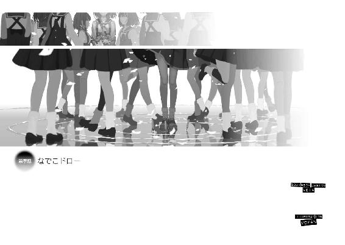
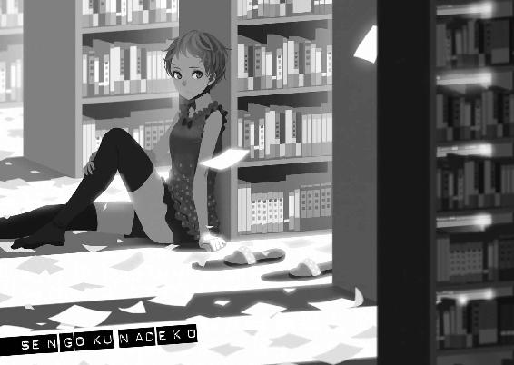
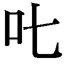
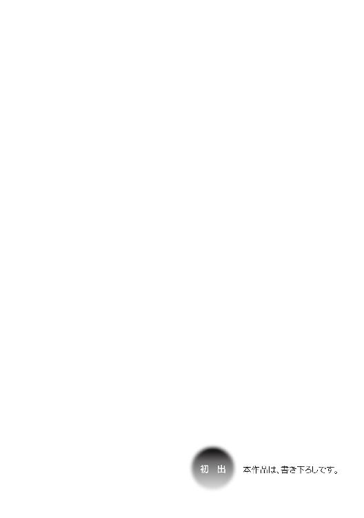

| 撫物語 <物語> (講談社ＢＯＸ) | |
| 西尾維新 | |
| 講談社 (2016) | |
本作品は、縦書き表示での閲覧を推奨いたします。横書き表示にした際には、表示が一部くずれる恐れがあります。
ご利用になるブラウザまたはビューワにより、表示が異なることがあります。
BOOK＆BOX DESIGN VEIA
ILLUSTRATION VOFAN


千石撫子の人生が、もしも現在連載中の漫画だったとするなら、一巻から最新十五巻までを一気読みしたとき、きっと私は、『この主人公、キャラがブレブレだなあ』と思うことでしょう。そんな読後感を味わうことでしょう。
四巻と八巻で言うことが違っていたり、いつの間にか目標が変わっていたり、言ってることとやってることが正反対だったり、一人称がまるで統一されてなかったり、デザインさえたびたび梃入れされていたり、口癖も一定じゃなかったり、場合場合で趣味がちぐはぐになっていたり、肝心要の好きな男の子まで、シチュエーションに応じててんでばらばらだったりするでしょう。
それは長期連載にとっては避けられない宿命であって、そういう矛盾を含めて愛してこそ、真のファンというものなのかもしれませんが、しかし、一読者としては、やっぱり得心しかねるものがあります。だから長く続け過ぎてキャラがブレないうちに話をまとめてしまいたいと考える作者の意見に、私はある程度の賛意を示せるのです。
いえ、『一読者としては』どころか、千石撫子は他でもないこの私なんですけれど、だからこそ、その時々の私が、まるで別人のように思えます──あのときの私と、あの頃の私と、あの時期の私と、あの期間の私が、同一人物だとは、とても思えません。
何としても思えません。
残像のように──ブレています。
過去を振り返り、殊勝に自省しようとしても、『あれって、本当に私のことだったのかなあ』なんて、とんでもなく無責任なことを考えてしまいます──私みたいななんでもない子に、あんな大それた悪さができたとは、ちょっとばかり思いにくいというのもあります。
あれらの出来事は、明白に私の裁量を越えていたのですから。
もちろんそんなのは、ただの逃避でしょう。
高くつく現実逃避でしょう。
責任逃れであり、不道徳でもあると思います。
かつての自分を現在の自分と別人のように取り扱えば、それで現在の自分を守れるのかもしれませんが、結局それは、自分で自分をないがしろにしているだけなのでしょう──現在の自分を大切にするように、かつての自分も大切にしなきゃいけないのだと、それこそ今となっては、切実に思います。
もっとも、私個人のキャラのブレかたに関して言うなら、人生が長く続いたゆえの、長期連載ゆえのこととばかりも言えません。
私は同じ回でだって、言ってることややってることが、きっとブレていたでしょう。あっちでいい顔をして、こっちでいい顔をして、こっそり辻褄を合わせてちゃっかり帳尻を合わせて、結果矛盾を生みながら、おっかなびっくり騙し騙し、次回に繫いでいたことでしょう。
人はそれを八方美人と言います。
あるいは──そう、もっと辛辣に、かわいこぶりっことも。
キャラのブレかたとか関係なく、そんな好感度の低い奴が主役を張っている物語は、さっさと打ち切られてしまえと、言いたくなる人の気持ちもわかります──そんな呪いをかけられてしまったのも、今から思えば、必然性があります。
必然性のある呪いです。
そういう感慨も、はたまた逃避なのかもしれませんし、呪いをかけられたときの自分も、呪いをかけたときの自分も、遠目に見れば、実のところ今の私と、なんら変わることのない等比なのかもしれませんが。
遠目に見れば。はたから見れば。
変化も成長もないのかもしれませんが。
でもやっぱり、鏡を見るようには、昔の自分を見られませんし、誰かの前にいる自分と、一人でいるときの自分は、まるっきり別人に思われてなりません。
自分、自分、自分。
さながら多重人格のようです。
いや、多重も何も、『人格』なんて大層ご立派なものが、私にあるのかどうかは疑問ですが──私ほど、『格』なんて言葉が不似合いな輩も、なかなかいないでしょう。
いやはや。
ところで、キャラがブレると言えば、最近お友達になった斧乃木余接ちゃんは、そのプロフェッショナルであると言えます。
人形童女、斧乃木余接。
ヒト型の怪異である彼女は、人形の怪異である彼女は、周囲から影響を受けやすく、周りの人間に合わせてキャラクターが揺れ動くことこそが、その真骨頂なのだそうです。
絶対に漫画には登場できません。
作者の技量が疑われます。
本人は当然、そんな細やかなことをいちいち気にしてはいないんですけれど、あるとき、彼女はこんなことを言っていました。
あるとき、と言うのは、つまり、そういう風に彼女のキャラクターがブレていたとき、という意味ですね。
「いつでも、どこでも、誰とでも、ずっと同じ性格で通せる奴なんて、いたらそのほうが異常だと思うけれどね。いたらそいつは排除すべき危険分子だよ。どんな人でも、どころか神様だって、機嫌のいいときと悪いときはあるだろう──その日、体調が悪ければ、口のききかたは乱暴になるかもしれない。電話を受けたとき寝起きだったら、ぞんざいな対応を取ってしまうかもしれない。晴れてるか雨が降ってるかで、バイタルも変わってくるかもしれない。孫が誕生した瞬間だったら、許しがたい巨悪さえ許せるかもしれない。余所でしくじった直後で、埋め合わせをしたい気持ちかもしれない。誰しも感情があるし、たとえなくても、状況はある。常にフラットでいるなんて、不可能だよ──しかも、受け取り手にもコンディションはあるしね。聞くほうに聞く気がなければ、どんな箴言も戯言だよ。そして誠に残念なことに、こういう事実は何ら言い訳にもならず、僕達は、それらすべてをひっくるめて、己自身として背負わなくちゃいけないんだ」
僕達、と、怪異である彼女からまとめられてしまったあたり、現在の私もあんまり、人間味を帯びていないのでしょう。
さもありなん、です。
図々しくも、自分の人生を長期連載にたとえてみましたけれど、実際のところ、十五歳現在の私の人生は、読み切りさえ掲載されていない、企画ボツ続きなのですから。
あのときの私も。
あの頃の私も。
あの時期の私も。
あの期間の私も。
そして現在の私も──決して世に出ることのない、いまだ始まりを知らない、ゆえに終わることもない、たったひとりの千石撫子なのです。
「危な────────く、ないっ！」
久し振りの外界で道路の勝手がわからず、曲がり角で飛び出してしまった不用心な私に衝突する寸前、その自転車はハンドルを真横に切る形で急ブレーキをかけて、その結果、車体は勢い余って後輪から、はるか上空を飛翔しました。いえ、はるか上空とは言い過ぎました──ぎりぎりです。まるでスリルを楽しむサーカスのごとく、金属の塊である自転車は私の頭部をすれすれに飛び越えます──もしも私の髪型が昔のままだったら、ごっそりもっていかれていたことでしょう。
際々と言いますか。
まさしく危機一髪です。
ただ、危機一髪で済んだのは私のほうだけであって、私との衝突事故を曲芸じみた駆動で、見事回避してみせた自転車のほうは、無事では済みませんでした。
自損事故を起こしていました。
着地には見事失敗し、さながらエアホッケーのパックのようにアスファルトの上をしゅるるるるーっと滑っていった挙句、激しい音を立てて、ガードレールに激突しました。
まさに激突。激しく突っ込みました。
予想だにしない大事故の発生状況ではありますが、なんだか既視感があります。
知ってる気がします。
これとほとんど一緒みたいな事故が、ここと同じような場所で、確か去年の十月末頃にあったような......。
それが私の勘違いかどうかはともかくとして、受け身も取れずにガードレールに衝突し、ぴくりとも動かなくなってしまった自転車の乗り手には、おやおや、見覚えがありました。
そう。
忍野扇さんです。
「お、お怪我はありませんか？」
なんにせよ、慌ててとてとて駆け寄りながら、私はそう声をかけます──たとえ前に同じことがあったからと言って、今回も扇さんに、怪我がないとは限りません。と言うか、普通なら前回だって大怪我です。
場合によっては、救急車を呼ばなくてはならないでしょう。私は携帯電話を持っていないので、その場合、扇さんの携帯電話を勝手に使わせてもらうことになりますが──学ランのポケットとかに入っているでしょうか？
ん？ あれ？ あれあれ？
学ラン？
「平気っ！」
私が真横にかがみ込むと、扇さんは（案の定と言いますか）、ばね仕掛けのようにびよんと、上半身を起こしました。
のっぺりとした笑顔です。
体面を重んじて心配はしてみたものの、実のところこんなことだろうとわかっていたので、そんなに驚きませんでした。
「やあ、千石ちゃん、初めまして！ 僕は忍野扇と言うんだよ！」
「......前に会ったことありますけど」
事故直後とは思えないその剣幕に、私はたじたじになりながら（そもそも、生身の人間とお喋りをする機会もまた、著しく久し振りです──斧乃木ちゃんと月火ちゃんを除いて。あのふたり、ほとんど生身の人間じゃありませんし）、それでも、一応、そう主張しました。
主張は大切です。
かつて接点のある人から忘れられて、初対面の挨拶をされるというのは、なかなか寂しいものですし──ん？ あれ、そう言えばあのときは、逆だったような？ 私が扇さんを知らなくて、扇さんが私を知っていたような──
「僕は何も知らないよ──きみが知っているんだよ、千石ちゃん」
「............」
「いやいや、僕は別に、忘却探偵というわけじゃないよ──着色も真逆だしねえ。はっはー、今の僕にとっては、千石ちゃんはまごうことなき初対面なんだ」
立ち上がりつつ、扇さんはぱんぱんと、学ランについた土埃を払います──学ランです。まごうことなき学ランです。
男子以外の何者でもありません。
ええ、そうでした。忍野扇さんは、直江津高校二年生の、男の子でした──そうに決まっているのです。
私はそれを知っています。
忍野扇。
妖怪変化の専門家である忍野メメさんの、甥っ子さんです──去年、私とニアミスしたときからそうでした。
そうだったと記憶しています。......記憶しているはずです。
それにしたって、扇さんがどうして初対面を装うのかは意味不明ですが、まあ、深入りするのは避けておきましょう。
私も時間があるわけではないのです。
むしろ時間はないのです。いくらあっても足りないのです。
不用心な私が曲がり角を飛び出したのには、そして引きこもりの私が部屋を飛び出したのには、ちゃんと理由があるのです。
「きみのほうこそ怪我はないかい？ 千石ちゃん」
「あ、はい......、大丈夫です。扇さん」
「はっはー。扇さんだなんて、そんなよそよそしい呼びかたをしなくてもいいよ──親しみを込めて、扇お兄ちゃんと呼んでくれて構わないよ」
はっはー。
『初対面』の男子高校生を、お兄ちゃんなんて呼ぶ女子中学生がいれば、一度でいいから会ってみたいものです。
「あれ？ でも、ほにゃらら先輩のことは、そう呼んでたんじゃなかったっけ？」
「............」
「失礼、嚙みました、なんてね。で、千石ちゃんは、これから学校かな？」
質問をすぐに変えてくれたのはありがたかったですけれど、全部わかってて訊いているみたいなそのにやにや笑いは、あんまり心地いいものではありませんでした。
率直に言って不快です。
変えられた質問もまた、愉快なものではありません。
学校なんて、ここ半年以上行ってませんもの。
そもそも制服を着ていない、部屋着のスウェットのまま、サンダルで飛び出して来てしまった私を見て、『これから学校』なんて思うはずもないでしょう──ご覧の通り緊急事態なのです。
エマージェンシーなのです。
もしも私の頭にサイレンがついていたら、間違いなく赤く光っていることでしょう。
だから、吸血鬼よりも太陽に弱くなってしまった虚弱な身体に鞭打って、ひいこら外界に出てきたのです──挙句の果てに、危うく自転車にひかれて死にそうになっているのだから、本末転倒のそしりもまぬがれません。
現実に転倒したのは扇さんですけれどね。
「じ、自転車は......、大丈夫、ですか？」
私は、意識的にはきはきと、発声します。
これは『初対面』の扇さん相手に、あるいは久し振りの生身の人間を相手に、緊張しているのもありますが、元々私の対人コミュニケーション能力は、低いのです。
地を這っています、蛇のように。
昔はびっしりと前髪を伸ばしっぱなしにして、顔を隠していたくらいの恥ずかしがり屋なのです──忍野メメさんからは、照れ屋ちゃんと呼ばれていました。
照れ屋ちゃんって。
今から思うととんでもないニックネームをつけられてますね。
まあ、『恥ずかしがり屋』とか『照れ屋』とか言えば可愛らしいイメージですけれど、実際の私は『うじうじした暗い奴』でした。
その辺り、忍野メメさんの配慮も感じます──甥っ子さんにはない配慮です。
「ん？ 大丈夫大丈夫。ＢＭＸは丈夫さが売りだからね。そして僕も丈夫さが売りさ。学校まで行くんだったら送るよ？」
話を逸らさせてくれませんでしたが、そんな嫌がらせみたいな質問にいつまでも付き合ってはいられません──扇さんに怪我がなくて、自転車が壊れていないのなら、私としてはここにとどまる理由はないのです。
なんだかよくわかりませんけれど、たとえ急いでいなくとも、この人とぺちゃくちゃお喋りを続けることが、私の人生にとっていいことのようには思えないですよね。
昨年度のあれこれも、扇さんとのぺちゃくちゃから酷いことになっていったような......、いえ、やっぱり、昨年度のあれこれは、あれもこれも、どれも私自身の責任でしかないのですが。
私の人生の急変は、私のせいです。
ただ、それとこれとは別問題です。
この場合の『それ』というのは私の個人的な後ろめたさであり、『これ』というのは扇さんの個人的な怪しさです。
怪しさと──異なりです。
「学校に、行くわけじゃないから、ご遠慮します。それでは」
はきはきと、声を張って喋ろうとするあまり、句読点が必要以上に多くなりますが（『ご遠慮します』という表現が国語の授業的にはアウトであることも承知の上ですが、でもまあ、去年扇さんと話したときよりは、語彙が増えたつもりです）、とにかくそう言って、私はそそくさと、その場（事故現場）からの撤退を試みます──そこで。
「そうなんだ──てっきり学校に行くんだと思っていたなあ。だって、さっき制服姿の千石ちゃんを見かけたから」
と。
扇さんは、外連味たっぷりに言いました──なんですと？
「お──扇さん！」
「わ、なんだい。急に大きな声を出して」
「その私がいたところにこの私を案内してください──私、私を捜してたんです！」
一万時間の法則。
どんな分野でも、一流と呼ばれるような人達は、必ず一万時間以上の鍛錬を積んでいるという調査結果があるそうです。
裏返せば、一万時間以上の努力をすれば、どんな分野でも一流になれるという、これは希望のある話ではあるのですが、しかし、いざ具体的に一万時間という数字を考えたときには、やっぱり絶望的な気持ちになります。
希望の希少に、絶望します。
なにせ一日は二十四時間しかありません。
計算しやすくするために、これを丸めて二十五時間としましょうか──つまり、四日で百時間ですね。四十日で千時間、四百日で一万時間ということになります。
一年が三百六十五日ですから、さっき割り増した分をさっぴくことで帳尻を合わせて、一万時間というのは、約一年と、言い換えることができそうです。
「なあんだ！ たった一年努力すれば一流になれるんだ！」
楽勝楽勝！
と、ここで思うほど、私も牧歌的な生きかたをしてきたわけではありません──一応、人生らしきものを、十五年以上に亘って、送ってきたのです（ちなみに『らしきもの』というのは、別段へりくだっているわけではありません。一部、人生ではなかった期間があります）。
学校にも、中学二年生の途中まで通ってました。あんまり真面目にじゃありませんでしたけれど。おとなしいけれどあんまり真面目じゃないって、考えてみたら、厄介な生徒ですよね。そんな厄介な生徒だったから、私は厄介な仕事を押しつけられていたのかもしれません。
振り返ると、ですが。
笹藪先生とも、なんだかんだで共犯関係だったのかなあと、思わなくはないです──でも、過去をそんな、他人事のように振り返るのは、やっぱりいいことじゃないんでしょうね。
それはともかく、人間は、努力以外にも、生活というものをしなくちゃいけません。寝たり食べたりしなくちゃいけません。おトイレに行ったりお風呂に入ったり、服を着替えたり髪を切ったりしなくちゃいけません──努力だけをして生きていくわけにはいかないのです。
生活は努力の上に来ます。
努力は生活の上に成り立ちます。
ゆえに人には努力ができない時間帯があるのです。
誰だって、一日の半分以上は、生活に割くことになります──無理をして十二時間以上努力をしたところで、次の日、ぶっ倒れてしまえば、差し引きとんとんになってしまいます。
効率的に、継続的に努力を続けるならば、どんなに多く見積もっても精々、休憩を挟みつつの八時間が限度でしょう。
限界でしょう。
八時間。一日の三分の一ですね。
つまり、一万時間＝一年の方程式には、×３をする必要があります──三年ですよ。
三年かー。
気が遠くなるほどの年月ではありませんし、やればできそうな気もしますけれど、しかし、リアルに実感できる数字だけに『いけるなっ！』と飛びつけるほどの目安とは思えない、躊躇してしまうスパンではあります。
ぶっちゃけ、適度にうんざりする歳月です。
だって、『努力をする』と言えば非常に聞こえはいいですけれど、あることについて努力をしているときは、他の何かをサボっているときです。
大切だと思っている何かを優先して、大切かもしれない他の何かを、放棄しているのです。
たとえば、私。
私は今、漫画家を目指しています。
きゃ、言っちゃった！ なんて照れません。
本気です。
照れ屋ちゃんはもう照れ屋ちゃんではありません。
むしろ照らしてもらったのです──道を。
ある詐欺師さんに唆された、否、騙された結果でもありますけれど──でも、そのための努力を惜しむつもりは一切ありません。
うんざりしようと、食らいつきます。
この夢を丸吞みします。蛇のように。
ただ、その努力に、人生の大半を割こうという私の決断は、義務教育である中学校に、まったく通わなくなるという決断と、ほぼイコールでもありました。
私は、みんなが授業を受けている間に、自室にこもってがりがり絵の勉強をしているというわけです。
描いて描いて描きまくります。
放棄したのは授業だけではありません。
みんなが友達と遊んだり、喧嘩したり、仲直りしたり、学校という小さな社会で、生活力やコミュニケーション能力を磨いている間に、私が磨いているのは唯一、画力のみなのです。
一万時間の法則にならって言うなら、私は、就学という努力を投げうっているのです──このまま学校をサボり続けていたら、学生という努力をサボり続けていたらどうなってしまうのか、不安でないというと噓になるでしょう。
みんながぴかぴかに磨き上げた社交性は、私にはまぶし過ぎます。
だいたい、一万時間サボり続けることで、単にサボり癖がついてしまう恐れもあります。
まあ実際は、していた努力が実らなかった場合は、近いジャンルの何かで身を立てるというのが、処世術というものなのでしょうが......（『潰しが利く』という奴ですね）、ただし、一万時間の法則の真偽はともかくとして、私には、それだけの時間がありません。
その三分の一もありません。
なぜなら、私はついに言われてしまったからです──私はついに今朝、私のご両親から、言われてしまったからです。
『いつまでもそんな馬鹿なことをやっていないで、中学校を卒業したら働きに出なさい』──と。
「そうかいそうかい。馬鹿な一人娘に馬鹿と言うなんて、千石撫子をどろどろに甘やかし続けた子煩悩なパパとママも、ようやく重い腰ならぬ甘い腰を上げたってわけだ──それは言祝ぐべきだね。おめでとうございます」
斧乃木ちゃんは私からの愚痴を聞いて、無表情でそう言いました。無表情どころか、身体もポーズを取ったまま、ぴくりとも動きません──モデルを務めてもらっているのですから、私としてはそっちのほうがありがたいのですが。
私がＡ３のスケッチブックに、テーブルの上でポージングした彼女の姿を描いているのは、私の家の私の部屋です──現在の私は引きこもりなので、だいたいのシチュエーションは、私の家の私の部屋なのです。
斧乃木ちゃんは窓からやってきました。
最近は、私の部屋に、週四で遊びに来る斧乃木ちゃんです──遊びに来ると言うか、基本的に、愚痴を言いに来るのです。
そう、今日が例外であって、普段は基本的に斧乃木ちゃんが、愚痴を言うほうなのです──何についての愚痴かと言えば、阿良々木月火ちゃんについての愚痴です。
例外はありません。オール月火ちゃんです。
簡単に説明しますと、斧乃木ちゃん、斧乃木余接ちゃんは、現在、阿良々木家に潜入捜査中らしいのです。
秘匿すべき主な任務は、月火ちゃん、阿良々木月火ちゃんを見張ることだとか。
......考えただけでストレスフルなお仕事です。
そんな過酷な仕事がこの世にあるでしょうか。
その任務に絡んで、私が斧乃木ちゃんを手伝うことになったのですが、それ以来、彼女は私の部屋に、入り浸るようになりました。
週四で。
引き込もり気分が台無しです。
「阿良々木家にずっといると、頭がおかしくなりそうなんだよ」
だそうです。
息抜きで、籠城している私の部屋に遊びに来られても困るんですけれど、実際には、困るどころか、助かっています。
先述の通り、斧乃木ちゃんはデッサンのモデルを務めてくれるからです。
人形怪異である斧乃木ちゃんは、どんなポーズでもお手のものなのです──『考える人』のポーズでも、『ミロのビーナス』のポーズでも、お手のものです。その上、人形ゆえに疲れるということがないので、そのポーズのまま、何時間でもじっとし続けてくれますし。
ちなみに『ミロのビーナス』のポーズの際には、両腕をパージするという過激なサービスつきです──人形怪異でなければ絶対にできない、恐るべき（最初はマジで怖かったです）ポーズの再現率なのです。
いえ、ポーズだけではありません。
なんと彼女は、肉体を部分的に肥大化させたり、変形させたりすることによって、体格を恣意的にコントロールすることができるのです。小さくなることはできませんが、大きくなることはいかようにも可能ということで、ありとあらゆる体格のスケッチを、私にさせてくれるのです。
いやはや、万能じゃないですか。
「『例外のほうが多い規則』を、こんな風に平和利用してもらえる日が来るなんて、ついぞ思わなかったぜ」
と言う斧乃木ちゃんは、満更でもなさそうでした──難を言えば、表情だけはまさしく人形のように、無表情で固定されているのですが、まあ、そこまで求めるのは贅沢というものでしょう。
体格や衣服を描けるようになれば（また斧乃木ちゃんはいつも、ひらひらの描きにくい服を着てくれているのです）、漫画家になれると言うわけでもないのでしょうが、それでも、ともすれば顔の描きかたばかりを練習しがちな私にとって、斧乃木ちゃんの来訪は、非常に助かるのです。
大助かりなのです。
ただ、やっぱりそこは妖怪と言うか。
こちらからの愚痴に対しては、割と辛辣な意見が返ってきました──人形なので、血の通ってない意見が返ってくるのは当然なのですが。
「私が馬鹿って言われたわけじゃないよ......、私のやってることが馬鹿なことって言われたんだよ」
大差ないとも言えますし、そっちのほうが辛いとも言えます──私が馬鹿なのは、言われるまでもなく否定しがたい事実ですしね。
「いや、真面目な話、その辺はちゃんと考えたほうがいいんじゃないかな。僕はお前の努力が無駄だとは思わないけれど、まして馬鹿なお前のやってることが馬鹿なことだとは思わないけれど、実際問題、努力もタダじゃできないわけじゃない。努力は有料なんだよ。犠牲や代償を払ってするものだ。ゆえに義務教育である中学校の卒業をひとつの基準にするというのは、親としては真っ当だ──それとも、学校にも行かず、働かず、それでも二十歳までは親がかりでいようと思っていたのかい？」
だとすれば相も変わらずの甘ったれっぷりだねえと、抑揚なく斧乃木ちゃんは言うのでした。
返す言葉もありません。
そうですね。
別に二十歳までは親がかりでいようとか、虫のいいことを思っていたわけではありませんでしたけれど、将来のビジョンを持たないままに、がむしゃらに努力をしていたことは否めません。
今となっては黙秘もできません。
前を向いているようで、目を閉じていました。
自分に厳しい言いかたをすれば、私は努力に酔っていたところもあります──学校にも行かず、友達とも遊ばず、ひたすら漫画を描き続ける自分を、どこかストイックで、格好いいと思っていたのではないでしょうか。
その格好よさに、どれだけの費用がかかっているか、考えることもなく。
ストイックどころか、豪遊です。
現実から目を逸らしているという意味では、確かに、相も変わらずの甘ったれっぷりでした。
「むしろ独立しろと追い出さないところは、まだパパとママは甘いとも言えるよ。脇が甘いよ。そこは後ろめたさもあるのかな。一人娘を駄目に育ててしまった後ろめたさが」
それも否めませんが、一人娘を駄目に育ててしまったまでは、どうか言わないであげて欲しいものです。
駄目ですけどね。
駄目な一人娘ですけどね。
「そもそも、別に、働きながらでも漫画家は目指せるでしょ。なんだったら上京して、アシスタントで稼ぎながら絵の練習をするって言うのもいいんじゃないの？」
辛辣ながらも、意外と私の将来をちゃんと考えてくれる斧乃木ちゃんでした──怪異に心配されていては、世話がありません。
「一万時間の法則って言うのは、僕は眉唾だと思っているしね。できる奴は、ぱっとできちゃったりするし。逆に僕なんかは、三年どころか、妖怪になるまで百年かかっているからね」
「妖怪になるのにかかった年数は、参考にならないと思うけど......」
それこそ『例外のほうが多い規則』ですか。
完全なる公平を求めるのも無体なのでしょう。
個人差はあります、どうしたって。
「そうだね。一方でお前みたいに、一瞬の判断で、神様になっちゃう奴もいたわけだし」
「あれは判断じゃなくて、判断ミス......」
ただ、ミスと言うなら、今もまた、現在進行形で、私は大いにミスをしている真っ最中なのかもしれません。
斧乃木ちゃんが言ったように、独立して家を出て、アシスタントをするというのは、かなり現実路線な案のように思えますけれど、しかしそれを私がするとなると、途端に現実味を失います。
むしろフィクション性を帯びます。
先ほど、『夢を追う努力をするために、私は通学していないのだ』みたいなことを堂々と言いましたけれど、しかしながら実状はそんな格好いいものではありません──私は学校に行かないのではなく、行けないのです。
それだけのことを、教室でやりました。
やらかしました。
そんな協調性のない奴には、共同作業の現場である漫画家のアシスタントはおろか、アルバイトやらなにやらで、普通に働くことすらも、およそ無理難題でしょう。
社会性がないを通り越して社会不適合者です。
こうなると、努力の仕方を間違えてしまった感がありありです──闇雲に努力しても、夢に近づくどころか、遠ざかっている有様です。
そんなことってあるんですね。
さりとて、今更高校に進学するというのも、正直、それもそれで現実的ではありません──ただでさえいいとは言えなかった私の成績は、半年以上にわたる学業放棄で、衰退の一途を辿っていることでしょう。
この出遅れは、そうそう取り戻せません。
周回遅れどころか、逆走しちゃってます。
笹藪先生の温情（それこそ、後ろめたさの現れでしょうか）で卒業くらいはどうやらさせてもらえそうな気配ですけれども、その後の保障までは、さすがに求められません。
さあ、どうなるんでしょう、私は。
「努力の仕方。確かにそれって、大事だよね。同時に、不安要素でもある。今している努力が、ちゃんと将来に繫がっているかどうかって、結構悩ましいことだもんね──とどのつまり、伸るか反るかでやるしかないことだ。こうやって僕はポージングして、お前のスケッチに付き合っているけれど、立体的に人体を描く技術が、漫画家に絶対必要なものかと言えば、そんなこともないもんね」
そうですね。美術の技術ですものね。
先述の通り、決して役に立たないわけではないでしょうが、必須の技術ではありません──それよりも、面白いお話を考えるために、図書館なりに通うという努力をしたほうが、正しいかもしれないという迷いに、時に囚われます。
努力の仕方。
どんなに必死であくせく勉強しても、試験範囲を間違っていたら、テストでいい点なんて取れっこない──
「僕が見張っている阿良々木月火なんてのは、あれで無茶苦茶要領がいいから、大抵のことはうまくこなしてるけれどね。山勘にも優れていて、試験範囲を外すってこともないみたい──観察すればするほど、腹が立ってくる」
無表情で腹を立てている斧乃木ちゃんでした。
わかります。
わ、か、り、ま、す。
ちなみに、月火ちゃんも月火ちゃんで、この部屋にちょくちょく、引きこもった私の様子を見に来てくれるんですけれど（斧乃木ちゃんと違って、月火ちゃんはちゃんと玄関から来ます。信じてもらえないかもしれませんが、そのくらいの常識は、月火ちゃんにもあるのです）、その際、あの子は原稿を手伝ってくれます──手伝っているうちに、私よりもうまくなってしまいそうで、見ていてハラハラしています。
「くよくよ悩んでいても仕方ないんだけどね」
と、私。
努力の仕方で悩んでいても、仕方ない。
悩んでいる間に努力するべき──なのでしょうか？ 悩まずにいたせいで、私は私に至ってしまったとも言えるんですが。
それも仕方ないんでしょうか？
『くよくよ』でなく、前向きに悩むならいいのかもしれません。
「今の私にできることは、お父さんとお母さんを説得するためにも、中学校を卒業するまでに、どうにか一定の成果を上げることだよ。賞を獲るなり、なんなりね。残り一年足らずで、外で働けるくらいのコミュニケーション能力を身につけて、性格を明るくするよりは、そっちのほうが、まだしも可能性があると思う」
「やれやれ。賞レースへの参戦宣言か」
いえ、漫画ですから、基本的に賞レースにはどうしたって参戦せざるを得ないんですよ、斧乃木ちゃん？
「皮肉なものだね。戦場ヶ原ひたぎに対して、高校の卒業式までという期限を切っていたお前なのに、今度は自分が、そのタイムリミットに迫られることになるなんて」
ええ、自業自得ですとも。
笑わば笑えですよ。
あのときの私は、完全におかしくなっていましたが、だからと言って、完全には無責任にはなれないでしょう──報いは受けるべきです。
恩に報いるためにも。
「まあ、そうするしかないだろうけれど、それで成果を上げられなかったときの末路は、より悲惨になるであろうことは、僕は友人として、的確に指摘しておきたいな。漫画家の夢は諦めることになって、かと言って高校にも行けず、しかし働きにも出られないと言う末路」
末路どころか行き止まりですね。
八方美人の八方塞がり。
お似合いの未来でこそありますが、まったく、厳しいことを言ってくれる友人です。
そういう友人を、学内でひとりでも作れていたら、私の中学生活も、ずいぶん違う色味を帯びていたのではないかと思われます──厳しいことしか言ってくれない月火ちゃんとは、別の中学になっちゃいましたからねえ。
「そういう背水の陣が、お前の努力を効率的なものにしてくれるかもしれないというのがせめてもの気休めって奴かな。努力をできるって言うのは、やっぱり一種の贅沢でもあるんだろうし──『努力することが許される環境』と『努力しなければ生きていけない環境』は、似て非なるものなんだろうな、きっと」
「それはつくづくそう思う」
努力する才能、なんて言い出すつもりはありませんけれど、少なくとも私は、努力できる環境作りには失敗しました。
大失敗しました。
いっぱい失敗しました。精一杯大失敗しました。
生活の部分を完全に委ねてしまっている以上、私はご両親を説得しつつ、彼らの顔を立てつつ、夢を追うべきだったのです──ご両親からしてみれば、半年近く行方不明になっていた娘が、どうにか帰ってきたはいいけれど、入院ののちに引きこもりになってしまったと言うのでは、気を揉むどころではないでしょう。
その心情に対する配慮が足りませんでした。
私は人の心がわからない子です。
要するに私は、行方不明になる前となんら変わらない、一人っ子でした。
一人前なはずがありません。
「まあ、本当に夢を追う奴って言うのは、親に何を言われようと、どんな心配をかけようと、どんな迷惑をかけようと、自分を押し通す奴でもあるんだろうけどね。やめろって言われてやめるようじゃ、まだまだなんだと思うよ」
「その通りだと思うし、私もそうあれたらって思うけれど、それができている自分を、どうしてもイメージできないよ......、押し通すような自分がいないんだよ」
やめろと言われたら『やめろと言われたから』と、相手のせいにしつつやめる自分しかイメージできませんよ。
想像力がこうも貧困では、漫画家になんてなれっこないでしょうが──いえ、マイナス思考はよくありません。
プラス思考です。
一年足らずで成果を上げる自分をイメージするのです。
「どうしてもって言うなら、簡単に成果を上げる方法はあるけどね」
「え？」
簡単に？
じゃあ言いますよ、どうしてもくらい？
「千石撫子。さっきから聞いている限り、お前の悩みは、時間がないってことだろう？ 努力をしたいし、積み重ねを怠るつもりはないけれど、それでも、圧倒的に、突如宣告されたタイムリミットまでが短過ぎるって言っているんだろう？」
「う、うん......、そうだけど」
まとめられてしまうと、なんだか私がごねているみたいですね。
まあ、そりゃあ、ごねているんでしょう──学校をお休みさせてもらっているだけで、相当甘やかされていると言うべきです。
「甘やかされていると言うより、本当のところ、お前はスポイルされているんだよ。だから駄目に育てられたことについて、親に文句を言ったほうがいいよ。『私をこんな風に育てたのはお前らだろうが、ああん！』って」
「なんで私がそんな振る舞いをしたときのことを、斧乃木ちゃん、知ってるの？」
「僕も専門家だから」
「何の専門家なの......、言うわけないでしょ、そんなの」
ステレオタイプな反抗期ですよ。
その反抗期がなかったことが、千石撫子の、そして千石家の抱える問題だったことは確かなのですけれど。
それゆえに、私のご両親は、問題を解決するために、いきなり強硬な態度を取るようになったんでしょう──
「だから、方法はある。要するに、お前が中学生デビューしてしまえばいいんだろう？」
「うん、まあ......」
その言いかただと、いけてる中学生になろうとしている新入生みたいですが、中学生のうちに漫画家になること自体は、決して非現実的な夢ではありません。
少女漫画家ならば、十代前半デビューの先生も、決して希少ではないのです──もちろん、少数派ではありますし、少年漫画だったら、十代後半デビューが多いイメージでしょうか。
「方法はふたつある」
「ふたつ？ ふたつも？」
「片方は、決しておすすめではないけれどね──でも、千石撫子、僕はお前に並々ならぬ恩義を感じているから、それを教えてしんぜよう」
並々ならぬ恩義って。
私、月火ちゃんに関する愚痴を聞いてあげてるだけなんですが......、斧乃木ちゃん、阿良々木家の月火ちゃんの部屋で、どれだけ大変な思いをしているんでしょうね。
お察ししますけれど。
あと、『しんぜよう』という言葉遣いにも物申したくはありますが、しかし私としては、藁をもつかむ思いです。
この窮地から脱する方法を教えてもらえるのならば、斧乃木ちゃんにハーゲンダッツのアイスクリームを提供することも、決してやぶさかではありませんよ。
「教えて、斧乃木ちゃん」
「ひとつは、次の完成原稿に、お前の顔写真を貼った上で、投稿することだ。そうすれば編集部がお前を美少女漫画家として、祭り上げてくれることだろう」
淡々と言われました。
淡々としか言わないんですが。
「あるいは、これまで匿名で投稿していたインターネットの投稿サイトで、身分素性を明かすんだね。お前のドラマチックな人生は、作品を実際以上に輝かせて見せてくれるに違いない」
「......それ、すると思う？」
「しないだろうね。一応、言ってみただけ......、髪型をベリーショートにしたり、だぼだぼのスウェットみたいなルームウェアで一日中過ごしていたり、お前は昔に比べて、だいぶん『可愛さ』みたいなものを打ち消しているみたいだけれど、まるで償いか自傷行為のように、意図的にそうしているみたいだけれど、それでも、元々の素材が良質だからね。プロのカメラマンに撮影してもらったコンポジを同封すれば、ＶＩＰ扱いだと思うよ。女性誌からも声がかかるかも」
「女性誌から声がかかったら、いよいよ夢がズレて来ている」
「モデルの仕事をしながら、ランウェイを歩きつつ漫画家を目指すというのも、メディアが喜びそうなキャラクターだよ」
どうしてこの怪異は、メディア戦略に秀でているのでしょう。
「そういうアプローチも、一概に否定したもんじゃないと思うんだけどね。これは邪道というほどのルートじゃないよ。抜け道でもなければ裏道でもない、高速道路だ。お前の可愛さって言うのも、立派な才能なんだから。それを宝の持ち腐れにするのは、国家にとって損失だと思うよ」
どこまで評価してくれているんでしょう。
国家って。
「一万時間の法則で言うなら、お前は三年どころか、十五年以上に亘って可愛くあり続けてきたんだから、文句なく一流だよ。一流のカワイコちゃんだよ。その使いかたを間違えてしまったせいで、昨年度はえらいことになってしまったけれど、その愛らしさは正しく使えば、世のため人のために、役立てることもできるはずなんだ。アイドルを見なさい。男子も女子も、可愛いということで、どれだけの人を幸せにして、どれだけの経済効果を生んでいると思うんだい」
経済効果で語られてしまうとなんですけれど、幸せという点について言うなら、その通りでしょう──もっとも、私にその真似ができるとは思いませんよ。
見なさいって諭されても。
しかしまあ、アイドルにも詳しいんですか、この怪異。
「こんな可愛い十代の少女が、残酷で血みどろの世界観を描いているというギャップは、今の世に求められていると思うな。反動としてのやっかみが起こる可能性は否定できないけれど、そこはほら、引きこもりで友達ぜんぜんいませんでしたみたいなマイナスプロモーションをすることで、攻撃しづらい雰囲気を作ろう。お前を攻撃したら酷い奴に見えちゃう空気を醸造するのは、そんなに難しくない。僕に任せておけ」
「しないって言ってるでしょ？ 私のプロモーションをしないで」
しかもマイナスプロモーションを。
そして私、別に残酷で血みどろの世界観を描いてはいませんからね？
「そうだね、じゃあ、この案は取り下げて、二つ目の方法をプレゼンしよう」
斧乃木ちゃんはあっさり引きました。
まあ、言ってみただけなのでしょう。
おすすめしないって、最初から言っていましたもんね。
「いいや、千石撫子。僕がおすすめしない片方というのは、二つ目のほうなんだよ。僕としては、これはやるべきじゃないと思う──だけど、お前がアイドル漫画家路線を拒否するというのなら、方法はもう、これしかない」
「え？ これしかないって──」
「残り一年で、お前が一万時間の努力をすればいいんだよ」
もちろん淡々と、おすすめだったらしい第一案とまったく同じ調子で語るので、うっかり聞き逃しそうになりましたけれど、えっと、今なんて言いました、この子？
「残り一年で、お前が一万時間の努力をすればいい──だよ。厳密には、残りおよそ十ヵ月だね。十ヵ月で、お前が一万時間の努力をすればいい」
「い、いやいやいやいや！ 無理無理無理無理！」
無理って話をずっとしてたじゃないですか！
不眠不休で二十四時間努力をして、それでようやく、一年で一万時間、達成できるかできないかくらいなんですよ？ そりゃ、これまでおこなってきた努力も含めれば、もうちょっとマイナスされるかもしれませんが......、そんなの、誤差の範囲内でしょう!?
二十四時間ぶっ続けで絵を描き続けていたりしたら、私みたいな虚弱な子、一週間以内にぽっくりいきますよ？
「そう。そこだよね。一万時間の法則の、一番の穴は、そこだと思うんだよ、僕は──まるで、一万時間以上努力をすれば、絶対に一流になれることが担保されているような物言いそのものは、まあ、勇気を鼓舞する意味で、よしとできなくもない。ただ、練習量こそが夢を叶えるための切符であるという定義は、故障者の出現率をまったく無視している。練習量を増やそうとするあまりのオーバーワークは、夢から遠ざかるための最短距離となる──努力をし過ぎることは、決して合理的じゃないんだよ。考えるべきは、努力のクオリティなんだ。質の悪い努力をいくら重ねても、マイナスにしかならない──マイナスプロモーションにしかならない」
わかってるんじゃないですか。
そうですね。
ぽっくりというのは大袈裟にしたって、適度な休憩を挟まずに描き続けていれば、腱鞘炎になってしまうでしょう──それが慢性化してしまえば、漫画家の夢を、諦めざるを得ない状況に追い込まれかねません。
故障でリタイヤしたからって、『ほら、途中で努力をやめたから』なんて言われたら、やってられませんよね。
やってられないどころか、やりたくてもできなくなったんですってば。
ハードワークは、確かにスター選手を生み出すかもしれませんが、ひとりのスター選手を生み出すために、百人の故障者を生み出しているようでは、そのトレーニングは、優れているとは言えないはずです。
「万骨枯れて一将功成る、だね。いや、むしろ蠱毒にたとえるべきかな──それは、漫画家になってからも、そうなのかもしれないけれど。確率的にヒット作を生み出すためには、とにかく多くの漫画家に、とにかく多くの漫画を描いてもらうのが一番だからね」
「うん。昔は本当に、そんな感じの世界だったとは聞くよ」
厳しい競争社会であることには違いないようですが、最近はもうちょっと、人権に配慮がなされているそうですね。
何よりです。
まあ、それは私にとって、あるかどうかも不確かな、先の話でしょう。
「じゃあ、どうすればいいの？ オーバーワークじゃなく、それでも一年足らずで、一万時間の努力をするなんて、絶対無理じゃない。不可能じゃない。三年かかることを一年でやろうと思ったら、質が多少下がっても、努力の量を、三倍にするしかないんだから」
「やれやれ。お前はかつて神様だったこともあるような女の子だろう。通す自分がいなかろうと、無理を通すことくらい、漫画家になるよりは簡単なんじゃないのかい？」
斧乃木ちゃんはそう言って、無表情のまま、第二案の肝を、披露しました──もしもキメ顔ができるのであれば、きっとここで、それを見せてくれていたことでしょう。
「努力の量を三倍にするんじゃなくって、お前の人数を三倍にすればいいんだよ」
お前の人数を三倍にすればいい。
お前の人数。
斧乃木ちゃんがいったい何を言っているのか、まったく意味がわかりませんでしたが、そんな私を置き去りに、
「だから、お前も含めて計三人いれば......、いや、それじゃあちょっと心許ないか。じゃあ、計五人かな。そうすれば、ローテーションでうまく回していけるだろうし」
と、細かい数字の微調整を始めました。
さすがに私は、スケッチの手を止めました。
一体全体、この子は、私に何をさせようとしているのでしょう？
私は戸惑うばかりです。
「いやいや、だからさ、さっきお前も言ってたけれど、漫画家っていう仕事は、基本的にアシスタントを含めた共同作業なわけじゃない。個人と言うよりは、ひとつの組織のメンバー、グループの一員として動くことになるわけだ」
「う、うん。重要なのはチームワークなんだよね。だからコミュニケーション能力が高くないと、やっていけないって......」
「つまりお前にはアシスタントどころかチームリーダーになれる資質があるかどうかも怪しいわけだけれど、それは将来の課題として、でも、いくら内気なお前でも、今のお前でも、相手が自分だったなら、いくらでもコミュニケーションを取れるだろう？ だからアシスタントとして、自分自身を四名、準備すればいいんだよ」
ますます意味がわかりません。
私がスケッチブックを閉じたのを受けて、斧乃木ちゃんもポージングをやめて、テーブルの上からひらりと飛び降りました。
音もなく着地します。
そのわずかな挙動からでも、並々ならぬ身体能力を窺わせます。
「はばかりながら言わせてもらうと、これは、僕の専門分野でもある──言ったっけ？ 僕は人形怪異であると同時に、陰陽師の式神なんだよ」
「式神」
ええと、その言葉自体は、よく聞きますけれど。
て言うか、漫画でよく読みますけれど。
それが厳密にはどういうものなのか、よくわかりませんね。
陰陽師についての基礎知識さえありません。
斧乃木ちゃんが怪異だと言うことは、初対面のときに聞いていましたけれど、しかし、そう言えば、その出自や詳細について、これまではちゃんとは聞いていませんでした──こうやって勿体ぶらずに話してくれるところを見ると、別に機密であるというわけではないのでしょう。
「神と言うのは、かつて神様だったお前を前にしたらおこがましいから、ここは使い魔と言ってもいいけどね。ざっくばらんに言えば、ご主人様の代わりに働く、忠実なる下僕みたいなものだ──ただし、吸血鬼の眷属よりは、式神はもうちょっと代理人としての性格が強い。眷属が家族なら、式神は召し使いだ」
僕の場合は、ご主人様であるお姉ちゃんが地面を歩けない人だから、その代わりの足となって、あっちこっちにフットワーク軽く動く役割を負っているんだよ──と斧乃木ちゃんは平たく説明してくれました。
平たく言われても、理解は深まりませんが。
かつて神様だったと言われても、私は怪異方面の、専門知識を持っているわけじゃあありませんからね──あのときはいろいろ、大切な過程をすっ飛ばしました。
お姉ちゃん？ 地面を歩けない人？
「機会があれば紹介するよ。お姉ちゃんなら、お前に出会い頭に説教してくれるはずだ」
出会い頭に説教されるのは嫌ですけれど。
お姉ちゃんと言っても、その言い振りからすると、実の姉というわけじゃないのでしょうね。
人形の姉というのも、観念的ですし。
「ともかく、お姉ちゃんにとっての僕のような、自身の代理人となる式神を、お前が作ればいいと、僕は提案しているんだ。ひとりじゃ無理でも、五人がかりでなら、努力も、努力の成果も、一年足らずでなんとかなりそうじゃない？」
うーん。
よくわからないなりに、斧乃木ちゃんの言わんとすることはわかってきた気もしますが......、『式神を作れ』って、やっぱり、夢みたいなことを言っていますよね？
「そのくらいの夢も叶えられなくて、漫画家になるって夢を叶えられると思うのかい？」
いえ、それは思いますよ。
いい台詞みたいに言わないでください。
「具体的に計算してみよう」
言って斧乃木ちゃんは、私が抱えていたスケッチブックをするっと抜き取って、筆立てから一本、Ｇペンを取り出しました。
なぜＧペン。
カブラペンならばいいというわけではありませんが。
「卒業式までの残り日数を十ヵ月、およそ三百日とする。これで一万時間を割る。桁を揃えて、三日あたり百時間。つまり、一日あたり、およそ三十三時間の努力が必要になる」
その時点で、本来計算が破綻しています。
九時間オーバーです。
しかし斧乃木ちゃんは、構わずペンを走らせます──初心者には使いにくいＧペンを、結構巧みに使いこなします。
握りかたは、ぐー握りですが。
「この三十三時間を、グループで割る。五人がかり。働き蟻の法則にのっとり、働き手とベンチウォーマーを『８：２』、つまり四人働いて、一人休憩するというローテーションを組む。つまり実働人数は四人。一日あたり、八時間の努力をすると考えて、８×４で、三十二時間。三十三時間まで、一時間足りないから、じゃあ、ひとりあたり八時間十五分、働くとしようか。これで計、三十三時間──一万時間の努力ができるね」
「はあ......」
なんか、数字に誤魔化されている気もしますが、確かに、もしも五人グループで、ローテーションを組んで努力をするのならば、卒業式までの間に、合計一万時間の努力ができそうです。
もちろん、机上の空論であり、実際には体調の悪い日や病気の日、トラブルでひとりも稼働できない日もあるでしょうから、計算通りにはいかないでしょうけれど、しかし繰り返しになりますが、今日までだって、私は努力を怠ってきたつもりはないのです──それも含めれば、一応、法則の基準をクリアすることはできるでしょう。
ただ、これはこれで、第一案とは違う意味で、非常に抵抗の強い案でした。
「斧乃木ちゃん。私は、努力を誰かに代わってもらおうとは思わないよ......、だって、今まで、月火ちゃんとか、貝木さんとかに、そういうのを押しつけて来ちゃってたから、こんな体たらくになったわけだし」
「うん。それは本当にそう思う。完全に同意する。お前の言っていることはまったく正しい。やっと正しいことを言ったな」
同意がでかいです。
私へのフラストレーションもまあまあですね。
「だから、あくまでも努力は、お前自身がするべきなんだよ──努力をするのは、お前であるべきだ。つまり、式神を作ると言っても、その式神は、あくまでも千石撫子でなければならない──僕は最初からそう言ってたつもりだよ？ 本来、使い手にとって代理人である式神というのは、そういうものだしね」
ゆえに、と。
斧乃木ちゃんはスケッチブックの白紙のページを開いて、私に返してきました。
「これからお前は、このスケッチブックに、四通りの自画像を描きなさい──四人の千石撫子を描きなさい。僕がそれを、立体化してあげる」
具体化して。
四体の式神にしてあげる。
なるほど。
ようやく、頷けるようになりました。
領ける部分が出てきました。
斧乃木ちゃんの主張するコンテキストが読めてきました──つまり斧乃木ちゃんは、『ドラえもんだらけ』みたいなことを、私にやらそうとしているわけですね。
『ドラえもんだらけ』。
名高い『ドラえもん』の中でも、児童向けの作品でタイムパラドックスを描いたとされる、初期の意欲作です。
たとえ読んでいなくっても、『さようならドラえもん』や『おばあちゃんの思い出』、『のび太の結婚前夜』と同日に語られるくらい有名なお話ですから、何らかの形で誰でも知っていると思うので、野暮になりかねない詳細なあらすじの紹介は避けますけれど、簡単に言うと、タイムマシンを使って連れてきた、いろんな時間帯のドラえもんが、のび太くんに託された大量の宿題を、五人がかりで執り行うというエピソードです。
まあ、私の場合、タイムマシンはありませんので、二時間後の私や、四時間後の私を連れてくることはできませんが、しかし、別のアプローチは可能だと、斧乃木ちゃんは言うのです。
持論を展開するのです。
「ほら、覚えてる？ 僕がこの部屋を、最初に訪れたときのこと──あのとき、お前に蛞蝓の絵を描いてもらったじゃない。阿良々木月火の目を欺くために、お前の中に残存していた蛞蝓豆腐を、プロの腕前で巧みに利用させてもらったわけだけれど、しかし、あのとき、僕が予想していた以上に、お前の描いた蛞蝓豆腐がパワフルな怪異として立体化しちゃったんだよね」
「はあ......、うん、そんなこと、言ってたね」
「もちろんそれは、阿良々木月火のヤバさの証明でもあるんだけれど、お前の画力の証明でもあったと思うんだ。潜在能力とでも言うのかな。僕がこうして、お前の元にたびたび足を運んで、モデルとして協力してあげているのも、愚痴を聞いてもらっている恩返しであると同時に、あるいはそれ以上に、お前に異才を見出しているからだ」
「異才を？」
不覚にも、ちょっと嬉しくなってしまう言葉でしたが、残念ながらそれは、私の期待したような意味合いではありませんでした。
「お前にはその辺の専門家よりも、有効なお札を描けてしまうリスクがある」
「お札なんて描きたくないんだけど......」
私、お札のせいで酷い目にあったんですけど。
まさか斧乃木ちゃんが、そういう意味合いで、私の部屋に日参してきていたとは、ついぞ思いませんでした。
異才の異は、怪異の異なんですね。
リスクって。
私にとってはお札がリスクなのに。
観察対象にされているんじゃ、月火ちゃんと一緒じゃないですか。
月火ちゃんと一緒。なんとおぞましい立場でしょう。
「姿を持たない妖怪変化にとって、ビジュアル化って言うのは、極めて重要なファクターなんだよ。鳥山石燕しかり、鳥山明しかり」
鳥山石燕先生と鳥山明先生を、並べて語るのを初めて聞きました──まあ、影響力という点においては、まさしく両雄並び立つという感じではありますけれど。
ビジュアル化ですか。
「小説ってなんだかとっつきにくいところもあるけれど、表紙でキャラクターが描かれていたら、イメージしやすくなるでしょ？ 有名なシャーロック・ホームズの鹿撃ち帽だって、実はあれ、挿絵画家の独創だったりもするんだけれど、今となってはまさしく名探偵の象徴って感じじゃない」
鹿撃ち帽のエピソードは有名ですけれど、話、逸れてませんか？
いや、情報としての画力の強さみたいな話をしているのだとしたら、逸れてはいないのでしょう──本来、口伝でしか語られようのない怪異譚を、絵で表現することには、大きな意味があったのでしょう。まして昔の日本では、今ほど、識字率が高くなかったはずですからね。
目に見えない怪異を絵にすることで読み解くというのは、なんとも皮肉ですが。
「うん。ボーカロイドの初音ミクだって、性能のすばらしさに匹敵するキャラクターデザインがあったから、これほどまでに愛されたわけでしょ？ 一方で、赤毛のアンの表紙って、最初は金髪の女の子が描かれていたそうなんだよね。原題は『赤毛のアン』じゃなかったから、それでよかったのかもしれないけれど──そうなると、タイトリングというのも実に重要だね。未来から来た初めての音、初音ミクしかり」
初音ミクに対する愛情が深いですね。
赤毛のアンの話は知りませんでした。
原題は『グリーン・ゲイブルズのアン』なんでしたっけ？
「と言うわけで、僕はここでお前の異才を試したい。お前の画力に、絵に、イラストレーションに、いったいどれだけのエネルギーがあるのか──もしもお前の自画像が式神たりえる自画像であったなら、そのときはお前を臥煙さんに紹介してあげよう」
それ、私にとって、何か得がありますか？
その臥煙さんってかたは、私が神格化した理由の、重要な一角を占めてらっしゃるかたでは？
そのかたを責めるつもりはありませんけれど、それゆえにそのかたが私のことをどう考えているのかを思うと、正直、これ以上かかわり合いになりたくないのですが。
「だからこそ、だよ。恩返しというのはあながち建前じゃない。なぜなら、キスショット・アセロラオリオン・ハートアンダーブレードと違って、千石撫子、お前はまだ無害認定されていないんだ。結果、そんなに悪いことはしていないし、考えようによっちゃお前のお陰で町に平穏が保たれていた時期があるのもまた確かなんだから、現在のところ対処がぶらりと宙に浮いているってだけで、専門家次第によっちゃあ、お前は今更のように退治されてもおかしくないんだよ。むしろ、神様じゃなくなったからこそ、安心してノーリスクで、ここぞとばかりにお前を退治して手柄をあげようという専門家が出てきても、まったく不思議じゃない」
世知辛いですね。
私はそれだけのことをしてしまったのでしょうけれど、ただ、因果応報ではなく、罪に対する罰でもなく、手柄のためだけに退治されるというのは、さすがに嫌ですね。
「だよね。そこで臥煙さんに対してお前の類まれなる異才を見せておけば、お前が有事の際に利用できる奴だっていうところを見せておけば、あのコネクションの化物みたいな元締めの庇護下に収まることができるってわけだよ」
専門家なのに化物みたいなんですね。
利用できる奴って......、見せたくないですねえ、そんなところ。
なんだか、うまく言いくるめられている気もしますけれど......、でも、得かどうかはともかく、まあ、私にとって、損のある話ではなさそうです。
正直なところ、確認したかったという気持ちもありました──私の描いた蛞蝓の絵が、怪異として立体化した際、斧乃木ちゃんも持て余すほどに強力だったという仰天のエピソードは、果たしてどのように受け止めたらいいのか、難しいところがあります。
リスク。
一生懸命描いた漫画が一生懸命描いたがゆえに立体化して、現実化して、怪異化したら、大事件です──手柄目当てじゃなくても、ただちに退治されてしまうでしょう。
もしも私に、まだそんなパワーが残ってしまっているというのなら、完全に削除するか、それができないのならば、コントロールできるようになっておきたいところです。
ならばこのたびのテストは、私にとっても、試金石にもなるでしょう。
ふむ。
「わかった、じゃあやってみるよ......、私を四人、描けばいいんだっけ？」
自画像を描くというのは、まあ、絵を描く上では、基礎中の基礎みたいなものなので、さほど大変でもありません。それこそ、斧乃木ちゃんが頻繁に来訪してくれるようになる前までは、私は姿見の前でポーズを取ったり、自分の写真を撮ったりして、自分自身をモデルに、人物デッサンをしていたものですし。
ただ、
「うん。でも、一応、デザインはそれぞれ、変えておいてもらえるかな？」
と、斧乃木ちゃんから注文がつきました。
「誰が何番目の千石撫子なのか、区別がつかなくなっちゃっても困るわけだし。最悪、五人のうち、どの千石撫子が本物の千石撫子かわからなくなったらおおごとじゃない」
おおごとどころじゃありません。
アイデンティティ崩壊の危機です。
「真面目な話、そうやって代理人のはずの式神に存在を乗っ取られちゃう陰陽師の話もないじゃないから。だから同じ千石撫子でも、四人それぞれに個性はつけておいてくれる？」
結構な注文ですね。
漫画の中に双子の兄弟を登場させるとき、そっくりではあっても、読者からは区別がつくように、細部に配慮しておくようなものでしょうか。
漫画家志望としては、腕が鳴りますね。
ちょっとモチベーションが上がります。
「じゃあ、髪型で区別がつくようにしておこうかな......、そうだ」
閃きました。
タイムマシンを使って、未来から私を連れてくることはできませんけれど、過去の私ならば、絵に描くことは容易です。
月火ちゃんほどじゃありませんけれど、ここのところ、私も結構ヘアスタイルを、いじくり回していますからね──ええと、『五人がかり』ですから、現在ベリーショートの私を除いて、四通りのヘアスタイルですか？
考えつつ、私は下描きに入ります。
まずは一番長かった髪型。
期間も、髪自体も。
「お。前髪モード。僕の見たことない奴だね」
「うん。そうだね、このヴァージョンの私は、確か前髪娘とか呼ばれていたね......」
いじられちゃってますよね。
照れ隠しになってないです。
「前髪を伸ばして顔を見られないようにして......、内気で、一番おとなしかった頃の千石撫子だね......、じゃあ、僕達はおと撫子と呼ぼう」
おと撫子って。
それだとアダルトな意味で大人っぽいみたいですけれど、しかしまあ、前髪娘よりはマシですので、それでいいでしょう。
うーん。
前髪で目元が隠れているキャラって、表情が表現しづらいですね......、私ですし、私がしていたことですけれど。
目は口ほどにものを言うとは、よく言ったものです。
無表情な斧乃木ちゃんよりも、得体が知れません......、こんな奴がクラスにいたら、ちょっと怖いですね。
不気味でさえありますが、この子の何が可愛いんでしょう？
ついつい否定的に見てしまうのは、自虐も入ってるんですかねえ。
まあ、そこは清書のときに調整しましょう。
次です。
二番目の私。
「ん？ これも見たことないな......、カチューシャで前髪をあげてる......、おでこ丸出し。こんな時代、お前にあったっけ。ああ、あれか。誰かさんに積極的にアプローチしてた頃の千石撫子か」
よくご存知ですね。
プロフェッショナルとして、問題行動を起こしていた私の身辺調査は、ほぼ為されているということなのかもしれません。
それはさておき、おと撫子と違って、長い前髪を全部まとめて、額をさらした千石撫子の表情は、特段に描きやすいです。
目のあるなしでこうも変わるとは。新しい発見です。
「媚び撫子と名付けよう」
酷いです。
危うく泣きそうになりました。
「短々編ではマイクロビキニとか着てた千石撫子でしょ。媚び撫子以外の何でもないじゃない」
何でもないですね。
アニメベースの短々編に言及するのはどうかと思いますが、ここは諦めて、言われるがままに採用しましょう。
名前に引っ張られて、下描きの表情にも、なかなかの媚びが入ってしまいました──タイトリングが重要だと、先ほど斧乃木ちゃんは言っていましたけれど、その通りのようです。
おと撫子に媚び撫子ですか。
変えるなら今のうちですが──三番目の私はなんてお名前でしょうね。
すらすらすらーっと。
「あ。これは見覚えがある。あれだ。阿良々木月火に自慢の前髪を、ばっさり切られたときの千石撫子だよね」
「うん......、正確にはばっさり切られたそのあと、火憐さんに整えてもらったんだけれど」
それにしても詳しいですね。
いえ、この頃にはもう、斧乃木ちゃんはこの町に来るようになっていたんでしたっけ？ だから見覚えがあるわけですか？
「うん。ちょくちょく遊びに来ていた。でも、見たのはアニメで見たんだよ」
自由過ぎます。
「このヘアスタイルのときに、教室でやっちゃったんだよね？ それが原因で、今、学校に行けなくなっちゃってるんだっけ」
やっちゃったって言わないで欲しいですが、まあ、やっちゃってます。
クラスでひと暴れ、かましちゃってます。
尾を引いています。
「逆鱗に触れられたがごとくの逆ギレで、一席ぶったんだったね。では、このぱっつんの千石撫子は、逆撫子で決定だ」
それ、公式用語になっちゃうんですね。
それこそアニメ版の副音声で、そんな呼ばれかた（呼ばわれかた）を（よりにもよって実行犯である他ならぬ月火ちゃんからも）しているとは聞いていましたが。
「そこまで来たら、四番目の千石撫子のヘアスタイルは、聞くまでもないね」
「うん......、あれしかない」
あれしかありません。
北白蛇神社に祀られていた頃の私です。
神として祀られていた頃。
神格化していたときの私──蛇神様だった頃の私です。
当時の私は、逆撫子よりもアバンギャルドな髪型です──何せ、十万本の髪の毛、一本一本が、すべて蛇だというデザインなのですから。
とんでもないキャラデザです。
ぶっ飛びです。
さすがに十万本すべてを描いてはいられませんから（一万時間かかっちゃいますよ）、そこはうまいこと省略するのが、漫画的技法というところでしょうか。
でも正直、描き甲斐はありますね。
気も筆も乗っちゃいます。
「確かに、絵のうまい作家さんほど、美形ばっかり描いているより、クリーチャーを描きたくなっちゃうものらしいからね」
いえ、別に、おと撫子や媚び撫子や逆撫子を、美形のつもりで描いちゃいませんけれどね──過ぎた自虐もよくないでしょうけれど、自分を美化して描くって、かなりお寒いです。
「そうなんだ。普通にありのままで描いたら、そんな可愛くなっちゃうんだ」
厳しい言いかたをしてくれますよ。
でもまあ、向き合わなくちゃいけないところでもあります──写真を同封するというアイディアは、絶対にないにしても。
はい、できました。
メドゥーサモデルの私です。
「神撫子と命名しよう」
結局、斧乃木ちゃんが全部決めてくれました。
キメるのが好きなのかもしれません。
「別にチームの人数は合計六人でも構わないんだけれど、ＤＪ・ＮＡＤＥＫＯは入れとかなくていいの？」
「あのね、その子はね、アニメ版でさえ実在しないキャラだから」
「じゃあ、今撫子。次はその四人を全身を含めて、清書してくれる？ そこは時間をかけて、なるべく丁寧にね。心を込めて──魂を入れて。そうしたら僕が、そのスケッチブックに施術するから」
「うん......、あの、今の私を今撫子って言うのは、さすがにやめてもらえる？ 本体の私が式神達と同列に並んじゃってるから」
了解、という斧乃木ちゃんの気のない返事を受けて、私はペン入れを開始します──これでこれからの私の一年が、進退が、そして私の将来が決まってしまうかもしれないと思うと、こちらは否が応でも気合いが入りまくります。
描きますよお、えいやっ！
「それで千石ちゃんは、えいやっ！ って描いちゃったわけかい。ペンを走らせちゃったわけかい。はっはー。愚かだねえ──」
現代の不況社会において、そんな爆笑のエピソードはなかなかないと言わんばかりに、扇さんは愉快そうにそうコメントしました──その態度に思うところはありますが、しかしＢＭＸに二人乗りの最中となると、詰め寄るわけにもいきません。
またしても事故りかねません。
と言うか、ＢＭＸの、曲芸用の足場に立っての、スタンド方式の二人乗りは私にとって初めての経験でしたので、バランスを取るだけでも精一杯の冷や冷やものです。
扇さんの軽口に、いちいち反応していられません。
そうでなくとも、二人乗り自体が法令違反なのですけれど、背に腹は替えられません──このケースでは緊急避難が適用されるはずです。
適用されてください。
なにせ私は、逃げ出した四人の私を、捕獲しなければならないのですから。
「『逃げ出した四人の私』ねえ？」
くすくす笑う扇さん。
顔を見なくても、その表情がどのような種類の笑顔なのか、およそ想像がつきます──絵に描けます。描きませんけれど。もう一生絵は描きたくないと思うくらいの目に、私は今遭っている最中なのですから。
しかし、さすがは男子です。
私を後部座席（ではありませんが、後部）に乗せながら、まったくその重量を苦にもせず、くるくるとペダルを回しています。
......男子です、よね？
初対面かどうかはともかく......、いえ、なんだか、話しているうちに、私のほうも初対面なような気がしてきました。
初対面の男子な気がしてきました。
だとしたら、初対面の男子と二人乗りという、別の意味でも危険な状況になります。
「と、言うことは、試み自体は成功したわけだ。四人の千石ちゃん──おと撫子、媚び撫子、逆撫子、神撫子の、四形態の千石ちゃんを、見事、二次元から三次元に召喚してみせたわけだ。はっはー。いやはや、なんともすさまじい。余接ちゃんにしたところで、まさか四人全員が成功するとは思っていなかっただろうな──人手が必要だからと言うより、成功率を上げるための、『数撃ちゃ当たる』作戦だったんだ。せいぜい二人か、それともひとりが式神化すれば、それで万々歳だと想定していたのかな」
「うん......、あとでそう言ってた」
ちなみにその斧乃木ちゃんはと言えば、私とは逆方向へと、四人の私を捜しに向かっています──彼女の機動力には期待できそうですけれど、だからと言って、私がサボるわけにはいきません。
四人の私を。
四人の撫子を野放しにはできません。
「はっはー。『撫子を』なんて言うと、千石ちゃんのかつての一人称を思い出すねえ」
「......初対面なら、それは知らないはずでは？」
「おっと、うっかり。今のはなかったことに」
それでなかったことにできるのなら、その勢いで、私の今朝の行動も、なかったことにして欲しいんですけれど。
お願いしますよ。
「いやいや、無力な僕にできることは、道案内くらいさ──さっき偶然見かけた制服姿の千石ちゃんを追うのが、この物語における僕のささやかな役割だよ」
制服姿の千石ちゃん、ですか。
つまりおと撫子だと思われます。
全身を清書するとき、四人の撫子のデザインの仕上げとして、それぞれ違う服を着せました──だから、具現化した彼女達は、ヘアスタイルによらずとも、区別可能です。
「でも、千石ちゃん。どうして首尾良く、式神として顕在化させた四人の千石ちゃんは、姿をくらましちゃったの？ 予定では、その四人ときみとで一致団結して、一万時間達成を目指し、漫画家になるための努力をせっせと開始するはずじゃあなかったのかい？」
あれ。そこまで話しましたっけ。
私が漫画家を目指していることは、今となってはもう隠しても意味のないことですし、まあいいんですけれど。
「余接ちゃんに、何らかの見落としがあったのかい？ まああの子は、今、月火ちゃんの側近を務めているからねえ──月火ちゃんと行動を共にしていると、何かとへっぽこな行動を取りがちになってしまうというルールに基づいて、大ポカをやらかしちゃったのかな」
扇さんって、月火ちゃんとも繫がっているんでしょうか。
あたかも月火ちゃんについては一家言あるみたいな口ぶりですが、しかし扇さんと月火ちゃんって、なんだかコンビとして、最悪の気配を感じずにはいられませんよ。
ただ、斧乃木ちゃん本人も、そのことを気にしている模様でしたけれど（『最近の僕は実になってない』と、無表情で反省の弁を述べていました）、しかし、これに限っては、私こと千石撫子、今撫子のボーンヘッドだと言わざるをえません。
「うっかりしてたんです......」
「へえ。僕と同じように？」
同じように、ではありません。
「『漫画家になるために努力する』って言うのは、現在の私のスタンスだったんです......、だから、昔の私を式神として召喚しても、協力してくれるわけがなかったんです」
どころか、『今となってはもう隠しても意味のないこと』と思っているのは、今の私だけであって、それぞれの時代における千石撫子は、そんな目標を、夢を、ひた隠しにしていたのです。
一致団結など、望むべくもありません。
ローテーションなんて、組めますか。
むしろ互いが互いに自己嫌悪の嵐でした。
とんでもない修羅場が、平和だった私の引きこもり現場で繰り広げられました──なんとか全員をなだめようとしましたけれど、そんな私が一番嫌われました。
結局四人の撫子は、私の原稿作業を枠線引きさえ手伝ってくれることなく、四散するように逃走しました。
一気に散り散りに逃げられたので、私も斧乃木ちゃんも、咄嗟に反応できませんでした──あの四人、逃げかただけは一致団結していましたよ。
その辺も、いかにも私って感じがしますね。
逃避させたら日本一です。
ちなみに窓から逃げた撫子もいます──言うまでもなく、神撫子です。さすが、神を務めていたころの千石撫子。
身体能力が高いだけでなく、奔放でした。
きゃははははー！ って笑いながら逃げました。怖いです。
ただ、怖がってばかりもいられません。今は一刻も早く、神撫子を含む四人の私を捕らえなくては──このままでは、町がパニックに陥ります！
「いや、そこまでのことは起こらないんじゃないの？ きみのそっくりさんが四人、あっちこっちにいるってだけの話でしょ」
水を差すようなことを言う扇さん。
そうですね。
パニックは言い過ぎでした。
その辺、四人が四散したことは、怪我の功名と言えるかもしれません──ほぼ同じ容姿の四人が連れ立っていたら目を引くでしょうが、バラバラで行動している以上、彼女達はあくまで一人の女子中学生です。
彼女達が式神だとばれない限りにおいて、町は今日も平和であり続けるのでしょう──パニックになっているのは、町ではなく、あくまでも私と、またしても不祥事を起こしてしまった斧乃木ちゃんだけなのです。
いや、まあ、それも神撫子に関してだけは別ですけれど。
頭に十万匹の蛇を飼っている女の子なんて、町ブラしてたら写メ撮られまくりですよ。
「ま、そこは、曲がりなりにも神様だからね。一般人からお隠れになるための神業は、お持ちになっておられることだろうね──むしろ、心配すべきは、他の三人のほうかもしれないよ。もしもその三人が、捕獲されるまでに問題行動を起こしていたら、その責任はすべて、今撫子がおっかぶらなきゃいけなくなるんだから」
その通りでした。
なんと言うことでしょう。
責任逃れをし続けてきたこの私が、他人の責任をかぶることになるなんて──他人と言っても全員私ですけれど。
仮に、二人乗りどころではない法令違反を、彼女達が犯したりしたら──だとすると逆撫子が心配過ぎます！
ならば、できれば最優先で捜したいのが彼女ですけれど、しかし、おと撫子や媚び撫子だって油断はできません。
昔の私は、何をするかわからない奴らです！
「はっはー。そうだねえ。千石ちゃんって、おと撫子時代だって、蛇をぶつ切りにして磔にして、遊んでいたりしたもんねえ」
遊んでいたわけじゃないです。ひたすら必死だったんです。
「あと、磔にもしてなかったです。扇さんに言われてから、そんな気になってたけど」
「初対面の僕がそんなことを言ったわけがないだろう。無意識にアニメ版に寄せちゃったんじゃないの？ はっはー。過去話ってのは得てして、している内に大きくなるからねえ」
......まあ、去年の出来事に関する私の無意識ほど、アテにならないものもありません。
ただし、過去の肥大化という意味では、今私が直面している事態がまさにそれです。
どうあれ、ぶつ切りにしたのは確かである以上、彫刻刀で武装している可能性があるので、おと撫子が相手だろうと、下手を打てばこちらが大怪我をしかねません──慎重に慎重を期さなければ。
「はい、到着。僕が千石ちゃんと接触事故を起こしかけた直前に、制服姿の千石ちゃんを目撃した場所は、まさにここだよ」
そう言って扇さんは、自転車を反転させるようにして、ブレーキをかけました──危うく振り落とされそうになりましたけれど、なんとかこらえ、私は現在地を確認します。
扇さんが私を目撃した場所。
そこは、私のよく知る場所でした。
公立七百一中学校の、校門前です。
あらかじめ予想してしかるべきでした。
制服姿の千石撫子なのですから、向かう場所は学校で当然です──この場合、校門前で制服姿の私を見かけておきながら、あんなとぼけたような、意味深な表現をしていた扇さんの思わせぶりにこそ問題があります。
ここで、校内に這入っていく私を見かけたんだったら、その後、私と衝突しそうになった際、もっと驚いてもよさそうなものでしょう......、この人、表情は豊かですけれど、斧乃木ちゃんの無表情よりも、内心が読みづらいですよ。
目元は見えていても、真っ黒な瞳ですからね。
連れてきてくれたので、文句は言いませんが......。
「うう......」
私は自転車から降りて、ふるえる身体を抑え込むように、自分で自分を抱き抱えます。
なんて言うんでしょうね、引きこもっていた私にとって、こうして外界に出るだけでも、一仕事を通り越して一大事業だったと言うのに。
勢い任せで飛び出すことで、かろうじて自分を誤魔化したようなものなのに。
よりにもよって式神の私が、学校の中に逃げ込むだなんて......学校ですよ、学校？
なんてはた迷惑な奴でしょう。
私にそっくりじゃないですか。
でもまあ、きっとそこまで考えがあってのことではないのでしょう──追いかけている私以上に、勢い任せなのでしょう。そもそも、何の疑問もなく制服を、まるで身体の一部のように着用していた当時の私にとっては、まさかその翌年度、自分が通学を拒否しようとは思っていないはずです。
私が不登校児になったのは、昨年度の十一月から......、神様時代を除いて言うなら、二月以降のことですから。
しかし、天然でこうやって困らせてくれるあたり、当時の千石撫子が、魔性と呼ばれていたのもわからなくもないです──ふうむ、自分が迷惑をかけられる立場になってみないと、痛感できないものですねえ。
さて、どうしたものでしょう。
正直、学校に這入るなんて、毒の沼に這入るくらい、抵抗があるんですけれど──想像しただけで、心臓が早鐘を打ちます。
もしもクラスメイトの皆さんと遭遇するようなことがあれば......、いえ、年度も改まってあれからクラス替えも行われているはずですので、私がやらかしてしまったあのクラスは解体されているんでしたっけ？
「お悩みのようだね、千石ちゃん」
と、扇さんも自転車から降りて、悩める私に救いの手を差し伸べるように、言いました。
「なんだったら、僕が代わりに中に這入って来てあげようか？ 制服姿の千石ちゃんを捜してくればいいんだよね？ それくらいは、任せてもらって構わないよ」
「..................」「..................」「..................」
「..................」「..................」「..................」
「..................」「..................」「..................」
「..................」「いえ、結構です」
頭の中で十人くらいの撫子が会議を開き、一人も一言も喋らないまま、静寂というにはあまりに重い沈黙状態が繰り広げられたのちに、優柔不断な私には本来あり得ないことですが、扇さんからのありがたい申し出をきっぱりとお断りしました。
この人に代理人を任せるのは、式神に代役を任せる以上に、事態を混乱に陥れそうな予感がしてなりません。
心臓の早鐘が、今や警鐘のようです。
「素晴らしい。その決断力があれば、神原先輩も今、僕に振り回されることはないだろうに」
この人、神原さんを振り回しているらしいです。
こわっ。
「でもまあ、ここで物別れというのもつれない話だから、お供くらいはさせてもらうよ。ダサいスウェット姿で校内に這入るにあたって、学ランの同伴者がいたほうが心強いだろう」
不安しかありませんが。
あと、ダサいってさらっと言いましたね。
可愛いと言われるのも苦手でしたけれど、直截的にダサいと言われるのも、なかなか応えます──この場合、非難を浴びているのは私ではなく服ですからね。
でもまあ、確かに私服（部屋着）で学校に這入るのには、私が引きこもりだという事情を差し引いても、かなり勇気がいります。
普通は必要のない勇気です。
ので、制服姿の扇さんが同伴してくれるというのであれば、喜びを隠し切れません。
学ランと言っても、扇さんの制服は七百一中学校のものではなく、直江津高校のものなのですけれど、しかし却って、あの私立進学校の看板は、信頼を得られるかもしれません。
ならば扇さんには卒業生の振りをしてもらいましょう──演技と言うか、そうやって人を欺くのが、扇さんは、とてもうまそうに見えます。
たとえ初対面でも、断言できます。
「じゃあレッツゴー」
何の躊躇もなく、まるで自分の家にでも這入るかのように、扇さんは校門を跨ぎました──この人の家って、想像できませんけれど。
校内では自転車は手押しです。まずはこのＢＭＸを、駐輪場に停めなくてはならないでしょう。
駐輪場ってどこだっけと思いつつ、私も扇さんのあとに続きます。
こういう風にして、私は実に半年ぶりに、もう卒業式にさえ来ることがないと思っていた中学校に、登校したのでした。
その後に待ち受けていたのは、なんとも意外な展開でした。
いえ、もう今日は朝から、要素を詰め込み過ぎじゃないのかというくらいに、意外な展開しか起こっていないのですけれど（ご両親からのタイムリミット宣言→斧乃木ちゃんの早朝からの来訪→式神実験→成功→逃走→追跡→あわや接触事故→追跡→登校）、まだどんでん返しがありました。
しかもひとつじゃなくてふたつですよ。
どんでん返しがふたつって、一周して元に戻ってるじゃないですか。意外じゃなくなってるじゃないですか──事態は意外なままですけれど。
まず、校内に逃げ込んだ撫子は、一番目のおと撫子ではなく、二番目の媚び撫子でした──これは本当に意外です。
私がスケッチブックに描いた時点では、媚び撫子には間違いなく、露出の多いキャミソールを着せていたはずなのですから。
どうやら着替えたようです。
前髪はカチューシャでまとめあげたままにしているようですが......、学校の制服を入手する方法なんて限られています。
おそらくは逃走後、どこかで合流したおと撫子と交換したのでしょう──ぬう、まさか千石撫子同士が結託しようとは。
自己嫌悪はどうしたのでしょうか。
いえ、でも、私も含めた五人の千石撫子の中でも、おと撫子と媚び撫子は、比較的距離の近い二人だと言えます。
時期も密接ですしね。
髪型を変えていると言っても、カチューシャを外せば媚び撫子はおと撫子と同じデザインになりますし、相似性は高いです。
そこで、押しの強い媚び撫子が、一番根暗なおと撫子に対して、強硬に衣装の交換を迫ったならば、おと撫子は断れなかったでしょう──私や斧乃木ちゃんを混乱させることができるという意味では、おと撫子にとっても、その入れ替わりトリックは決して不利な提案でもありませんしね。
もっとも内気だったおと撫子時代であるにもかかわらず、キャミソールを着ることになった彼女には、それでも同情を禁じ得ませんが、まあ、そちらは後回しです──今は目の前の千石撫子、すなわち、媚び撫子のことに意識を集中しましょう。
そう、意外の展開のふたつ目。
その媚び撫子の、校内での行動が問題だったのです──問題行動だったのです。
私と扇さんが中学校の徘徊を開始した直後くらいに、ごおんごおんと、チャイムが鳴りました──休み時間に入ったのです。
まずいですね。
休み時間となると、授業を終えた生徒達や、先生方に目撃されてしまう恐れがあります──特に、笹藪先生に見つかったら最後です。
私が捕獲されてしまいます。
こうなると頼りは扇さんですけれど、この人、その状況になったら、そのときはあっさり裏切りそうな怖さがあります。
身軽にずらかりそうです。
なので早いところ、目処をつけて動かねばならないでしょう──ええと、普通に考えたら、学校に来た彼女は、『当時の私』は、そのまま自分のクラスに行きますよね？
でも、私が二年生の頃、所属していたクラスは、先述の通りに解散しています。となると......。
「あんまり、『当時の私』みたいに、式神と自分とを切り離さないほうがいいと思うよ、千石ちゃん──あくまでも式神は、さっき誕生したばかりの、赤ちゃんみたいな存在であって、タイムマシンで連れてきた一年前の千石撫子ってわけじゃないんだからさ」
扇さんがアドバイスしてくれました。
ここはいいアドバイスをくれましたね。
確かに、あくまでもあれらは、今年の私が、今日描いた絵なんですよね──そういう意味では、やっぱり今の私自身であるはずなのです。
私の代理で、私の代役。
漫画家さんがインタビューでよく答えるところの、『キャラクターはすべて、作者自身』という奴なのです──その上で『キャラクターが勝手に動き出す』現象が起きているわけで......。
じゃあ、教室に行くにしたって、二年生のクラスではなく、今年の私をベースにして、今年の私が籍を置いている、今年の三年生のクラスに向かったという可能性も、なくはないということでしょうか？
赤ちゃん──ですか。
まあやっぱり絵は絵ですから、確固とした思考力があるわけじゃないはずですよね......、部屋で修羅場ったときも、本能のままって感じでしたものね。
自我はあっても自分はない？
キャラクター性、ですか......。
ならば赤ちゃんと言うより、単純な人工知能プログラムととらえたほうが、正確なのかもしれません──最今のＡＩは私などよりずっとお利口さんだとも聞きますが、ともかく、他にアテがあるわけでもないので、三年生の教室に参りましょう。
ところで、確かに私は書類の上では三年生なのですけれど、なにぶん進級したという自覚がないので、これまで以上にびくびくしながら、三年教室棟に這入ることになります。
びくびく。ええと、私、今何組でしたっけ？
「五組だよ」
扇さんが教えてくれました。
なぜ知っているのでしょう。
「いや、これは僕のお馴染みの謎めきじゃなくって、神原先輩から聞いたんだよ。あの人は結構、きみのことを気にかけているからね」
そうでしたか。
そもそも謎めきがお馴染みってどうかと思いますし、それにしたって、それをどうして扇さんが伝え聞いているのかは不可思議ですし、神原さんにしても、クラスまで把握しているというのはちょっとストーカーっぽいですけれど、それでもありがたい話です。
今、こうして助かっていますしね。
「死んだ子の歳を数えるような真似はやめてくださいって申し上げてるんだけどねえ」
「死んでないです、生きてます。今のところ五人」
五組ですか。
そして私達はこそこそ、廊下を歩きます──こそこそと表現しても、ベリーショートの私の顔は俯いたって隠しようがありませんし、完全に部外者である扇さんは、堂々とし過ぎていて、逆に怪しいみたいな感じでした。
なんかもう、すれ違う同級生達も、普通に私達を避けていきます──その中にかつてのクラスメイトがいたかもしれませんけれど、たぶん向こうは、この髪型でスウェット姿の私を、私だと認識できないことでしょう。
ただの奇妙な二人組だと思って避けたことでしょう。
そうとバレれば、さぞかし驚かせてしまうでしょうね──見た目ばっかり変わっても、それは成長じゃあありませんけれど。
ただ、驚いたと言うならば、三年五組の教室を覗いたときの私よりも目を疑った人間は、恐らくこの学校内にはいないことでしょう──果たして、教室の中では。
カチューシャをつけた媚び撫子が、見知らぬクラスメイト達と、面妖なほど楽しそうに、談笑していたのでした。
「うん、そう、わかるわかる。だよねー。あー、そうなんだ、ぜんぜん知らなかった。へー。感心しちゃうなー。やだそれ、可愛い。いけてるいけてる。どうなってるんだろ、不思議だねー。すっごーい。それどっかで聞いたことあるかも！ それどこで見つけたの、そういうの昔っから好きなの、好き好きー。いつもそうだった。いやこうやって話しててマックス楽しい。盛り上がるよねー。こんな幸せなことって人生にあっていいのかな。奇跡だよ。え、もうこんなに時間経ってるの、あっと言う間じゃん。あるあるあるある。感激！ 今までで一番なんじゃない？ やだもう、受けるー。そういうこと言わないでよー。毎回そうなんだから。えっ！ それネットで見た！ うんうん、それでそれで？ まったくおんなじこと考えてた。前から欲しかったんだよね。なんでわかるの？ 今度教えてよー。まるで魔法みたいだね、うちだったら絶対無理！ だけどいつか一緒にやってみようよ、できたらいいよね。じゃ約束！」
......周囲のクラスメイト達相手に、まるで何も言っていないみたいな会話をしているのが、空っぽの受け答えをしているのが、誰あろう、制服を着た媚び撫子です。
フォーメーションこそ、媚び撫子を中心に、男子や女子が群がっているような形ですけれど、彼女の口調は、まさしく媚び撫子と言った様相で、すさまじい迎合っぷりです──四方八方に話を合わせています。
なんか『うち』とか言ってますし。
今時感が半端じゃないです。
怖いくらいの現代っ子です。
そういう意味じゃ、やっぱり彼女は、去年の夏休み頃の私とは違うのでしょう──あの頃の私そのものではなく、作り物の、絵に描いたような千石撫子です。
作られた媚び撫子です。
「............」
でも、なんて言うか。
あれは作り物で、偽物で、あり得ないほど噓っぱちの千石撫子なんですけれど──でも、私はそれを、羨ましいと思ってしまいました。
もっと言えば、嫉妬さえしました。
何も言っていないような会話を、空っぽの受け答えを、ああやって万遍なく交わしている彼女が、もしも漫画の登場人物だったとするなら、そりゃあモブキャラ決定でしょう。主人公の個性を際だたせるための端役、ステレオタイプな『ちゃらちゃらした今時の女子中学生』として、描かれたに違いありません。
普通で、通り一遍で、量産型で、ひと山いくらで、十把一絡げな女の子──でも、それが酷く、輝いて見えました。
きらきらでした。
眩しいくらい、きらきらでした。
いえ、『普通の女の子に憧れる』だなんて、それこそ自意識の強い思い上がりのようでもありますけれど、でも、ああやって『クラスのみんなと馴染む自分』像と言うのは、私にとって昔から、手の届かない憧憬だったんじゃないでしょうか。
正直。
あんな風にみんなと仲良くできるんだったら、夢とか目標とか、そんなもん全部投げ出してもいいと思えるくらいの、きらきらです。
目を疑うと言いましたが、目が潰れそうです。
志と共に潰れそうです。
あんな自分。
あんな楽しそうで、そして周囲も楽しくさせている自分。
見てられないです。
「『今が幸せだったら、わざわざ夢なんて追ってない』と言うのは、ひとつの真実なんだろうねえ。不平不満があるから、夢も希望もある。夢を叶えて、目標を達成して、出世して、偉くなって、満たされることが目的だって言うのなら、遊ばず弛まず今を捨ててストイックに努力して、生きるか死ぬかで生きなくっても、ぬるま湯の中でゆるーく生きて、ぬくぬく楽しく満たされていても、結局おんなじなんじゃないかってわけだ」
と。
私の肩越しに教室内を眺めていた扇さんが言いました。
皮肉たっぷりに言いました。
「もっとも、あれはあれで刹那的だよ。ぬるま湯はいずれ、冷めた冷たい水になる。今はいいかもしれないけれど、将来への不安は、どうしたって隠しきれないだろう。将来というのは、つまり今のきみのことだ、千石ちゃん。彼女にはきみの姿が欠けている。ヴィジュアル化された彼女にも、ヴィジョンがない。向こうから見れば、夢を追って努力をしている今撫子のほうが、きらきら輝いて見えることだろうさ」
あれ、慰められていますか？ 扇さんから？
不本意ながら癒されます。
でもこの人、絶対、見かけたのがおと撫子じゃなくて媚び撫子であることを、わかっていた上で、黙っていましたよね。
敵か味方かわかりません。
おそらくどちらでもないんでしょうが。
「だから千石ちゃん、きみはさっさと、あの式神の始末をつけてしまうべきだろうね──ああやって式神の術下に置かれている、きみのクラスメイトのためにもね」
そうでした。それが本筋です。
そして、クラスメイトのためにというのも、その通りです──確かにあの媚び撫子は、私が羨ましくなってしまうくらいに人当たりがよく、私が嫉妬してしまうくらいに社交的で、だから、ああやって周囲をみんなに囲まれていても、まったく違和感がありません。
ですが、その違和感がないことが、とめどない違和感なのです。
クラスメイトとは言っても、あの子は、つまり千石撫子は、今日の今日まで、一日だって登校してきていない生徒なのです。どんな根明で人好きのするキャラクター性だったとしても、あんな風にあっと言う間に、クラスに馴染めてしまうわけがないのです。ありえません。
私のクラスメイトは、私をクラスメイトとして認識していません──いわんや媚び撫子をやです。だって、私はカチューシャをつけて学校に行ったことなんて一度もありませんもの。
ならばあれは何らかの怪異現象と見なすべきでしょう。
かつて、その現象そのものであった私が言うのもなんですけれど、そうとでも考えるしかありません──何気ない休み時間の風景に見えていますが、私のクラスメイトは、今、私の式神から攻撃を受けているようなものです。
ふむ。
しかし変な気分です。
教室全体、クラスメイト全員に及ぶエネルギー。
私の描いた絵が、そこまでのパワーを持っていようとは......、いえ、ぶっちゃけそこは、斧乃木ちゃんの腕というのも、大いにあると思うんですけれどね。
なので、式神を始末するとなると、その斧乃木ちゃんを、できれば呼びたいところなのですが、どうやらその暇はなさそうです......、ここは私がなんとかするしかありません。
その方法は伝授されています。斧乃木ちゃんから。
「式神とは言え、あくまでも紙は紙だからね──調伏する手段はいくらかあるんだけれど、その中でも、お前にもできるやりかたを教えておくよ。お前にでもできるやりかたと言うより、生みの親であるお前にしかできないやりかたなんだけれど......、スケッチブックの白紙のページを、切り取って持って行くんだ。それを式神達に直に叩きつけて、折り畳むように挟み込んで、それぞれの撫子を、紙の中に戻せばいい。三次元から二次元に」
だそうです。
結構原始的というか、暴力的な手段ですね。
「いやいや、千石撫子。本当に暴力的な手段って言うのは、僕が取ろうとしている手段のことを指して言うんだよ。僕は『例外のほうが多い規則』で、式神達を木っ端微塵の粉々にする。再生紙作りのように」
......斧乃木ちゃんに見つかるほうの千石撫子に、哀れみを覚えずにはいられません──となると、私に発見された媚び撫子は、四人の中では幸運なほうなのでしょう。
そう思いつつ、私はスウェットのポケットから、四つ折りにしていたスケッチブックのページを一枚、取り出します──この中に彼女を封印すればいいんですね。
調伏。
やることが本格的に陰陽師じみてきましたが。
お札やご神体も、ひょっとしてこういう風に作るんでしょうか？
「......ん」
ん。
扇さんに発破をかけられ、かろうじて己の使命を思い出したとは言え、いざとなってみると、ちょっと難しいですね。ああやって、クラスメイトに囲まれている媚び撫子に近づくのって......、あれ、人の壁を作ってるようなものじゃないですか。
まさか意図的？
「ありえるね。仲間を作る、群れに入るっていうのは、身を守るためには、もっとも取るべき方策だからね──生まれたてだから、自意識みたいなものはほとんど持っていないようだけれど、あの媚び撫子ちゃん、成長したら結構ハードな怪異になりかねないんじゃない？ それこそ、退治対象になっちゃうような」
忍野メメさんの甥っ子さんにそう言われてしまえば、戦慄せざるを得ません──私はなんという化物を生み出してしまったのでしょう。
しかしこのままでは──私にとっても、その姿を見るのは大半、今日が初めてとは言え──親愛なるかもしれなかった私のクラスメイトにどんな悪影響があるか、定かではありません。
こうして廊下に腰を据えて控えていても、いつ誰に声かけをされるかわかったものじゃありませんし、私は無為無策で、教室に飛び込むしかありませんでした。
思い切りました。
なんか、逆撫子時代に、これと似たようなことをした覚えがあるんですけれど──あのロックンロールな千石撫子は今頃、どこで何をしているんでしょうね？
「み、みんな、騙されないで！ そ、その子は偽物だよ！ ほ、本物は、私！」
蛮勇を奮って、引きこもりにはあり得ない、できる限りの大声を張り上げてみましたが、誰一人こちらを振り向きませんでした。
張り上げたところで、それでも声は小さかったですし、そうじゃなくても嚙み嚙みだったからと言うのもあるんでしょうけれど、初対面のクラスメイトが登場してきて、いきなり偽物とか本物とかわめいても、なんの説得力も持たないというのが大きいのでしょう。
私は怪異現象に囚われているクラスメイトの皆さんの、目を覚まさせることはできませんでした──人の壁は崩すことができません。
ただ、屈辱的でした。
そこはかとなく悔しかったです。
そうか、私は失敗したんだということを、改めて思い知らされる感じでした──私は、説得に失敗したんじゃなくて、クラスメイトの一員であることに失敗したんだ。『成功していたパターンの自分』みたいなのを正面からまざまざと見せられて、正面からまじまじと見てしまって、すごくみじめな気持ちになりました。
あー。なんだかなー。
これはもういっそのこと、私が消えたほうがいいんじゃないのかなー。
だって、私のほうが紙のように薄っぺらい、偽物そのものなんだものなー。
とか、そんな思いに囚われます。
式神に存在を乗っ取られる陰陽師もいるという、斧乃木ちゃんの言葉を想起します──そういうこともあるんだって。
でも、みんなあんな楽しそうで、撫子自身もあんな楽しそうなら、それでもいいじゃないかなって──身近な人達の笑顔に囲まれて、そんな仲間に笑顔を向けられるなら、それ以上のことって、実はないんじゃないかなって──
『ジリリリリリリリリリリリリ！』
そのとき、けたたましい爆音が響きました。
いえ、爆音と言うか、非常ベルです。
火事のときに鳴る奴です。
はっ、と私は正気に返りました──そして、媚び撫子を取り囲んでいたクラスメイトの皆さんも、こぞって音のした、廊下のほうを見ました。
廊下のほう？
見えなくても、私は、一瞬で察しました。
見えないからこそ、私は一瞬で察しました。
開けっ放しにした教室の扉のあたりから、扇さんの姿が見えなくなっているのを見て、私は一瞬で察しました──あの人、私が教室に飛び込んだのと時を同じくして持ち場を離れ、廊下にある消火栓の、非常ボタンを押しましたね！
なんちゅうことをしてるんですか。
縁もゆかりもない中学校に侵入した挙句、非常時でもないのに非常ベルを鳴らすなんて、いくらなんでも無法者過ぎます──そんなヤバい人が学内にいる時点で、確かに非常時だと言えなくもありませんが。
ただし、扇さんも悪戯で鳴らしたわけではないでしょう。ありえますけれど。
ご覧ください、みんなが会話を止め、一斉に廊下に注目したせいで、媚び撫子を守る人の壁がぱっくり割れているではありませんか。
これが扇さんの狙いだったのです。
違うかもですが、そう解釈します。
どんな楽しくお喋りしているときだって、夢中になってトークに勤しんでいるときだって、鳴り響く非常ベルに気付かないということはありません。少なくとも、現在教室内で起こっていた怪異現象から、一瞬、みんなを覚醒させるには、十分な効果が見込まれます。
会話に──支配に、空白が生じました。
単身飛び出した私が豪快に滑っている間に、あの男子高校生は独自に策を練っていたのです──いや、一同の注目を集めたいだけだったら、もっと他の方法だってあったでしょ？
この後始末をどうするんですかと嘆きつつ、私は媚び撫子に特攻しました──後始末よりも、今始末です。
長らく、体育の授業という形でさえ運動していない私ですし、サンダルは走るのにあまり適していないので、特攻と言っても大した速度ではありませんが、それでも、クラスメイトの隙間を突破するのには、ぎりぎり間に合いました。
媚び撫子は逃げませんでした。
どうやら靴までは交換していなかったようで、そして下駄箱で履き替えもしなかったようで、彼女も走るのにはとても適しているとは言えないパンプスを履いていましたけれど、それとは無関係に、逃げませんでした。
身じろぎもせず、さりとて怖じもせず、はたまた向かえ討つわけでもなく、ただ目を細めて、スケッチブックの一ページを振りかぶる私に対して、自嘲的な笑みを向けました──千石撫子は千石撫子をせせら笑うようにして、
「夢を追ってひたむきに努力とか、そんな恥ずかしいことしないでよ、恥ずかしい」
と言いました。
やなこった！
クラスメイトが正気を取り戻さないうちに、私は教室からすたこらさっさと逃げ出しました──逃げた先の廊下も、鳴り響き続ける非常ベルに上を下への大混乱状態でしたので、どっちに行ったものか、どっちに逃げたものか、ぜんぜんわからないくらいでしたけれど、そこにＢＭＸに跨がった扇さんが、颯爽と駆けつけてくれました。
非常ベルを鳴らしたあと、駐輪場まで自転車を取りに行ってたんですか？ 手回しが良過ぎます──いえ、ペダル回しですか。
ともかく、私は飛びつくように扇さんの後ろに乗りました──ＢＭＸは階段を下りられるタイプの自転車なので（もちろん、二人乗りでそれをするのは安全な行為ではありません）、そこから先の逃走はスピーディでした。
非常ベルが鳴り響く中、自転車に二人乗りした高校生が縦横無尽に駆け抜けて行くんですから、校内の混乱に拍車がかかったことは言うまでもありませんが。
しっかりパニックになってるじゃないですか。
下手すれば新聞に載りますよ、これ。
政治面に載りますよ。
社説で論じられちゃいますよ。
しかも、式神の撫子のせいと言うよりは、主に扇さんのせいで......、彼の協力がなければ、式神の回収は叶わなかったでしょうから、文句を言うわけにはいきませんけれど、言いたいことはいっぱいあります。
お礼以外にですよ？
しかし本人はどこ吹く風でした。
どこ吹く風どころか、口笛を吹いていました。
なんだったら、最後余計にグラウンドを一周し、無駄に曲芸を披露した挙句に、扇さんの漕ぐ自転車は、公立七百一中学校を後にしたのでした──まったく、追っているはずの私が、逃げる立場になってどうするのですか。これで私、ますます学校に来にくくなってしまいましたよ。
これが最後の登校ってなってしまうのもなんだかな、ですが。
「おや、冴えない顔色だね、千石ちゃん。ぐったりしちゃって、どうしたの。せっかく首尾よく、式神を一体捕獲できたというのに、それに学校からの逃走にも成功したというのに、はっはー、何か嫌なことでもあったのかい？」
忍野メメさんみたいな口振りですね。
言ってることは真逆ですが。
ただ、今、私の顔色が冴えない理由は、扇さんに振り回されたからと言うだけではありません──教室で、媚び撫子と対面したときに、抱いてしまったあの劣等感こそが、理由の大部分です。
どちらかと言うと、私が消えてしまったほうがいいんじゃないかというあの気持ち──こうして、時間をおいて振り返ってみれば、あの気持ちはおそらく、式神である媚び撫子が起こしていた怪異現象に、生みの親であるはずの私も巻き込まれていたと解釈するべきなのでしょう。
そう思いたいです。
そう思わなくてはやってられません。
あんな情けない気持ちが、自分の中にあった自然な感情とは、考えたくないです──でも、そう言った側面が皆無だと、強がることも、できそうにありません。
消えちゃいたいと思った気持ちは、消せません。
「そんな恥ずかしいことしないでよ、恥ずかしい」
向こうから見ても今撫子は、きらきら輝いてなんて見えていないことを表す媚び撫子の最後の言葉であり、私はそれを、咄嗟に突っぱねることができましたけれど、次も同じことができるかどうかは、確信できません──あんな虚勢を、次も張れるものでしょうか。そう思いつつ、私は左手の中につかんでいた、折り畳んだ紙片を開きます。
そこには制服姿の媚び撫子が描かれています。
三次元から二次元に封じられた千石撫子。
調伏──ですか。
私が描いたときと、服装ががらりと変わっているのが不可思議ですが──ふう、とため息をつきます。
自分がしでかしたこととは言え、やっぱり荷が重いですね──こうやって、扇さんのお陰で、どうにかこうにか私は撫子を一人確保しましたけれど、残り三人については、いっそもう、全部斧乃木ちゃんに任せたほうがいいかもしれません......、私は部屋に戻って......、部屋に戻って落ち込むという仕事を......。
と言っても、斧乃木ちゃんに連絡を取る手段がないんですよね。仕事人である斧乃木ちゃんは携帯電話を持っているかもしれませんけれど、私が持っていませんから。
引きこもりには必要のないデバイスです。
どうにかして、とりあえず式神を一体は確保したということを彼女に伝えて、条件を緩和させてあげたいのですが──と。
そこでまさしく、携帯電話の着信音がありました。
着信音と言うか、バイブ音です。
私が持っていないので、当然、扇さんのものでしょう──「失礼」と、扇さんは、学ランのポケットから取り出したスマートフォンを、ちょいちょいと操作しました。
さすが高校生、使いこなしてますねえ。
「どうも、神原先輩──ええ、ちょっと今日は、一身上の都合でお休みしていまして。神原先輩の誕生日プレゼントを選んでいる真っ最中なんかじゃありませんから、ご心配なく。え？ 七百一中学校で騒動が？ 嫌だなあ。そんな、今初めて名前を聞いたような中学校における争乱に、僕が関係しているはずがないじゃないですか」
何食わぬ顔をして噓をついています。
て言うか、私達の起こしたパニックが、神原さんのところに、早速伝わっちゃっています──犯人と目されるならず者のひとりが、直江津高校の制服を着ていたのですから、直江津高校生である神原さんのところに一報が届くのは、避けられないことだったのでしょうが。
しかし人望あふれるそのネットワークには仰天せずにはいられません。最上級生になって、その人気がとどまるところを知りませんね。
「人違いですよ、人違い。ほら、世の中には自分にそっくりな人間が四人いると言いますからねえ──あれ？ 三人でしたっけ？ 四人なような気がしましたけれどねえ」
にたにた笑ってそんなことを言っています。
人望あふれる先輩に対するリスペクトが一片も感じられない表情なんですけれど......、神原さんのことを、心から馬鹿にしてるんじゃないでしょうか、この人。
ともかく、そんな風に、神原さんからの追及をのらりくらりとかわし続ける扇さんに、私は、
「代わってください」
と、手を差し出しました。
「ん？」
いいのかい？ と、目顔で語る扇さん。
いろいろあって、あり過ぎて、神原さんと長らく話していない私を、珍しく気遣ってくれているのかもしれません──あるいはいつも通り面白がってくれているのかもしれません。
どちらにしても、神原さんが、私の所属するクラスを三年五組だと知ってくれていたおかげで、被害は最小限で済んだのですから（最小限で済みました、よね？）、お礼を言うべきだと思ったのです──お礼。
そのことだけじゃなく、ずっと気にかけてくれていたことについても。
お礼以外に言うことがありません。
......でも、こんな気持ちになれたのは、社交的な媚び撫子と、一瞬とは言え、言葉を交わしたからでしょうか。
「もしもし。私です。千石撫子です」
「おお！ 千石ちゃんか！ 久し振り！」
元気一杯の神原さんの声が、渡されたスマートフォンの向こう側から聞こえてきました──ブランクを感じさせないその声の張りこそ、私を気遣ってのものだということがわかるのも、媚び撫子の振る舞いを見たあとだからなのでしょう──気遣いの人なんですね、神原さん。
扇さん以上に、あるいは扇さんと違って！
「元気でやっているのかな」
「はい。死んでないです、生きてます」
「それはよかった。何よりだ」
「ご心配おかけしました。今もおかけしています。でも、活動しています。存在しています」
乗っ取られることなく。
詳しい事情を話す時間はなかったので、私はとりあえず、「ありがとうございました」とだけ言いました。
前に神原さんと話したのは、もう去年の秋口くらいのことになりますから、どうしても私のほうは、固くなってしまいます──口調も、一人称も、私はあの頃からは変わっています。
もう私は、神原さんが『可愛い、可愛い』と、可愛がってくれていた頃の私ではありません──まだしも媚び撫子のほうが、神原さんの持つ私のイメージには近いかもしれないくらいの、変わり果てた姿です。
落ちぶれたわけではありませんが、うらぶれている千石撫子と言えます。
ぶれていると言うなら、やはりキャラでしょうか。
そんな私に、神原さんは、
「うん、うん。なんだかわからないが、礼には及ばないぞ。当たり前のことをしただけだ」
と、何も訊こうとはせずに、頷いてくれました──大きな人ですね。大き過ぎて、ちょっと私では、計り知れないスケールです。
神原さんにも、この半年の間に、きっと変化はあったんでしょうけれど──でも、彼女はやっぱり、私の知る神原駿河でした。
いや、正確には訊かれたことはありました。
私のことではなく、扇さんのことです。
「ところで千石ちゃん、扇くんは本当に何もしていないのかい？ と言うか、なんで千石ちゃんが扇くんと一緒にいるんだい？ 七百一中学校生である千石ちゃんと一緒にいるという事実によって、扇くんへの疑いが濃くなるんだけれど......」
「わ、私は不登校の引きこもりだから、学校に行ったりはしませんよ？」
感謝を尽くすべき相手に噓をつく私でした。
ろくでなしですね。
そんなあたふたする私を、扇さんは共犯者を見る笑みで眺めていました──こんな、まるで逆撫子みたいな汚い言葉を使うことには躊躇がありますが、その笑顔をぶん殴りたいです。
騙されてくれたのか、それともわけありであることを察してくれたのか、神原さんはそれ以上追及しませんでした──助かります。
それにしてもなんだか奇妙な成り行きですね。
もう下手をすれば、一生話すこともないかもしれないと思っていた神原さんと、こんな風に何の前触れもなく、心の準備さえもなく、唐突にお喋りをするだなんて。
そのきっかけになったというだけでも、私が斧乃木ちゃんと試みた式神作りには、意味があったのかもしれません。
さておき、助かりついでに、私は、
「あ、あの、その、神原さん。変な質問なんですけれど、今日、どこかで私を見かけたりしませんでしたか？」
と、尋ねてみました。
なんとかこのあと合流したとして、そのとき、斧乃木ちゃんに伝えられるヒントは、できるだけ多いほうがいいでしょう──神原さん自身が目撃していなくとも、七百一中学校で起こったニュースを即座にキャッチしたそのただならぬ情報網を考えれば、ひょっとすると何らかの噂を聞いてるかもしれません。
「うん？ いや、そういうことはなかったし、そういう話も聞いていないな」
「そ、そうですか......、はい、だったら、いいんです」
「あ、でも、そう言えば」
と。
神原さんはふと、思い出したように付け加えました。
「それは千石ちゃんとは一切関係のない事案だと思うんだけれど、上半身裸のブルマ姿で徘徊している前髪の長い女子中学生の姿を見たっていう報告が、町中のあっちこっちから私のところに上がってきているな」
「ぎゃー！」
馬鹿もーん、そいつが撫子だ！
どこでそうなったのか、媚び撫子とお洋服を交換して、露出の多いキャミソール姿になっているどころでは済まされない、あられもない格好でのおと撫子の逍遥の、多方面からの目撃情報を受けて、もちろん私は、式神回収を斧乃木ちゃん任せにはしていられなくなりました。
上半身裸にブルマ姿って。
面白過ぎて余裕で死ねます。
手ブラですか？ 乳房を持っていても手ブラですか？
手ブラで町ブラ？
何を思ってそんなことをなさっているのか知りませんが、やめてくださいおと撫子さん、あなたには将来（私）があるんです！
こんな展開、扇さんはさぞかし腹を抱えてらっしゃることでしょうと思いましたが、見てみると、意外とどん引きでした。
どん引きと言うか、扇さんは「あー、なんか、こういうんじゃないんだよなー」みたいな、期待外れ感をあますところなく全身から、前面に押し出していました。
勝手極まりないですね。
知りませんよ、あなたの好みなんて。
しかし、それでもどうやら、捜索活動の協力はしてくれそうです。なんだかんだで、付き合いのいい人ですね。
ただ、今回の場合、目撃情報があっちこっちとのことですので（血の気が引きます）、手分けしなくてはならないでしょう。
扇さんと別行動が取れることに喜びを感じずにはいられませんが、いえいえ、これは仕方のない措置なのです。
「あ、そうだ、千石ちゃん。いいことを考えたよ。僕が大学ノートを提供するから、そこに千石ちゃんが千石ちゃんを百人くらい描いて、ローラー作戦でルマ撫子ちゃんを捜すというのはどうだろう」
泥沼じゃないですか。
毒の泥沼ですよ。
あと、ルマ撫子ちゃんって。
ブルマ一丁の私に、新しい名前をつけないでください......、十五歳になった今ならわかります、あれがどれくらいありえない格好だったのか。
扇さんに言われるまでもなく愚行ですよ。
「うーん、でもまたぞろ人違いってことはないのかな。千石ちゃんの式神でもない、生粋の露出狂女子中学生ということもありうる」
「ブルマを現役で知っている女子中学生、もういないでしょう」
それこそ、漫画にしか出てきませんよ。
そんなの描いちゃいないんですけどね。
「よし。じゃあ、このＢＭＸはきみに貸してあげるよ。千石ちゃんはこれに乗って、式神を捜せばいい......、僕は僕で、別に足を調達するよ」
自転車を貸してもらえるのは、機動力（筋力）を持たない私としてはありがたいです......、自転車はあまり得意じゃありませんけれど、四の五の言っていられません。
四の五のじゃなくて一か八かです。
しかし扇さん、『別に足を調達する』って、どうするつもりなんでしょうか。ここでまさか先輩の神原さんを引っ張り出すつもりじゃないでしょうね......、あの人の機動力は、確かに私の知る限り、世界有数クラスですけれども。
ところで、焦りのあまりに、そう言えばそこを詰めないままに扇さんと別れ、西へ東へ出発してしまいましたけれど、私が式神撫子を見つけた場合には、スケッチブックの白紙のページで挟み込むという私にしかできない対処がありますけれど、扇さんが式神撫子を見つけた場合には、いったいどうするんでしょうね？
まああの人なら何かするでしょう。
『何とかする』ではなく『何かする』です。
付き合いの良さにはありがたさしかありませんけれど、実のところ、できればそのまま帰ってもらっても、私としては一向に構わないという気もしました。
付き合いが良くても人が悪ければ何の意味もありませんよ。
そして私は自転車を漕ぎ漕ぎ、神原さんから教えてもらったルマ撫子、もとい、おと撫子の目撃情報があった地点へと急行します──借りておいてこんなことは本当は言っちゃいけませんけれど、扇さんのカスタムもあるのでしょう、この自転車、超乗りにくいです。
後ろ向きに走れるからなんだって言うんですか。
私は今、前進したいんですよ。
そんな思いで、一層強くペダルを、ぐいぐい踏んでいると、もちろんそれでも足で走るよりも速いもので、私はほどなく、小振りな公園へと到着しました。
目撃証言のあった公園です。
入り口の表札（？）には、『浪白公園』と記されています──ルビが振っていないので、『ろうはくこうえん』と読むのか、『なみしろこうえん』と読むのか、わかりません。
そもそも来るのも初めての公園です。
私の記憶力はただでさえ知れていますし、その上、そこそこの空白部分もあるので、絶対に初めてかどうかはわかりかねますが、しかし少なくとも、馴染み深い地域とは言えません──私が土地勘を持っていないということは、イコールで、私の作り上げた式神にとっても、条件は同じということになりますけれど、しかしまあ、上半身裸でブルマ姿の女の子を、まさか見誤ることはないでしょう。
媚び撫子が、私が籍を置く中学校へと向かい、教室内であのように振る舞っていた行動原理には、作り手である私の深層心理や無意識が絡んでいたのではないかと推測できます──けれどこの、私にとって恐らくは初見の公園で、その（あられもない）姿が目撃されたと言うことは、必ずしもその法則は、絶対ではないようです。
そこは検討が必要ですね。
ただし、私は遅かりし撫子だったようです。
公園に這入って一通り見渡してみても、ブルマ一丁の女子中学生はいませんでした──赤ちゃんを連れたファミリーがいたり、キャッチボールをしている子供たちがいたり、ベンチで本を読んでいるお姉さんがいたり、実に平和な風景であり、露出狂の変態がいる、阿鼻叫喚の風景は、広がっていませんでした。
ううむ。
では、扇さんが向かった先には、どんな風景があったのでしょう──ここが外れであったならば（もう変態が通り過ぎたあとならば）、私もそちらに急行したほうがいいんでしょうか。
しかし、三年五組に拠点を置いた媚び撫子の場合とは違って、どうやら居場所を一ヵ所に定めずに、ふらふらしているらしいおと撫子は、目撃証言を辿っているばかりでは、永遠に追いつけないようにも思えます。
ふらふらしている、と言っても、すべての目撃情報を総合すると、それなりに結構な速度で移動しているようですし──既に経験した通り、彼女らのパラメーターを時系列的に捕らえるのも決して絶対じゃないんでしょうけれど、おと撫子は引きこもる前の撫子ですから、今の私よりは歩くのが速いのでしょう。
式神だから疲れないというのもあるのかも。
かと言って、他に冴えた案もありません......、私が冴えたことなんてないんです。
捜しにくいからじっとしていて欲しいというのは、追跡する側の勝手な都合なのかもしれませんけれど、しかしおと撫子には、そうでなくともそんな格好で町中をふらふらするのは、やめていただきたいです。時間が経てば経つほど、取り返しがつかなくなります。
それが千石撫子、最後の散歩になりますよ。
二度と表を歩けませんよ。
裏街道すら歩けません。
長らくの引きこもり生活から、曲がりなりにもこうして脱したと言うのに、たとえパニックを巻き起こしただけであっても、学校に登校したりしたと言うのに、なんでここで新たに、引きこもりの要因が増えちゃってるんですか。
一番の要因になりますよ。
まあ、強いて、せめてもの救いを挙げるならば、制作した四体の式神撫子の中で、おと撫子は、前髪で顔が隠れていることでしょうか......。
彼女には匿名性があります。
覆面撫子です。
でも、そんな彼女を視界に捉えた目撃者は、大いに混乱したことでしょうね──パニックは避けられません。
またしても。
中学校がパニックになったのは、たぶんに扇さんのせいというのがあると思いますが、しかし、やはり外界に放たれた式神達は、トラブルの火種となるようです。
一番の安全パイだと思っていたおと撫子がこの体たらくでは、残る逆撫子や神撫子が、何をしでかすか、想像の枠を越えています。
ああもう、どうして式神を作ろうなんて思ってしまったのでしょうか──悔やんでも悔やみ切れません。
だいたい、よく考えてみたら、式神を作るなんて特殊技術を使って漫画家になろうとするのは、斧乃木ちゃんが提案していた、アイドル漫画家路線と、そう大差ないんじゃないでしょうか？
いくら全員自分だと言い張ったところで、式神を作ることのできない漫画家志望者からしてみれば（大半の漫画家志望者はそうだと思いますが）、私がやろうとしていることは、ただのズルでしかないでしょう。
アイドル漫画家路線のほうが、まだしもリスクを冒しているという風にも思えます。
ここにもまた、『努力』の欺瞞があるのかもしれません──ええい、でも、こんなことをくよくよ考えるのは、やっぱり後回しです。
くよくよ考えるのは、それこそ、おと撫子の性格でしょう──今の私は、今撫子です。
思考は必要ありません、今は、とにかく行動あるのみです。
神原さんから聞いた、他の目撃者情報を追いましょう。
意を決して、私は自転車に跨がり直しました。
そのとき、
「よかった！ 撫子ちゃん、あなたの服、ちゃんと見つかったのね！」
と、私の背中に声がかかりました。
振り返ると、そこにいたのは、ベンチで本を読んでいたお姉さんでした──なんだかシュッとした感じの、ボブカットのお姉さんです。やや息切れをしているところを見ると、どうやら私のところまで、全速力で駆け寄って来たみたいですけれど──あれれ、お姉さん、どうして私の名前を知ってるんですか？
お姉さんは、老倉育さんでした。
育お姉ちゃんでした。
おっとお！ という感じです。
いえ、噂には聞いていました。
誰から聞いたんでしたっけ、月火ちゃんだったような気がしますけれど、去年の十月頃（つまり、私がクチナワさんと絡んでいた頃、ということになりますが）にこの町を去っていったあの育お姉ちゃんが、この四月から、またしても凱旋していたというような噂は──入学したという大学がまた、ここら辺になるそうです。
だから、引きこもっていた頃ならばともかく、こうして外を歩いていたら、いつか育お姉ちゃんと、接近遭遇する可能性はあったのです──しかし、なぜこのタイミング。
私が式神を捜しているというこのタイミングで、育お姉ちゃんと出会ってしまうなんて、なんという偶然でしょう。
考えられません。
強いて言えば、
「千石ちゃんはこっちの方向に、おと撫子ちゃんを捜しに行ったほうがいいよ。絶対にそのほうがいい。なぜかそんな予感がしてならないんだよ。はっはー、ひょっとすると、素敵な出会いがあるかもしれないね！」
という、雑誌の占いページのような、扇さんからの謎のプッシュがあったから、私はまずこの公園のほうにやってきたのですけれど──まさかその先で、育お姉ちゃんに声を掛けられるとは。
私が育お姉ちゃんと話すのは、ほとんど十年ぶりくらいになるんじゃないでしょうか──ええと、あれは小学二年生の頃ですから、ざっくり七歳くらいのときで、じゃあおよそ八年前ですか？
同じ小学校で同じクラスだった月火ちゃん（当時は『ららちゃん』と呼んでいました）と遊ぶために、私が阿良々木家にお邪魔したとき、そこに居候していたのが、育お姉ちゃんです。
居候と言うか、実のところ、それは保護だったそうです。
当時の私は幼かったので、そういう複雑で残酷な事情を知ったのは、ごくごく最近のことになりますけれど......、そして、詳しく思い出してみれば、当時の育お姉ちゃんは、阿良々木家の部屋の隅っこでぎゅっと膝を抱えて、ずっと黙りこくっているばかりで、しっかり話したことは、実はほとんどありません。
ひょっとすると私は自己紹介さえ、ちゃんとはしていないし、されていないんじゃないでしょうか──老倉育というフルネームを私がちゃんと認識したのは、実は去年だったりします。だから、こうして声を掛けられたことは、結構な衝撃です。
普通、ちっちゃい頃に遊んだ、年下の子供なんて、覚えちゃいないですよね──ええ、それが普通のことですよね。
たとえ覚えていたとしても、その子を遠目に見かけたからと言って、わざわざ駆け寄ってまで声を掛けたりはしないでしょう──直前に、その子が上半身裸のブルマ姿で徘徊しているのを、目撃でもしていない限りは。
「何があったの？ あんな酷いいじめに遭ってるんだったら、撫子ちゃん、ちゃんと声をあげなきゃ駄目よ？ 私、信頼できる大人を知ってるから、紹介しようか？」
真摯に心配されてしまいましたよ。
あの育お姉ちゃんから。
育お姉ちゃんも、阿良々木家の部屋の隅っこで膝を抱え、『私以外みんな死ね。あわよくば私も死ね』と周囲を睨んでいた頃の育お姉ちゃんではないのでしょう。
あるいは去年の、育お姉ちゃんとも違うのでしょう。
去年の十月頃、育お姉ちゃんは、直江津高校にかなりの嵐を巻き起こしたという話も、風の噂で伝え聞いているんですけれど、そのエピソードと比べると考えられないくらい、私に親身になってくれています。
戸惑っているうちに、あれよあれよと自転車から降ろされ、腕を引っ張って行かれ、ベンチに座らされ、懇々と説かれる感じです。
ううん。
そう言えば、育お姉ちゃんは直江津高校に通っている頃、かなりのロングスパンで、不登校だった期間があるのでした──『通っていない頃』のほうが長いくらいなのでした。だから、こんな平日に、スウェットにサンダルでふらふらしている私に同情心を持ってくれたのかもしれません。
スウェットでそうなんですから、ブルマ一丁でふらふらしていたのを目撃していたら、言うまでもないでしょうね──『信頼できる大人』というのは、この町から転校するときに世話になったという、役場の職員さんでしょうか。
「そ、育お姉ちゃんこそ、こんなところで、何をして......」
どう見てもまともな状況にいないであろう私に対して、こうも気配りをしてくれるのは、ありがたくも嬉しくもありましたけれど、ただ、説明できることがひとつもありませんでした。
何も言えません。
なぜなら、専門家の忍野メメさんの甥っ子さんである扇さんと違って、育お姉ちゃんは、怪異について、何も知らないのです──彼女が阿良々木家に保護されていた期間は、伝説の吸血鬼がこの町を訪れる、ずっと以前のことなのですから。
育お姉ちゃんは怪異と無関係の人なのです。
「あ、ご、ごめんなさい、育お姉ちゃんなんて、昔みたいに呼んじゃって......」
いけません、馴れ馴れしかったです。
懐かしさを嚙み締めるように、心の中で呼ぶくらいならまだしも、口に出してはいけません。
昔だって、別にそんな仲がよかったわけではないのに──『お兄ちゃん』とか『お姉ちゃん』とか、そういった甘えた呼びかたをするのは、おと撫子のキャラクター性でしょうに。
式神とキャラがかぶってどうするんですか。
「いいわよそんなの、別に気にしないわ。それよりも......、あの得体の知れない穿き物はなんだったの？」
得体の知れない穿き物って。
ブルマのことですよね。
神原さんが保護していた歴史の遺物だと、細かく説明したものでしょうか......、まあ、その存在によって、私の馴れ馴れしさにお許しをいただけたというのであれば、本当、何が幸いするか、わかりませんね。
「ああ、私はね？ なんだかうまく馴染めない大学をサボって、ここで読書に勤しんでいたの。自主休校って奴よ」
大学でも登校を拒否しているようです。
なんだかうまく馴染めないって......、そんなぼんやりした理由で？
心配してもらっておいてなんですけれど、育お姉ちゃんは、自分のことも心配したほうがいいんじゃないでしょうか。
「高校一年生くらいの頃だったかな、よくこの公園に来ていたのよね──戦場ヶ原さんの家が近くで......、ああ、戦場ヶ原さんって言っても、撫子ちゃんは知らないか」
知ってます。
ほぼ殺し合いになりました。
神撫子時代ですね──逆に言うと、神格化していた頃の千石撫子と、生身で張り合った驚異の女性こそが、戦場ヶ原ひたぎさんです。
あの人、この辺に住んでいるんですか？
だとすればにわかに緊張しますが。
ああ、違います、あの人の現住所は、民倉荘というアパートなのでした──その所在地までは把握していませんが、揉めているとき、そう認識していた覚えがあります。
高校一年生くらいの頃、でしたっけ？
じゃあ、戦場ヶ原さんはその後、どこかのタイミングでこの辺りから引っ越したんでしょうね──とは言え、今でもこの町に住んでらっしゃることには変わりないでしょうから、こんな感じで散らばった千石撫子達の捜索を続けていたら、どこかで遭遇してしまいかねないですが。
戦場ヶ原さんにルマ撫子を目撃されるという、最悪の展開も想定できます。
嫌過ぎますよ。
ならば、その最悪を回避するためにも、なるだけ早く、式神問題にケリをつけないと......。
ただ、私のことを、こうも心配してくれる育お姉ちゃんを振り切るのは容易ではなさそうですし、それを差し引いても、私には、腰を下ろしたこのベンチを、そうそう簡単には立ち上がれない事情がありました。
と言うのは、育お姉ちゃんこそがおと撫子の、直接の目撃者だからです──今のところ、神原さんを通じての、伝聞でしか得られなかった、露出狂の変態情報を、うまくするとダイレクトに得ることができるのです。
上半身裸でブルマ姿（ところで、穿き物はブルマだったとして、ルマ撫子は靴は履いていたんでしょうか？ その姿で靴をちゃんと履いていたとしたら、変態度が増す気がしますが）の私が、どちらに向かって行ったのか、どんな様子だったのか、それを育お姉ちゃんから聞き出すことができたら、今後の捜索の方針を、もうちょっとしっかり、固めることができることでしょう。
でも、育お姉ちゃんには怪異絡みのことは──たとえ、式神作りのことに限ったとしても──話せません。
話してもとても信じてもらえないだろうという常識に則った判断もありますけれど、専門家・忍野メメさんいわく、『怪異に遭えば、怪異に曳かれる──』だそうですから。
簡単に言うと、怪談を聞いた時点で、もうその怪談の中に取り込まれてしまうというような話で（かつて七百一中学校を跋扈した『おまじない』も、思えばそのたぐいだったのでしょう）、下手に話すと、怪異現象と無縁であるはずの育お姉ちゃんを巻き込んでしまいかねないのです。
私が知っている範囲に限っても、様々な、筆舌に尽くしがたい目に遭ってきている育お姉ちゃんです──その人生の波瀾万丈さを思えば、今この人が、まともに大学に通っていることは（サボっているようですが）、指標にすべきひとつの奇跡と言えるでしょう。
それを私が台無しにしたくありません。
見様によっては滑稽でしかない私事で──ただ、私事とは言っても、それゆえに、私にとっては切実極まる事件です。
育お姉ちゃんをおもんぱかって、何も訊かずに別れるというような、潔さを発揮するわけにはいきません。
対人関係を重んじる媚び撫子ならばここで引いたかもしれませんが（そして他愛ない話に花を咲かせたことでしょう。約束！）、この今撫子は生き汚いですよ！
つまり、今の私に課されているのは、こちらの内情を一切、一切れたりとも公開しないままに、育お姉ちゃんから、おと撫子について情報をあまさず引き出すというクエストなのでした──なんという無理ゲーでしょう。
私が昼間から半裸でうろうろする女子中学生だという誤解を、久方振りに再会した幼馴染のお姉ちゃん相手に解けないというのは、甚だしく苦々しい気持ちになりますが、そこはぐっと堪えて我慢の子です。
双子の姉妹がいるんだと噓をつくことも考えましたけれど、でも幼馴染相手にその噓は通用しませんよね。
さて、しかし、どうアプローチしたものでしょう......、なにせ八年ぶりの再会ですし、こんなしっかり話すのは、ほぼ初めてと言っていいです──扇さんとは違う、ちゃんとした意味での『初対面』みたいなものです。
油断したら気まずい沈黙が訪れるであろうことは想像に難くありません。
働きに出ろと言われて途方に暮れるようなコミュニケーション能力しか持たない私には、ただでさえハードな状況設定ですが、理想を言えば、育お姉ちゃんのほうから自発的に、おと撫子の行き先を教えてもらいたいものです。
下手な訊きかたをして、もしも育お姉ちゃんにこちらの態度をいぶかしまれてしまったら、真相を隠しきれる自信はありません。コミュニケーション能力の低さは、隠し事が苦手という意味に直結します。
......まあでも、うだうだ考えても無駄ですか。
所詮私の頭脳ですし、流れの中で、うまく引き出せることを祈るしかありません──大丈夫、私が失敗しても、斧乃木ちゃんや扇さんが、動いてくれています。
斧乃木ちゃんはともかく、扇さんの動向には、かなりの不安が残りますが......。
「あ、あの......、育お姉ちゃ......、じゃなくって、老倉さん......」
「だからいいって、昔みたいに呼んでくれて。さしもの私も、撫子ちゃんから、オイラーと呼んでもらおうとは思わないわよ──懐かしいし......、覚えててくれて嬉しいしね」
？ ちょっと一部、わからないことを言っていましたが（オイラーって、ええっと、数学者の名前でしたっけ？）。
ただ、『覚えててくれて嬉しい』という言葉には、なんだか、精神状態がいささかおかしくなってしまっているかもしれないかつての幼馴染に対するお愛想とばかりは思えない、育お姉ちゃんの本心が込められているように思えました。
覚えててくれて嬉しい。
忘れられるのはつらい。
普通のことだとわかっていても、ショック。
育お姉ちゃんも、そう思うんでしょうか。
......去年のことを知っている人は、みんな、育お姉ちゃんについて語るとき、彼女を極薄のガラスのように語ります。触れたらそれだけで粉々に割れてしまいそうだけれど、そのときは、触れた手のほうもただでは済まないとでも言うように。
でも、私に言わせてもらえるならば、お話を聞いている限り、育お姉ちゃんもまた、強くて頑丈なかたなんですけれどねえ。
頑丈というのは少し違いますか？
自動車のフレームみたいなもので、衝撃に対してくしゃっと自ら潰れることで、ショックを分散しているというような──でないと、今こうして生きている、ある種怪異現象を越える現象を、なかなか体現できないと思います。
自ら傷つくことで、身を守る。
こうして、思わぬ形で直接会ってみても、その印象そのものは変わりません──いえ、そういう意味では、聞いていたよりも遥かに、育お姉ちゃんはかなり穏やかになっている感じですけれど。
ルマ撫子を前にしては、誰だってとんがりや刺々しさを丸めるということでしょうか──扇さんでさえ、どん引きでしたものね。
そう思うと、その穏やかさにつけ込むようで恐縮ですが、ここは『育お姉ちゃん』で通させてもらいましょう。
「か、髮......、切ったんだね、育お姉ちゃん」
話題の出だしにヘアスタイルを持ってきた辺り、私のトーク力も本当に知れたものです。私が知っている育お姉ちゃんは小学生ですから、髪型が変わっているくらい、当たり前ですのに。
どころか、この質問は墓穴でした。
「うん。まあ、大学に入るときにね。イメージチェンジしようと思って──失敗したけど」
己の失敗エピソードをさらりと述べつつ、
「それより、ヘアスタイルと言えば、撫子ちゃんこそじゃない。半裸状態から服を着たはいいけど、ねえ、今気付いたけど、その頭、いったいどうしたの？」
と、育お姉ちゃんは詰め寄ってきました。
そうでした。
自分では見えないので、ともすると忘れがちですが、今撫子は、自分では見えないくらいのベリーショートです（絵を描くときに邪魔だからという理由もあって短くしたので、見えなくて正しいです）──対して、おと撫子は前髪娘です。
ルマ撫子のあられもない姿を目撃した衝撃と、そんな彼女が直後には服を着ていた安心感という落差から、育お姉ちゃんもこれまで見落としていたようですが、つまりこの一瞬で、私は着衣をしてきただけでなく、散髪をしてきたということになるのです。
「そんな虎刈りにされて......、本当に駄目よ、泣き寝入りは。私の経験も踏まえて言うけれど、泣き寝入りだけは絶対駄目」
虎刈りって。
自分で切っているので、そりゃあ整ってはいないでしょうけれど。
「だ、大丈夫。いじめられてないです」
「そうなの？ じゃあ、あの格好での徘徊も、好きでやっているの？」
「す......好きでやってるの」
誤解に拍車がかかっていくのを、私のトーク力では止められません。
「そうなんだ......、あれ、好きでやってたんだ......、ふ、ふうん......、まあ、人にはそれぞれ、趣味ってものがあるものね」
私の趣味がとんでもないことになっています。
とんだ露悪趣味ですよ──露悪ではなく露出ですか。
育お姉ちゃんを怪異現象に巻き込まないために、ここまで骨身を削れば、さすがに噓をついているという罪悪感も消え失せていきます。
それとも、これも、『努力』に酔っているだけなんでしょうか？ 大きな犠牲を払っているんだから、それで許されるべきだと言うような──
「撫子ちゃん、なんだか変わったわね」
育お姉ちゃんは、悩める私に言いました。
『変わったわね』？
『変わった子ね』じゃなく？
「いえ、自分が小学生だった頃の話とかされたくないと思うけれど、昔の撫子ちゃんって、もっとこう......、ほら、あれだったじゃない」
濁しましたね。優しさで。
でも言いたいことは伝わりましたよ。
びんびんに伝わりました。
「それが、何があったのか知らないけれど、そこまで自分をさらけ出せるようになったのは、成長なんじゃないの？」
さらけ出すというのが、前髪についてなのか、ブルマ姿についてなのか、それとも別の意味なのかは、この文脈では判じかねますが。
何があったのかと言えば、そうですね、神様になったりしてました。
神撫子、今いずこ。
「私は、そういう風には成長できなかったな──イメージチェンジ、できなかったな。大学を受けてみたり、髪を切ってみたり、一人暮らしを始めてみたりしたけれど、結局、私は私のままだもの。ノスタルジィに浸りながら、この公園で、本を読んでるだけだもの。ぐるぐる回って、結局元の場所に収まってるんじゃ、何もしていないのと同じよね」
自虐的な風を装って言っていますけれど、どこか私を慰めるために言っているようにも感じます──ひょっとすると育お姉ちゃんは、まだ、私がいじめられているという疑いを、捨てていないのかもしれません。
ただ、そこは人生経験と言うのか、私よりも四つも年上の大学生だけあって、言うことに含蓄はありました。『私のまま』とおっしゃっていますが、やっぱり中学生の身上からすると、大学生からの言葉は響きます。
いや、わかってますよ？
今は育お姉ちゃんに、人生相談をしている場合じゃないってことくらい──事態が急を要していることくらい。
でも、現役の不登校児として、かつて二年間にわたり引きこもり生活を送り、しかしその後、曲がりなりにも社会復帰を遂げた育お姉ちゃんから、教えを受けたいという気持ちを、抑えられなくなりました。
教えてもらわなくてはならないのは、おと撫子の行方だと言うのに──でも、そちらにしたって、とっかかりがあるわけじゃないので、まずはそういったお喋りで、場を温めるというのは、悪い選択じゃないかもしれません。
オープニングトークと言うには、ちょっくら重過ぎですが。
「あ、あの......、育お姉ちゃん。私、今、学校、ぜんぜん行ってないの」
「ん」
眉をひそめる育お姉ちゃんです。
その表情、その表情。
目つき、最高に悪いです。
それが真剣に心配している表情ならば、この人こそ、そりゃあ誤解されまくりますよ。
「いじめじゃあないんだけれど、ええと、クラスで滅茶苦茶なトラブルがあって......、やらかしちゃって、それで、行けなくなって」
詳細はぼかします。怪異がらみですしね。
厳密に言えば、学校にはさっき行ったところでもあるんですが、行って再びやらかして来たところでもあるんですが、それも伏せておきましょう──不良生徒だと思われるのも、変態だと思われるのと同じくらい、本意ではありません。
「そう。ひょっとして、聞いているかしら。だからそんな話をしたいのかしら？ だったら、その通りよ。私もそんな感じだったわ」
どういう風に察してくれたのか、深くは掘り下げて来ず、その上で、勘のいいところを見せて、育お姉ちゃんはそう頷きました。
勝手に親近感を感じられているようで、嫌がるんじゃないかとも思いましたけれど......、育お姉ちゃんって元々、年下には優しい人なのかもしれませんね。
「だから大丈夫よ、撫子ちゃん。ここで会ったのも何かの縁だから、この私が保証してあげるわ。学校に行けなくなったくらいでは、人生は終わらないわ」
きっぱりと言い切りました。
おお、なんだか格好いいです。
かと思うと、その後、
「そう......、本当に終わらないの......、ぜんぜん終わらないの、人生......、これ、いつまで続くんだろう......」
と、ぶつぶつ小声で続けていました。
聞こえてますよ。
年下に優しいと言うよりも、育お姉ちゃんは、年下の前で見栄を張っているきらいもありそうです──だとすれば、全力でそれに気付かない振りをしましょう。
媚び撫子から、学ぶべきは学びましょう。
「ひょっとして撫子ちゃん、親に何か言われたの？ 確か撫子ちゃんの親って、だだ甘だったように記憶してるけど......」
細部まで、よく覚えてますね。
それは覚えられていても、さすがに嬉しくありませんけれど。
と言うか、それくらい印象に残るほど、私のご両親って、やばい感じだったんでしょうか......、そう言えば、貝木さんもそんなようなこと、言っていましたね。
詐欺師に言われちゃおしまいですよ。
「うん......、高校に行かないんなら、働きに出るように言われたの......、就職活動を開始しなさい、みたいなこと。でも、そんなの無理だし。そんなの、私を困らせようと思って、無茶を言ってるんだとしか思えないし......。それで、どうしたらいいのかわからなくなって......」
式神を四体作っちゃったの。
とまでは、もちろん、言いません。
漫画家になろうとしていることも、ここでは内緒にしました──これは別段隠さなくてもいいことですけれど、さりとて言いふらすようなことでもないでしょう。
雰囲気からして、育お姉ちゃんって漫画、あんまり読んでなさそうですし。
夢を追っているんだと公言することで後には引けなくして、自分を追いつめる方法には、言うだけで満足してしまいかねない怖さもあります。
その怖さは、努力するだけで満足する怖さにも通じる怖さでしょう。
ただ、私がそんな風に、いろいろと口をつぐんでしまった結果、
「そうなんだ。どうしたらいいのかわからなくなって、その結果、露出行為に走ったり、髪の毛を引き千切ったりしたんだ......」
と、育お姉ちゃんに納得されてしまいました。
アウチ。
引き千切ってませんよ、さすがに。
そこはハサミを使ってます。散髪用のじゃありませんけれど。
「自戒を込めて言うわ。撫子ちゃん、そういう厳しい意見みたいなものの受け止めかたって、気をつけたほうがいいわよ。私はだいたいの場合、誰のどんな意見でも、本気で受け止めちゃう中学生だったけれど......、ささいな軽口や、他愛のない冗談を、聞き流せないほうだったけれど......、正直、今でもその傾向は否めないけれど、それが正しいことだったとは、思えないわ」
「......働けなんて、本気で言われてるわけじゃないってこと？」
「そうとは限らない。けれど、無茶を言って、撫子ちゃんを困らせようとしているわけでもないと思う──本当は甘やかしたい撫子ちゃんに、厳しいことを言って、自分を罰しているつもりなんじゃないのかな」
そういう見方は新しいですね。
いきなり厳しいことを言い出したのは、私という一人娘を『駄目に育ててしまった』責任としての、自罰行為だというのでしょうか──思いもしませんでしたが、言われてしまえば、それが、まったくないわけじゃないでしょうね。
それはきっと、八つ当たりとは違うものなのでしょう。
「娘を自分達の一部だと思っているのだとしたら、やっぱり誉められたものじゃないけれどね......、ああ、ごめんなさい。親の悪口なんて、聞きたくないよね？」
「あ、えっと」
なんとも言えません。
ぶっちゃけ、親の悪口を代わりに言ってもらえて、すかっとするという気持ちもあります──育お姉ちゃんがそう言ってくれると、私は両親の気持ちを、忖度してあげやすくなります。
そこまでの配慮をしてくれているんだとしたら、この人、元引きこもりとは思えないくらい、対人関係のプロですよ。
こうなると媚び撫子の空っぽのリアクション能力が、いたたまれません。
もしかして大学は心理学科でしょうか。
「いえ、数学科よ」
そんな学科があるんですね。
世の中、知らないことだらけです。
知ったところで、一万時間の計算さえ誤った私には、縁遠そうな学科ですがね。
「自戒を込めた次は、自分のことを棚に上げてアドバイスさせてもらうと、その厳しい意見が、親のすべてだと思わないことね。すごく機嫌の悪い日に、勢いで言ってしまったことかもしれないし、その日は本気で言っていても、次の日には気が変わっているかもしれない──言ってしまったことを、今は密かに後悔しているかもしれない。働けって言っているけれど、本音では、高校に行ってほしいと思っているのかもしれない。そうは言えないから、違う言いかたで自発的な決心を促しているつもりだったりして。その言葉の文字面だけを絶対視しないで、相手をちゃんと見ること──でないと、絶対服従のごとく言うことを聞いているのに、なぜか相手が不愉快になる一方という展開になりかねないわ。こちらとしては言いなりになっているつもりなのに、相手は何一つ、思い通りになっていないと考えているとしたら──そんな悲しい関係はないものね」
アドバイスそのものも嬉しかったですけれど、それ以上に嬉しかったのは、もう大学生である育お姉ちゃんが、取るに足らないありふれた子供の悩みとあしらわずに、棚上げなんて言いつつも、自分のことのように考えてくれていることでした。
早速、その助言に従うというわけではありませんけれど、こうやって私に接してくれる育お姉ちゃんは、やはり年下に優しいということではないのでしょう──自分に優しくできない分を、かつての自分を思い出させる私に、優しくしてくれているのではないでしょうか。
ならば私は、その優しさをしっかり受け止めなくてはなりません──育お姉ちゃんのためにも。
「大丈夫なのよ、撫子ちゃん。将来、自分がどうなってしまうのか不安なままでも、生きてさえいれば、大人にくらいはなれるから」
だから──安心しなさい。
そう言って育お姉ちゃんは、ごく自然な動作で手を伸ばし、私の頭をふわりと撫でました──髪の毛に触られるのを心地いいと感じたのは、初めてのことでした。
結局、育お姉ちゃんから、おと撫子の行方を引き出すことはできませんでした。できなかったと言うか、する意味があまりないということが、途中で判明しました。
どういうことか説明しますと、トーク力が低いなりに、なんとか台詞の端々から読み取れる断片をつなぎ合わせてみると、どうやら育お姉ちゃんは、手ブラ状態の私を見かけた時点でも声を掛けたらしいのですが（勇気のある行動です）、ダッシュで逃げられてしまったようです。
おと撫子さん、手ブラ状態でのダッシュだけは、本当にやめてください。
どんな状態になってるんですか、胸。
いつだったか、直江津高校の正門前で羽川さんに声を掛けられたとき、そんな風に全力のダッシュで逃走を図ったことがありましたけれど、もしもあれが再現されたのだとすると、逃げた方向を追うことに、あまり意味はないでしょう。
おと撫子は、媚び撫子が七百一中学校に向かったのとは違って、何か目的意識を持って、どこか目的地に向かったわけではなく、単に育お姉ちゃんから逃げただけなのですから。
逃げやすい方向に逃げただけで、そこには思考も指向もありません。
法則も方針も見出せないのです。
声を掛けてきたのが育お姉ちゃんだとわかっていれば、あるいはおと撫子の反応も違っていたかもしれませんが──いえ、きっと同じだったでしょうね。
内気な彼女の基本スタンスは、『声を掛けられたら全力で逃げる』だったのですから。
天使時代の羽川さんから逃げる奴は、誰からでも逃げます。
できれば育お姉ちゃんには、徘徊するルマ撫子と一定の距離を取って観察して、どこに行こうとしているのかを見守ってもらいたかったものですが、高望みもいいところですね。
逃げてしまったおと撫子が、ひょっとしたら戻ってくるんじゃないかと、この公園で本を読み続けていてくれただけでも、私は育お姉ちゃんに感謝すべきです（育お姉ちゃんの認識では、その通りの展開になったわけです。本を読むのと同時に、展開も読んでいたのですね）。
「今日は一日サボるつもりだったけれど、撫子ちゃんと話して、ちょっぴりやる気をもらったわ。午後からは出席することにしようかしら」
やる気をあげた覚えはありませんけれど、私も育お姉ちゃんにとって、何らかの刺激になれたというなら、よかったです。私のつたないトークも無駄ではありませんでした。
育お姉ちゃんは、最後に、連絡先を教えてくれました。
「困ったことがあったらいつでも力になるから、撫子ちゃん、本当、泣き寝入りだけはしないでね。私に頼ってくれれば、そのときはそいつらに、本当の痛みを教えてあげるから」
めっちゃ怖いこと言ってます。
いじめの疑いを完全に払拭することはできませんでしたけれど、そこはよしとしましょう。
それに、無駄でなかったと言うなら、私にとっても私のトークは、がんばった甲斐がまったくなかったというわけではありません──アドバイスの他に、ちゃっかりヒントもいただきました。
私と老倉さんは、八年ぶりに会ったにしては、かなりディープな話をしましたけれど、しかし、まるで示し合わせたかのように、避けた話題がありました。
その周辺を、ぎりぎりかすめるようにぐるぐると、話題が展開することはありましたし、育お姉ちゃんが大学に行くためにと切り上げず、あのままもう少しお喋りが続いていたなら、ひょっとするとそこに至ることもあったかもしれませんが......、私達は、それが暗黙の了解であるかのように、ある共通の知り合いの名前を出しませんでした。
火憐さんの名前も出て、月火ちゃんの名前も出たのに、阿良々木家の長男の名前は出ませんでした──ええ。
まるで忌避するかのように。
まるで焦らすかのように。
私達はあの人の名前を、避けて通りました。
迂回に迂回を重ねて──徘徊しました。
......神原さんの話では、ふらふらするおと撫子の目撃証言は、『あっちこっち』から上がってきていたそうです──その逍遥を、やはり目的意識もなく、目的地もなく、ただぼんやりと（半裸で）うろうろしていると解釈するのが、第一の解釈だとすれば、第二の解釈は、本当は行きたい目的地を避けようとしているがために、結果、そこ以外の場所を（半裸で）徘徊しているかのように見えるという解釈でしょう。
ですから、数々の目撃証言を、ひとつずつ各個調査するのではなく──それぞれの目撃地を線で結んで、その図形の中心地を求めたりすれば（数学的ですね）。
その座標にはひょっとして、阿良々木家があったりしませんかね？
正直、ここには二度と来ることはないと思っていました。
まだしも学校は、通ってはいなくとも籍は置いていたわけですし、今回の件がなかったとしても、ひょっとすれば手続きやら何やらで、渋々ながらにせよ何にせよ、向かわなくてはならないことがあったかもしれません──しかし、私の家から目と鼻の先と言っていいような近所でありながら、友達が暮らしている家でありながら、阿良々木家を訪れることは、こんなことでもない限り、一生なかったでしょう。
デリカシーを間違ってゴミの日に出してしまったと思われる月火ちゃんも、暇を見つけては私の部屋を訪ねて来てはくれますが、私が引きこもって以来、私を自分の部屋へ、誘ったことは一度もありません。
今日だって、私は四人の千石撫子を追う最中でさえ、私は無意識に、阿良々木家に近づかないような道順を選んでいたように思います──だからこそ、おと撫子が、似たような動線を描いているのではないかという推測は、それなりに根拠があるように思います。
更に言うなら、追跡者である私が近づきにくい場所に身を隠すというのは、逃げる側の心理としては、さほど違和感がないのではないでしょうか──だったら、裏をかくことにはなりませんが、先回りして待ち伏せすることができれば、おと撫子を捕獲できる公算は高いと、私は考えました。
ない知恵を絞ったのです。
まあ、こんなの、思いつきに理屈を後づけしているだけですが......。
そんなわけで、扇さんの自転車に乗って、なんら迂回せずに最短ルートで阿良々木家に到着した私でしたが、向かい風に逆らうようにしながら到着したところで、『うーん、どうだろうな』という考えも、首をもたげてきました。
そんなにお利口さんとは言えない頭で閃いた、そう悪くはない発想につい飛びついてしまいましたけれども、しかし、もしもおと撫子が、阿良々木家に近づきたくても近づけず、迷うようにうろうろしているという推測が正しいのであれば、先回りをしたところで、あの子は最後までやって来ないんじゃないでしょうか？
だっておと撫子ですよ？
いかがでしょうか。
私の中にある、『もう阿良々木家には近づきたくない』という気持ちが、式神であるおと撫子と共有されているとして──媚び撫子が、二年のクラスではなく、三年五組にいたのと同じ理屈です──、現在の、育お姉ちゃんいわく『自分をさらけ出した私』と、そうでない『内気で俯きがちな私』、どちらのほうが、ここに『近づきたくない』気持ちは強いものでしょう？
私がこうやって、胸が重くなるような思いをしながらも、最終的にはここに足を運べた以上、あくまで早いか遅いかの違いであって、おと撫子にもそれができると考えていいような気も、するにはしますけれど......。
しかし、自分がぜんぜん的外れな行動を取っているんじゃないかという迷いは、私の中から払拭できません。
無意味に来るには、あまりな場所です。
空振りしたくはありませんよ。
唯一、頼りにできる根拠があるとすれば、上半身裸にブルマ姿という、今では考えられないような珍妙な格好を私がしたのは、まさしく阿良々木家の中でのことだったということです──だからおと撫子がここに来るはずと直結させるのは多少の無理がありますが、今は無理をしなければならない状況なのです。
乗りにくい自転車から降りて、私は阿良々木家を見上げます──当たり前ですけれど、以前訪れたときから、別に様変わりはしませんね。
懐かしいとも思いません。
空白期間はほぼ同じなのに、中学校に行ったときとは、やっぱり違う感じです──変なたとえになりますけれど、修学旅行で、古いお城でも訪ねたときみたいな気分です。
歴史を否応なく感じはするものの、それらは現在の自分とは切り離された、今となってはまったく無関係の場所と言いますか──いえ、きっとこれは、『懐かしい』を、別の言葉で言い換えているだけなんでしょう。
あるいは『切ない』を。
身を切られるような切なさから、私は自分を守ろうとしているのでしょう。
まあ、私にとっては幸いなことに、今は感慨に耽っているときではありません──過去の出来事を、自分とは関係ないかのごとく切り離す行為の是非は、都合よくあとで考えましょう。
今は待ち伏せに徹するべきなのです、過去の自分を。
待ち伏せ。
阿良々木家の人達に見つかる恐れも考慮すると、私はどこか近くに、身を潜めねばなりません......、平日の昼間なので、学校だったりお仕事だったりで、住人はみんな外に出ているとは思うんですけれど、阿良々木一族は、思わぬ形で思わぬ行動を取ったりしますからね。
そこは経験を活かしましょう、苦い経験を。
まあ、あの人達にルマ撫子を目撃されるくらいだったら、今撫子が見つかったほうがマシとは言えますけれど......、ん？
どうしたものかと考えながら、私は阿良々木家の門扉の前で逡巡していましたけれど、そのとき、あることに気がつきました。あることに気がついてしまいましたよ。
玄関です。玄関の扉です。
遠目にもはっきりわかるような異常が、その扉のノブ辺りで発生していました──いやいや、落ち着きましょう。
見間違いかもしれません。
そんなことがあるわけないという常識が先に立ちます──もっと近くで確認しないと。
私は自転車を門扉に立てかけて、阿良々木家の敷地内へと這入りました。中学校のときと違って、この時点で不法侵入は成立していますが、しかし、私の視力が確かならば、不法侵入は既におこなわれているということになります。
そう。
私の待ち伏せは、間に合わなかったのかもしれないのです──阿良々木家の玄関。
玄関のノブの辺りにぽっかりと、ちょうど人間の手首が通るくらいの大穴が空いていたのです──空けられていたのです。
「............」
空き巣が窓のクレセント錠とかで、こういう錠開けを試みるというのは聞いたことがありますが......、ぶ厚い木製の玄関で、こんな手段でサムターン回しというのは、初耳過ぎます。
しかも、その穴の空けかたは、とても綺麗とは言えません──野生の獣が、牙や爪を立てたかのごとき荒々しさで、その木製の扉はえぐられ、ぶち抜かれているのです。
斧乃木ちゃんが一年くらい前、阿良々木家の玄関を『例外のほうが多い規則』でぶっ飛ばしたことがあると漏らしたことがありましたけれど......、一年の間に、二度も玄関が破壊されるなんて、いったいどんな家ですか。
私は月火ちゃんの絡みで以前から知っていましたけれど、この家にお住まいのご夫妻は、驚くなかれ、警察官なんですよ？
ただ、それを承知の上で、重々承知の上で、私は更なる不法侵入を犯さねばならないようです──なぜなら。
こうして近づいて見ていれば、玄関に大穴を空けるために使われた道具は、爪でも牙でもなく、どうやら彫刻刀のようだからです。
彫刻刀。
はい、彫刻刀です。
先回りしたつもりが、間に合いませんでした。
私が考えていたよりも遥かに早く、おと撫子は阿良々木家を来訪する決意をしたようです──悩める今撫子のほうが、よっぽど優柔不断だったということでしょうか。
キャラクター性でしょうか。
もちろん、まったく無関係な泥棒の仕業という可能性もありますけれど、彫刻刀で玄関をえぐって穴を空け、サムターン錠を回すというのは、あまり知能のある行動とは思えませんから（こんな手間のかかる破壊をするくらいなら、窓をがしゃんと割ったほうが百倍早いでしょう）、これは思考や自意識に欠ける式神の式神らしい行動だと見るべきだと思います。
だとしたら、一刻の猶予もありません。
いよいよ、私の姿をした私の式神が、犯罪に手を染め始めたのです──厳密には、半裸で徘徊した時点で法を犯しているのですが、不法侵入や器物損壊は、フォローできるラインを若干オーバーしているでしょう。
まして、この勢いで、誰かを傷つけたりしたら......。
媚び撫子どころでは済みません。
全然おとなしくないじゃないですか──わかっていたことですが。
阿良々木家が留守であることを祈りながら、私もまた、今や用を成さない、蝶番でひっついているだけのその玄関を音を立てないようにそっと開けて、靴脱ぎに這入ります。
おのれ、おと撫子。
人を犯罪の道に引っ張り込みよって。
でも、考えてみたら、これは筋違いの文句かもしれません──中学生・千石撫子による阿良々木家への不法侵入は、思えばこれが初めてではなかったからです。
去年の十月、いえ、あれはもう十一月になっていましたか、私は今と同じように、留守中の阿良々木家にこそこそ忍び込んでいたのです──さすがに、玄関を彫刻刀で破壊したりはしませんでしたけれど、そう思うと、おと撫子の行動は、モデル通りと言えるのでしょう。
親の因果が子に報い。
私としては、親の心子知らずという感じですけれど──いえ、これはリアルな子としての立場からでも、同じことが言えそうです。
多少はその気持ちが理解できたのであれば、この騒動が終わったら、ご両親と、ちゃんと話してみましょうか......、なんて、育お姉ちゃんに言われたことを思い出しつつ、いつも通りの現実逃避的のように私はそう考えながら、階段を上ります。
抜き足差し足、忍び足。
勝手知ったる他人の家ですが、久し振りということもあって、どこもかしこも本当に他人の家の匂いですね──でも、今のところ、まるっきり人の気配はありません。
靴脱ぎには、一足も靴がありませんでしたし、だからその点においては意外性なく、阿良々木家の皆さんは、全員、お出かけのようです......、それはラッキーと考えていいでしょう。
私にだってごくまれには幸運が訪れます。
おと撫子の靴もありませんでしたけれど、ただ、半裸で歩いていたという目撃情報のある彼女が、元々靴を履いていたかどうかは定かではないわけで──あと、私はサンダルを脱ぎましたが、不法侵入をするときに、侵入者がいちいち礼儀正しく靴を脱ぐとは限りませんよね。
もちろん、忍び込んでみたものの、既におと撫子は撤収したあとということも考えられます──式神の撫子が、阿良々木家で何をしようとしていたかにもよりますが。
階段を上り切って二階に着いて、廊下を奥に向かって歩きます──勝手知ったる他人の家。月火ちゃんが、火憐さんと共同で使っている部屋──今もそうなのかどうかは知りませんが。高校生になった火憐さんが個室をもらっている可能性は考えられます──の前を通り過ぎて、行き当たりのドアの前で立ち止まります。
以前、何度も訪れた部屋です。
いろんな形で訪れた部屋です。
......今となっては訪れるべきでない部屋ですが、この部屋の中で、私は上半身裸にブルマ姿といった格好になったわけですから、もしもまだおと撫子がこの家の中にとどまっているのだとすれば、真っ先に捜すべきはここでしょう。
ノック......は、しちゃ駄目ですよね？
むしろ不意打ち気味に飛び込んで、抵抗される前に、おと撫子を封印すべきでしょう──ここで取り逃がしてしまったら、私にはもう次の手はありません。
ポケットから式神捕獲用の紙片を取り出して、私は小さく深呼吸をします。今回は扇さんの助力はなしです、完全に独力で臨むしかありません──参りますよ。
せーのっ！
不意打ちを食らったのは私でした。
いえ、ぎりぎりかわしました。
建築上の都合なのか、その部屋のドアが、外開きだったことが幸いしました──ドアを開けてから飛び込むタイミングが、内開きのドアに比べて、どうしても一瞬遅れるわけです。
その一瞬で、命拾いしました。
部屋に飛び込むにあたって、私がもたついていたところに、彫刻刀の刃がきらめいたのです──三角刀でした。
「うひゃあ！」
状況に即して考えれば、ややお間抜けな悲鳴をあげながら、私はその場に転がります。すってんころりんと言うオノマトペからすると、無様にすっころんだだけとも言えますが、私はこれを、反射神経の成果だと主張したいです。
部屋の床でマット運動をするように転がった末に起き上がり、そちらに視線を向けてみれば、意外や意外、彫刻刀を握り、ドアのすぐそばに立っていた撫子は、撫子は撫子でも、おと撫子ではありませんでした。
前髪の極端な短さ。
そう、逆撫子でした。
「ちっ──てめえ、すっとろい癖に俺様の会心の一撃を避けてんじゃねえぞ、ああん!?」
と、あるまじき目とあるまじき口調で、眉を吊り上げ唇を歪めたとんでもない表情で、苛立ったようにだんっ！ と、床を踏みしめて、彼女は私に対峙します。
不良生徒どころじゃないです。
ごろつきです。
他の三体の撫子と区別がつくようにという配慮で、ヘアスタイルの他にも、服装もそれぞれ、違うものを誂えて描いていたのは先述の通りですが、私が逆撫子に用意したのは、浴衣でした。
月火ちゃんがよく着ている奴で、私が彼女に前髪をばっさりやられた正にそのとき、寝巻きとして貸してもらっていた和服です（一応、当時の雰囲気を思い出して、シュシュも装着させています）──ちなみに足元はぽっくりです。
和服に合わせただけなんですけれど、もしも逆撫子がこんな風に民家に土足で不法侵入し、あまつさえ床をだんだん加減なく踏みしめるのだと予測していたなら、このような後難を排すため、裸足に描いていたことでしょう。
あるいはいっそ、タップシューズですかね。
それにしても、膝を深く落とした大股開きで私に向けて三角刀を構える逆撫子の蓮っ葉なポーズは、その和の雰囲気と相まって、『おひけえなすって！』みたいです。
こんな状況ですが、ちょっと笑えます。
いえ、こちらに差し向けているのが彫刻刀なので、まったく笑えませんが──疑問が混乱に追いついてきます。
あれ、どうしてここに逆撫子が？
一番性格の尖った千石撫子が？
まあ、最終的にはすべての千石撫子を捕獲しなくちゃいけないんですから、遭遇したのが、ここにいると目していたおと撫子ではなく逆撫子だったとしても、それはそれで結果オーライではあるんですけれど......。
まして、この部屋の主が普通にいたという展開に比べれば、望んでもなかったと言ってもいいまぐれ当たりです。
ただ、明らかに逆撫子は、私を待ち伏せしていました。
待ち伏せするつもりの私を、待ち伏せしていました。
そりゃあ全力を挙げて追跡していますし、のみならず捕獲しようとしているんですから、式神から抵抗されることくらいは当然予想していましたけれど（媚び撫子の築いていた『人の壁』も、扇さんの指摘通り、自己防衛の一形態でしょう）、しかし、ほぼ殺意を持って反撃されるというのは、まったく予想だにしていませんでした。
噓でしょ。
陰陽師と式神は、主従関係にあるはずでは？
いや、私は陰陽師じゃありませんし、それに、斧乃木ちゃんいわく、式神に存在を乗っ取られてしまう作り手もいるそうなので──まさか逆撫子は、こういう暴力的で即物的な形で、私を乗っ取りに来たのでしょうか？
乗っ取りに乗り気なのでしょうか？
自分で言うのもなんですけれど、私、わざわざ乗っ取るほどの存在ではありませんよ？ 損をしこそすれ、得なんてありませんよ？
「ぐるるるるる......」
逆撫子が唸っています。
こんなキャラ設定、しましたっけ。
作者の手を離れちゃってます。
野に放たれた結果、野生化しちゃってるじゃないですか。
「嫌だ、嫌だ、嫌だ......、俺様は絶対に働かねえぞ......、仕事を手伝わされるなんて、まっぴら御免だぜ、ああん!?」
「............」
もっと短絡的な理由でした。
乗っ取るとかじゃなくて、労役拒否でした。
そうでした、イベントをいくつか挟んだので若干もう忘れかけていましたけれど、元々は私は、漫画家になるための努力をシェアするために、四体の式神を作ったのでした。
同時にそれは、彼女達が、部屋から逃げ出した理由でもあるわけですけれど、捕まれば強制労働の刑に処されると思っていれば、中にはこのように、強硬手段に出る撫子がいても、不思議ではありませんでした。
やられる前にやっちまえ理論。
特に逆撫子は凶暴なのです。
教室の扉を回し蹴りでぶっ壊したりしていましたね──ならば、玄関があのような形で破壊されているのを見たときに、中にいるのは逆撫子だと直感しても、よさそうなものでした。
勘が悪いですねえ、私は。
「だ、大丈夫だよ。逆撫子。ろ、労働を強制したりしないから......、一万時間も努力させたりしないから......」
私は説得を試みながら、とりあえず、立ち上がりま──
「うるせえ、騙されるか！ お前を殺して俺様は休むんだよ、ああん!?」
三角刀はいつの間にか、切り出し刀に持ち替えられていました──その切っ先が私の心臓を狙って振り下ろされます。
働くの嫌い過ぎるでしょ。
それとも私、こんな奴でしたっけ？
当時のキャラ通りでこれなのでしょうか。
何にしても、立ち上がることに失敗し、私はダンゴ虫のように床を転げ回ります──そんなにだだっ広い部屋でもないので、回転した先で、回転椅子の脚先の車輪にぶつかりました。
地味に痛いです。彫刻刀でえぐられるほどではありませんが。
見れば、振り下ろされた切り出し刀は、根本までずっぷり、部屋の床に突き刺さっていました──女子中学生の細腕とはとても思えない、すさまじいパワーです。
恐らくはそれこそが、この逆撫子の特性なのでしょう。
媚び撫子の、式神怪異としての特性が、あの社交性によって、人心を支配するものだったとするならば（改めて考えてみたら、一番最初にケリをつけておいてよかったとしか思えない、とんでもなく強力な能力ですね）、逆撫子の式神怪異としての特性は、リミッターを完全に解除した、その卓越した身体能力だと思われます。
そうでもないと、たとえ彫刻刀を使っても、普通、玄関の扉に大穴は空けられませんよね──一応は頭の片隅でそんな分析も小賢しくおこないつつ、私は逆撫子と自分との間に、回転椅子を挟むようにポジショニングします。
人の壁は作れませんが、椅子の壁は作れます。
回転椅子の背を使って、私の身体を隠すようにしながら（ガンシューティングゲームにおける、リロード中みたいなイメージです）、おっかなびっくり、逆撫子と向き合います。
床に刺さったまま引き抜けなくなったようで、彼女は切り出し刀をそのままに、懐から新たなる彫刻刀を取り出しました──丸刀です。
どれで刺されるのもそりゃ嫌ですけれど、彫刻刀の中でも、丸刀で刺されるのは一番嫌です......、当時は追い詰められていたし、中学生の私にとっては一番身近な刃物だったとは言え、あんなものでたくさんの蛇を切り刻んでいたことを、今更ながら、猛省します。
今更ながら──そして初めて。
あのときの加害を、ちゃんと反省できました。
どうしてこんなことにと思う気持ちに変わりはありませんが、あの行為を悔いることができたのであれば、逆撫子とのこの対立にも、深い意義があるように思えます。
ん？
でも、あれ、おかしいですね？
彫刻刀をふるって小動物を虐殺していた撫子は、おと撫子のはずです──逆撫子が持っていたのは、せいぜい移植ごてだったような？ いや、もちろん、移植ごてだったら刺されても本望だとは思いませんけれど......。
まさか、制服を交換させられたのに続いて、おと撫子は、手持ちの武器も奪われてしまっていたのでしょうか。
他の三人の撫子から、奪われる限りのものを奪われて、すってんてんになった挙句が、ほぼ素っ裸での徘徊なのだとしたら、いよいよおと撫子が哀れ過ぎます。
そりゃあ私だって、いじめを疑いますよ。
自分（達）からいじめられるって。
一刻も早く彼女を保護してあげないと。
て言うか、まずはこの場を切り抜けないと。
切り抜けないと切り抜かれちゃいますよ！
「落ち着いて、とにかく、話し合おうよ。まずその危ないのを床に置こう？ ちょ、彫刻刀は、そんな風に使うための道具じゃないんだよ？」
「ああん!?」
椅子を挟んで身を守りつつ、私は猫撫で声で話しかけてみましたけれど、逆撫子は逆上する一方でした。
「だったらどう使う道具だってんだよ、ああん！ お前のはらわたをえぐる以外の用途が、丸刀にあるってのかよ!?」
こわっ。
はらわたをえぐるとか言ってます。
はだけた浴衣が様になり過ぎちゃってるのが、ちょっと見ていて面白くなければ、ブルって身動きが取れなくなってしまいそうな迫力です。
いえ、言ってることも滑稽ですけどね。
これまでそんな風には思っていませんでしたけれど、二年の教室で一席ぶったときの逆撫子も、クラスメイトのみんなからはこういう風に見えていたんでしょうか。
こんな有様だったんでしょうか。
怖いは怖いんだけど、どこか戯画的で、かなり絵空事めいていて......、本人は真剣なのに、真剣であれば真剣であるほど、ふざけているようにさえ見える──
「も、ものを作るための道具なんだよ。彫刻刀は、クリエイティブな......」
「クリエイティブ!? じゃあお前、やっぱ俺様を働かそうって魂胆かよ、ああん!?」
人の話、聞いてくださいよ。
コミュニケーションの難しさを痛感します──自分が相手だったらチームを組むことはできるだろうという斧乃木ちゃんの提案の骨子が、今となっては空しく響くばかりです。私自身とも言える式神ともこうなのですから、やっぱりこのままでは、私は社会に出ることはできないのでしょう。
こうまで興奮している逆撫子を説得するなんて、弁の立つ貝木さんでも無理だって気がしますが......、しかし、紙片を使って捕獲しようにも、向こうは刃物を持っています。
刃物で紙に対抗しようと言うのです──言うならば、向こうはチョキで、こっちはパーです。
敗北、確定しているじゃないですか。
もちろん、じゃんけんをしているわけじゃないですけれど......、引きこもり生活がたたって、ただでさえない腕力が更に衰えている今撫子と、筋肉のリミッターが解除されているパワーキャラの逆撫子では、とても喧嘩になりません。
しかもこちらは空手です。
彼我の戦力差が酷いです。
でも、もしも私がここで刺されちゃったら、どうなるんでしょう。
たぶん、中学生で、一番早く帰宅するであろう月火ちゃんが、はらわたをえぐられた私の死体を発見することになるんでしょうか──さすがの月火ちゃんもびっくりするでしょうね。
いえ、あるいは、死体がこの部屋に放置されるとすれば、当然、部屋の主が、第一発見者になるのでしょうか──それは。
それは、如何ともしがたい遺憾ですね。
禁じる意味でも、いかんですね。
「えいやっ！」
私はそれまでガードとして使っていた回転椅子の背を両手で思い切り、逆撫子に向けて突き飛ばしました。
脚先が車輪になっていますので、非力な私の腕力でも両手を使えば、それなりの勢いで、回転椅子は直進しました。
「ああん!?」
と、話をまったく聞いてくれない逆撫子も、これにはさすがに反応せざるを得ません──と言っても、彼女に向かって来るのはあくまで椅子で、クッション性のあるものですので、それでダメージを与えることはできません。
彫刻刀を持っているのと逆の左手で、ばしんと真横に弾き飛ばされるだけです──それでいいんです、あくまでも目くらましとして、私は椅子を使ったんですから。
左手で防御するしかない以上、左側に弾くだろうというのも予想していました。だから私は、椅子を突き飛ばすと同時に、逆撫子から見て右側から、回り込むように距離を詰めました。
大丈夫です。
使ったことがあるから、確信できます。
確かに彫刻刀は刃物ですし、かつ、身近であるがゆえに、それで身を切ってしまったときの痛みを知っているから、必要以上に危なげに見えてしまいますが、凶器としては、その刃渡りの短さは、重ね重ね用途が違うと言わざるを得ないのです。
仮に！
仮にその切っ先が私に突き刺さったとしても、わずか数センチの刃では、私の皮下脂肪を貫けないはずなんです──はらわたはえぐれないはずなんです、皮下脂肪なんてほとんどないけど、そうだったらいいな！
「休みたいなら──休ませてあげるよ！」
私は己を鼓舞するためにそう叫びながら、スケッチブックの切り離した一ページで、彼女の身体を挟み込もうと試みます──が。
残念ながら、棒っきれみたいな私の脚は、イメージ通りの速度では動いてはくれませんでした。これがレイヨウの脚を持つ最速の神原さんだったら、ここで勝負は決まっていたのでしょうが、私のすっとろい動きは逆撫子にとって、欠伸をしながらのんびり対応しても、余裕で間に合うものでした。
伸ばした手の届く範囲にまで私が接近したとき、回転椅子をかわした逆撫子は、既にこちらを向いていました。
こちらを見下ろしていました。
「うるせえ。お前が休め。お前だって本当は嫌々努力してんだろ？」
苦しいならやめりゃいいだろうが、ああん？
そう言われて、ただでさえ緩慢な私の動作が、まるで図星をつかれたがごとく、ぴたっと固まったところを、その腹の内を暴かんとするかのように、逆撫子が振るう丸っこい刃が、鋭く容赦なく、炸裂しました。
こうして私は二体目の式神を確保しました。
ん？
いえ、章、読み飛ばしてないですよ。
唐突に回想に入ったわけでもないです、地続きです。
時系列順に、前章からの正当な続編です。
どういうことかと言うと、私は伊達に、漫画家を目指しているわけではないということです──頭がいい子ではありませんけれど、バトル漫画とかも、それなりに読んでいます。
なので二段構えに作戦を考えました。
回転椅子を目くらましに、死角から回り込んで挟み込むというのが一段目なら、それが間に合わなかったときのプランＢが二段目でした。
と言っても、手の込んだことはしていません。
『はらわたをえぐる』という、逆撫子が赤裸々に公開した攻撃方針を受けて、私はそれを、逆手に取ろうともくろんだのです。
逆撫子を逆手に取りました。
ただしその作戦は、論理的思考の産物ではなく、ほとんど成り行きみたいな発想でした──こんなことなら、スウェットの下に鎖かたびらでも着ていればよかったという妄想めいた、後悔とさえ言えないような浅ましい現実逃避から、でもそんなの無理だから、その辺の雑誌をおなかに隠しておけば、鎧がわりになるんじゃないかと、現実方向へとシフトしました。
しかし、いくらだぼだぼのだらしない（そしてダサい）スウェットとは言え、彫刻刀を防げるような分厚さの雑誌を、およそ隠しきれるものでないでしょう。
そこに防御用の施策がなされているとなれば、いくら短絡的な逆撫子でも、たとえば喉とか、他の箇所を狙ってくるでしょう──おなかも喉も、箇所と言うより最早急所ですけれど、ともあれ、キャラクター性は違っていても、互いに私であることには違いないわけで、本棚に手を伸ばした時点で、企てを察せられる恐れがあります。
彫刻刀で喉を狙われるなど、想像するだに恐ろしいですよ。
何としても避けたいです──だから。
だから、おなかへの攻撃は、あえて避けません。
そして、そうなると、回転椅子で身を守るようにしながら、その背に隠れてバレないように小さな動きでこっそりと、服の下に仕込めるのは。
せいぜい、数枚の紙片くらいですか。
そうです、つまり向こうから、真っ白な紙の中へと、挟まりに来てもらったのです──ポケットの中から白紙の紙片を全部取り出して、手に持つ用の一枚だけを除けて、残りを全部、スウェットのズボンのゴムで挟むようにして、上着の下へと移動させました。
鎧のように。
さしずめ、鎖かたびらならぬ紙かたびらですか。
逆撫子には、私の腹部に彫刻刀を差し込もうとした勢いそのままに、紙の中へと自ら入ってもらいました。
飛んで火に入る夏の虫ならぬ、飛んで紙に入る逆撫子です。
折り畳んで、そのまま封印。
調伏完了、いえい！
と言えるほど、明るい気持ちには、当然ながらなれません──むしろ、終わってみると、自分が挑んだ危険極まりない、成功率の低過ぎる賭けに、ただただ青ざめるばかりです。
何をやってるんですか、私は。
切り裂かれたスウェットを見ると、くらっと気絶しそうです。
なんでこんな思いつきを実行してしまったのでしょう......、その場のテンションに乗っかってしまったと言うか、それこそ逆撫子に引っ張られて頭に血が上ったと言うか。あんなバトル漫画めいた実験的アイディア、運良くはまったからよかったようなものの、スウェットだけでなく、その下の紙も同じように切り裂かれていた可能性も、ぜんぜんあったんですから。
専門家の斧乃木ちゃんなら、絶対に取らないであろうすかすかの戦略でした──扇さんなら間違いなく、『愚かだねえ』と、喜色満面で評することでしょう。
ギャンブルに溺れてしまいました。
射幸心を煽られたと言うより、自分の死体が、ここで、この部屋で発見されるかもしれないというイメージが、私を暴走させました──避けようとするあまり、危うく、その展開を自ら招いてしまうところでしたよ。
こういう危険なアイディアは、漫画でだけ描いていればいいんです。現実で実行してどうするんですか──漫画の読み過ぎ（描き過ぎ？）で、現実と妄想の区別がつかなくなっていると言われても、まったく反論できません。
いえ。
それでも、結果としてうまくいったはうまくいったのだから、少しくらいははしゃいでも許されそうなものですけれど、しかし、浮き足立つには逆撫子が発した最後の言葉が、彫刻刀よりも鋭く深く、私に突き刺さっていました。
『お前が休め』
『本当は嫌々努力してんだろ？』
......あれは、逆撫子の言葉であり、そして私の心の声でもあるでしょう。媚び撫子のときも、あるいはそうだったのかもしれません。
式神が、主人の代理や代役を務める怪異ならば、あれらの言葉は、彼女達を描いた、私の代弁でもあるのでしょう。
私は本音を、代役である式神達に代弁させているのでしょう。
もちろん、それがすべてではないはずです。
夢を叶えるためにする努力を、楽しいと思う気持ちは、絶対にあります。絵がうまくなったと実感したり、面白いアイディアを閃いたと思ったりしたときの気持ちが、噓なはずがないです。
でも、もしも、他にもっと楽しいことがあって、それができるというときに、それでも努力を続けることが、私にはできるのでしょうか？
最後の言葉に限らず。
努力するのが嫌だ、働くのが嫌だ、嫌なことをするのが嫌だと、全身で主張する逆撫子の言葉は、『当時の私』の言葉ではなく、まして『クチナワさん』の言葉でもないのでしょう──そう思うと、憂鬱極まりないです。
へこみますよ。
己と向き合うのは、辛いです。
そんな覚悟もないのに、自分の嫌な面をまじまじと分析してしまったかのような......、いやはや、こんな私を『可愛い』なんて、誰が言ってくれたんでしょうね？
中身、今も昔も、どろどろですよ。
感服するほど、気持ち悪いです。
いっそのこと、はらわたをえぐってもらったほうがよかったですかね？
とは言え、今撫子は、いつまでも落ち込んではいられません──今撫子は夢見る現実主義者です。今もなお、私は不法侵入罪の現行犯だということを忘れてはいけないのです。
用が済んだ以上、逃げなければ。
保身に走らなければ。
その前に、後始末は必要ですね。
『二人』で暴れて散らかしてしまった部屋のお片付けは、そんなに大変じゃありませんけれど、床に突き立てられた切り出し刀は、さてはて、どうしたものでしょうね。
放っておくわけにはいきませんが、逆撫子の腕力でも簡単には抜き取れないほど深く刺さった彫刻刀です。
下手に抜き取ろうとすると、刃の部分がぽっきり折れてしまいそうですし......、そこで私は、またも懲りずに、漫画チックなアイディアを思いつきました。
大切なことも危険なことも、全部漫画から学びました──あとは野放図な友人と、悪逆非道の詐欺師から。
上着の下から既に取り出して、ポケットに戻していた紙片を一枚つまみとって、屹立する彫刻刀にふわっとかぶせてみたのです。
思い通りになりました。
彫刻刀が紙の中へと封印されたのです。
......式神が使っていた彫刻刀なので、同じように封印できるんじゃないかと考えたわけですが、ほとんど手品ですね、これ。
使いようによっては、非常に便利な特殊技能ですけれど、しかし、これを便利使いしてしまうと、その先に待っているのは破滅という予感も、とめどなくします。
節度を保たないと。
実際、これで一万時間の法則を、一年足らずで成し遂げられるなんて甘い誘惑に乗ってしまった結果、こんなどえらいことになってしまっているわけですからね。
宴会芸として、重宝するくらいが丁度よさそうです。
ともかく、彫刻刀の回収には成功しました。
床についた傷は残ってしまいましたが、深さはともかく、まあ彫刻刀の傷ですから、気付かなければ気付かない程度のサイズです。どちらかと言えば、逆撫子がぽっくりで地団駄を踏んだ痕跡のほうが、露見しやすいかもしれません。そちらは宴会芸ではどうしようもありませんが。
どの道、玄関の扉がああもあからさまに破壊されている時点で、完璧な隠蔽は不可能です──後日、野放図な友人こと月火ちゃんに、話を通してもらうしかないでしょう。
月火ちゃんには、
「いいよ、じゃあ、私がやったことにしといてあげるから」
なんて、事情も聞かずに安請け合いしてくれかねない危険極まる度量の広さがあるので、そこは気をつけて因果を含めないとですね。
しかし、それはあくまで後日の話です。
後日談として語るべき内容です。
今はまだ、追跡ゲームの中途です。
当日です。
紆余曲折ありつつも、媚び撫子と逆撫子を捕らえて、残る式神は、あと二体。
おと撫子と神撫子です。
ここまでの道程は、決して楽ではありませんでしたけれど、そして両方とも、本当に運がよかっただけではありますが、それでも任務を半分達成すると、残り半分も、なんとかなりそうな気もしてきました。
そう言えば、『コップに水が半分入っているとき、まだ半分も残っていると考えるか、もう半分しか残っていないと考えるか』みたいな設問がありますけれど、でもそれって、どっちがいいってわけじゃないですよね。
喉が渇いているときは『まだ半分も』と考えたほうが前向きですけれど、早くコップを空っぽにしたいときには、『もう半分しか』と考えたほうが前向きでしょう──だから、今の場合は、『もう半分しか』と考えたいものです。
いえ、更に前向きに考えるならば、この素人同然の私が、どうにかこうにか二体の式神を捕らえることに成功したのですから、プロフェッショナルである斧乃木ちゃんが、未だ成果を上げていないということはないでしょう。
残る二体のうち一体、神撫子はぶっちぎりで手強いというイメージがありますから──媚び撫子と逆撫子は、まだしも人間ベースでありますが、神撫子は文字通り、神ベースです──、そう数字通りにはいかないかもしれませんが......、なので、私も行動は続けねばならないでしょう。
動向に注意しつつ、行動あるのみです。
思考できなくとも、行動はできるのですから。
部屋の片付けを終えて、私は廊下に出ます。
次に向かう先に、これといったアテがあるわけではありませんが、玄関の異状に気付いた近所の住人からいつ通報があるかもわかりませんので、とりあえずは阿良々木家から離れませんと。
玄関の異状と言えば、行きがかり上、逆撫子と対決することになってしまいましたが、私は元々、この阿良々木家にはおと撫子を待ち伏せするために来たのでした。
なので、戦略的には、ここでこのまま、月火ちゃんの部屋にでも潜んで、あくまでも彼女の到着を待ち続けるという選択も、なくはないのですが......、でも、これからおと撫子がこの家にのこのこやって来たところで、臆病な彼女は、玄関の異状を見た時点で、踵を返すことでしょう。
それだって結局はただの推測ですけれど、でも、ここよりは、他の場所を捜すのが良策のように思います──そうやって、ない知恵を雑巾のようにきりきり絞りながら、私は月火ちゃんの部屋の前を通り過ぎようとしました。しましたけれど、ふと、足を止めました。
そして自分のスウェットを見下ろします。
「んー......」
逆撫子の彫刻刀で切り裂かれ、わき腹が大胆に見えちゃっているのは、上半身裸で徘徊しているルマ撫子のことを思えば、ぎりぎり我慢できなくはない露出ですけれど、でも、この格好はこの格好で、やっぱり外を歩くには目立ちますよね。
ダサいとか以前に、ルームウェアで出歩く女子中学生というのは、注目の的です──追跡する側が目立って、いいことはないでしょう。
よし。
借りていきますか。
毒を食らわば皿までです。
月火ちゃんはドレッサーですから、一着や二着、服がなくなっていても、すぐには気付かないでしょう。
不法侵入をしてしまったのですから（そちらは式神のやったことではありますが、器物破損までしてしまったのですから）、いっそのこと無断借用もしてしまえと言うのは、こうやって人は、段階を追って犯罪に手を染めていくんだというモデルケースのようでもあります。
落ちるときは速いですねえ。
ただ、やるとなると迅速に、です。落ちるよりも尚速く。既にこのフェイズは、撤収段階に入っているのですから、もたもたしてはいられません──私は月火ちゃんの部屋の扉を開けました。
勝手知ったる他人の家、ならぬ、勝手知ったるお友達のお部屋です。やっぱり今は一人で使っているようで、私が知っているときとは様相が違っていました。
これで、この部屋の中におと撫子が隠れていたらミラクルだったのですが、さすがにそんなにうまく、ことは運びませんでした──ウォークインクローゼットの中にも、彼女はいません。映画だったら、ここでゾンビが飛び出してくるタイミングでしたが。現在のおと撫子が噂通りの半裸であるのなら、私と同じように、服を求めてそこにいてくれても、よかったと思うんですけれどね。
まあ高望みはしません。
これでもかと思うくらいに並べられたお洒落な服が、選び放題というだけでも、ボーナスステージとしては十分でしょう。
私と月火ちゃんのサイズは、ほぼ同じです。
ただし、選び放題と言っても、さすがに和服を借りていくわけには行きませんね──より目立ってしまいます。
前に私の部屋に遊びに来てくれたときに、月火ちゃんが着ていた服を、一式拝借してしまいましょう。
いいなあと思っていたんですよ。
彼女の心配をよそにね。
思えばここ半年以上、こういうお洒落やコーデみたいなことを切り捨てることで、一心不乱に努力を続けてきた私ですけれど、こうして、いったいどれだけの労力が費やされているか想像もつかないくらいきっちりと整理整頓された月火ちゃんの衣装棚をうち眺めていると、やっぱり『何かをしないこと』を頑張りに数えるのは無理がありますよね。
それを怠慢とまでは言いませんが、努力は常に、能動的であるべきです。
だからと言って窃盗行為に能動的であるのは、我ながらどうかと思いますが......、ややあって、私は着替えを終えました。
ドレスチェンジ......、ではなく、ここまで変われば、ドレスアップです。
脱いだスウェットは、クローゼットの奥のほうに、折り畳んで置いておきます。あっさり見つかってしまうかもしれませんが、きっと月火ちゃんは自分の古着だと思って、空いている穴を繕ってくれることでしょう。
じゃん。
短めのキュロットに黒のニーハイ、フリルいっぱいな花柄のブラウスです。ベリーショートにぴったりな、庇つきの可愛いキャップも借りてしまいました。
うっかり、サンダルに合わせるという発想を忘れていましたが、まあ、さすがに靴までは借りられません──だって、追跡中に靴ずれしたら大変ですからね。
クローゼットの扉の裏側に張り付けられていた姿見で、仕上がりを確認して見ると、完コピながらもさすがに月火ちゃんと同じように着こなすのは無理でしたが、変装という目的は果たせていました。帽子を目深にかぶれば、遠目には私だとわからないことでしょう。
帽子を目深にかぶれば......、ですか。
おと撫子時代を思い出しますねえ。
皮肉なものです、そのおと撫子を捜すために、再びこうして、人相を隠して行動することになろうとは。
私はそんな深い自嘲に囚われつつ、その一方では意外としたたかに本筋を見失わず、きっちりとクローゼットを閉めて、月火ちゃんの部屋をあとにします。
しかし、階段を（それでも念のため、抜き足差し足忍び足で）降りて、阿良々木家の一階に到着し、今度こそ外に出ようと思ったとき、ベル音がしました。
びくん！ となっちゃいます。
すわ、非常ベルかと思いましたが、ここは中学校の廊下ではありません──あんな消防設備はないでしょう。
では、セキュリティでしょうか？
ご夫妻の職業柄、そういった防犯がなされていてもまったく不自然じゃないでしょうけれど......、いや、でも、今の今まで鳴っていなかったものが、なぜ今、いきなり鳴りますか？
まさか月火ちゃんのクローゼットに仕掛けられていたんでしょうか......、だとしたら、友情に甘えた私の出来心が、しかるべき報いを受けたという形になります。
悪いことはできません。
正直、普段月火ちゃんが私に対して振るっている猛威のほどを考えれば、服を百着くらい借りても、まだ釣り合わないと思うんですけれど──と、心の中でおこなったそんな陳情が通ったわけではないでしょうが、よく聞いてみるとそのベル音は、セキュリティではありませんでした。
ただの、電話の呼び出し音でした。
携帯電話の着信音とは、似て非なる呼び出し音──見ると、リビングへと続く廊下の壁に設置された固定電話が、ぴかぴか光っています。
なるほど、よくよく聞いてみれば呼び出し音以外の何でもありませんでしたが、後ろめたいことがあるときには、何にでもびくびくしてしまうものですね。
実際、そんなベル音、放っておけば程なく収まって、留守電に切り替わったに決まっていますのに、我を失った私は、一秒でも早くその音を止めなければならないという衝動に襲われて、咄嗟に受話器を取ってしまいました。
これこそ反射神経の成果です──何の役にも立ちませんね、私の反射神経。
「もしもし！ 千石です！」
千石ですって言っちゃいました。
数々の悪事をおかした犯罪者が、あろうことか、自ら名乗ってしまいました。
なんたるふてぶてしさ。
電話でさえもコミュニケーションに難があるのですか、この私は──こうなればもう、これが間違い電話であることを祈るばかりでしたが、しかし、間違い電話どころではありませんでした。
何かの間違いであって欲しい電話でした。
「え......？ 千石さん？」
聞き覚えのある声でした。
忘れられない声でした。
戦場ヶ原ひたぎさんでした。
ずるりと受話器を取り落としてしまい、しかしそれと同時に電話線を力づくで引っこ抜いて、その後、私は這う這うの体で、阿良々木家から逃げ出しました。
すごく怖い思いをしました！
ショック死するところでした！
クローゼットからゾンビが出てきていたとしても、ここまで怖くはなかっただろうと言うような恐怖体験でした──もはや臨死体験と言ってもいいくらいです。
ちゃんと生きてますか、今、私!?
ここ、死後の世界じゃないですよね!?
なんですかさっきの、千石撫子の大冒険は。
今、いったい何をしている最中だったのか、全部ぶっ飛んでしまいましたよ。
これまでの出来事はすべて夢だったのではないかと思うくらいの冷や水でした。
まだしも鳴り響いたのは防犯会社の警報だったほうがよかったとさえ思える、恐怖の電話でした。捜索中のニアミスを恐れてはいましたが、いったいなぜ、戦場ヶ原さんは、阿良々木家の固定電話に、こんな真っ昼間に電話をかけてきたのでしょうか？
いえ、あちらからしてみたら、どうして真っ昼間の阿良々木家に、あの忌まわしい千石撫子がいるんだということになるでしょうし、そもそも、こんな風に忌まわしい私から、まるでモンスターみたいに扱われるのは、はなはだ心外ということになるでしょうが。
だって、あくまでも去年の一連の出来事は、私のほうから一方的に、戦場ヶ原さんに絡んでいたんですからね。
因縁をつけたのは、私からです。
神撫子時代のこと、私はあの人に、殺害予告までしたのです──不法侵入や無断借用など、かすんでしまうくらいの大罪です。
謝って済むことではありませんよ。
謝ってさえいませんが。
だからこんな風に、逃げるなんて、あってはならないことなのです──なのですが、でも、怖いものは怖いです。
理屈じゃありませんし、法律でさえもありません。
怖いです。
罪の意識が、感じる怖さを倍化しているのかもしれませんが、それを差し引いても、普通に怖いと思います──あー、怖かった。
私はもう二度と電話に出ません。
とにもかくにも、逆撫子の捕獲に成功して、ちょっぴり弛緩していたとも言える私のメンタルが、強制的にしゃっきりさせられたのが、強いて言うなら僥倖とも言えました。
ドレスアップしたお洒落気分も台無しですけれど、それもまたよしとしましょう。
あの恐怖体験を忘れるためにも、ここから先も撫子捜しに全力を尽くしましょう──どうせ名乗ってなくても、阿良々木家への侵入そのものは露見していたでしょうしね。善後策は、月火ちゃんと一緒に練りましょう。
アテにしてますよ、月火ちゃん。
阿良々木家を飛び出して、ここまででたらめに走ってきてしまいましたが（膝が笑っています）、やっぱり体力不足がたたってか、辺りを見渡してみれば、死後の世界どころか、それほど遠くまでは来ていませんでした。
見覚えのある地域です。
我が町です。
んー......、と言いますか、かつて私はよく、この道を行き来していたと言いますか......、この道をこのまままっすぐ行けば、北白蛇神社を頂く山に、繫がっていますね。
北白蛇神社ですか......。
刺激的な姿で徘徊するルマ撫子を捜すという現在の私の目的からは外れてしまいますけれど、しかし、ここで神撫子のほうに照準を合わせるのであれば、北白蛇神社というのは、大本命みたいな場所ですよね。
鉄板と言っていいです。
媚び撫子が中学校にいたように、神撫子は神社にいるのかもしれません──帰巣本能とは違うとしても、式神の行動原理は、基本的にはキャラクター性に依るところが大きいはずです。
おと撫子が阿良々木家に現れなかったり、そうかと思えば逆撫子がそこで待ち伏せしていたり、既に例外も少なからずありますけれど......、でも、だからと言って、北白蛇神社を捜索しない理由はないでしょう。
セオリーは大切に。
北白蛇神社くらいになるとあまりにも大本命過ぎて、もう斧乃木ちゃんが既に調べているんじゃないかとも思いますけれど......、でもやっぱり、行ってみますか。
それならそれでいいわけですし、仮に山の頂上に、神撫子がいなかったとしても、神頼みくらいはできますからね。
私が山を下りて以降、しばらくはまた空位が続いていたという北白蛇神社には、その後、新しい神様が降臨なされたと聞いています。
前任者として、しずしずと挨拶をしておくのもいいでしょう。
挨拶なんてしている場合じゃない気もしますけれども、阿良々木家とは理由が違いますけれど、こういう機会でもないと、あんまり訪ねる場所でもありませんからね。
そんなわけで、次の捜索地が決まりました。
コマンド確定。
おと撫子の捜索は、一旦、扇さんに委ねるとして、私は神撫子を確保するために、山道にアタックすることにします。
さてはて、あれやこれやで百回以上登ったり下りたりした山ではありますけれど、限界まで衰えきった今の私の体力で、果たして頂上まで登ることができますかね？
逆撫子に彫刻刀を向けられたとき、私は、自分がかつてこの山でしたことの業の深さを思い知りました。
自分にかけられた呪いを解くための方法だと信じて、私は大量の蛇を殺して、しかもただ殺すだけじゃなく、彫刻刀でぶつ切りにして、境内中に所狭しと散りばめました。
結果、呪いが解かれるどころか強化されて、増幅されて憎幅されて、全身を見えない蛇に巻き憑かれるという憂き目に遭いました。
思えばそこから、私と怪異との関わりはスタートしているわけです──そして私と、阿良々木家との関係も。
リスタートしているわけです。
いえ、『阿良々木家との関係』という表現は、またしても姑息にも、あるいは臆病にも、要点をかわそうとしていますね......、確かに、月火ちゃんとのなんとも言えないお付き合いが再開されたのも、それがきっかけではあるんですけれど。
ただ、およそ許されざるそんな蛮行があったからこそ、今、私は夢に向かって努力をしようとしているわけで、人生とはわかりません。
人生なんて意味不明ですよ。
貝木さんが、この町の女子中学生に『おまじない』を流布させて、パンデミックを起こしていなければ、今頃私はおと撫子のまま、普通に受験勉強をしていたんでしょうね。
媚び撫子なら、そっちのほうがよかったと言うのかもしれませんが、今撫子としては、たとえよくなくても、これで生きていきたいのでした。
代弁してもらわなくても結構です。
私の意見は私が言いますから。
神撫子から何を言われても動揺しないため、私はそんな風に決意を固めつつ、なんとかかんとか、山を登り切りました。
鳥居をくぐって神社の境内に這入り、そこで私が目にしたのは。
「お──斧乃木ちゃん!?」
そう、斧乃木ちゃんでした。
ただし、私がよく知る斧乃木ちゃんの姿ではありませんでした──どころか、人形怪異であるはずの彼女の姿は、まるっきり人の形さえ、保っていませんでした。
端的に言えば、バラバラ死体の形です。
両腕、両脚、手首、足首、胴体、首と、斧乃木ちゃんの身体がカラフルなお洋服ごとぶつ切りにされ、罰当たりにも神社の境内に、雑に、本当に雑に、ざっくばらんにばらまかれていました。
「いやあああああああああっ！ お、斧乃木ちゃん！」
推理ドラマだったりで、死体の第一発見者が悲鳴を上げるシーンを見ては、『またまた、こんなわかりやすい悲鳴なんて、実際は上げるわけがないじゃない。実際は言葉に詰まって絶句するくらいが関の山でしょ』と、ステレオタイプなお芝居にどこか冷ややかな感想を抱いていた私でしたけれど、全面的に謝罪します。
非を認めます、悲鳴を認めます。
悲鳴は上げます。
上げますとも。
友達の死体を発見したら、尚更です。
「いやあ、いやあ、いやあ！ 斧乃木ちゃん！ お願い、返事をして！」
「はいはい。うるさいな」
まさかの返事が返ってきました。
私のお願いが、天に通じることがあるなんて。
そっちのほうにこそ絶句して、私はのけぞって、その場に尻餅をついてしまいました──結果、視点の高さが近くなり、転がった斧乃木ちゃんの生首と、目が合います。
生首、でいいんでしょうか？
どう見ても死んでいるのに？
いえ、でも、今、喋って──
「僕は人形の怪異だから、バラバラに解体された程度で死んだりしないよ。あと、これは今までお前には秘密にしていたことだけれど、僕は死体の怪異でもあるから、最初から死んでいるよ」
「............」
めっちゃ喋りますね。首だけで。
そして死体の怪異でもあったんですか。
じゃあ私はこれまで、死体をモデルにスケッチをして、己の画力を上げていたのですか──杉田玄白ですか、私は。
でも、確かに、よく見てみれば、バラバラ死体が転がっているにしては、参道に血痕は皆無です。死体だから、どれほど切り刻まれても、血は流れないということなのでしょうか。
そう言えば両腕をパージして、ミロのビーナスのポーズとか、やってくれていましたね......、じゃあ、サモトラケのニケも、やろうと思えばできたんですね。
「まったく、ここで蛇をぶつ切りしていたお前が、この程度のビジュアルイメージでビビってんじゃないよ。ところで、僕のほうからもお願いがあるんだよ、千石撫子」
「な、な、何かな？」
「この角度からはよく見えないんだけれど、恐らくこの辺に散らばっているであろう僕の身体の部品を、全部拾い集めてもらえないかな？ 部位と部位の断面同士をひっつけてさえくれれば、癒着させられるから」
全身バラバラの状態で、無表情で淡々と毒づきながら、結構な要求をしてきますね。
死体を集めろと？
「この風景を絵に描きたいと思うお前の芸術魂はいったん脇に置いてほしい」
「いや、だから私、こんな残酷絵みたいな漫画、絶対に描かないよ？」
プロデューサーの意向に逆らいつつ、私は言われた通り、切り刻まれた斧乃木ちゃんの手足を拾い集めます。人生何がどう転がるかわからないものだと思いながら山を登ってきましたけれど、まさか友達の死体のエンバーミングを手伝うことになるとは思いませんでした。
でもま、友達が死ぬよりはマシですね。
最初から死んでましたけれど。
「こ、細かい肉片まではさすがに集めきれないけど......」
「おおまかでいいよ。さしあたっての応急処置だ。最悪、足りなくなった部分は、その辺の土とかで補える」
ゾンビっぽいですね。
いえ、そのものなのですか。
ウォークインクローゼットから飛び出してくるのが斧乃木ちゃんなら、ゾンビもなかなか可愛いものですけれど......、でも、バラバラだとやっぱり怖いですね。
「どうしてもと言うなら、お前の肉をわけてもらってやってもいいよ」
「怖過ぎるでしょ」
「うぬの肉を寄越せ......、なーんて、傷物語ジョーク」
「............」
笑えねー。
徹頭徹尾、笑えねー。
今集めているのは手足ですし、斧乃木ちゃんは怪異でも、しっぽはありませんがね。
「まあでも、こういうとき、死体系の怪異は不便だね。同じ不死身でも、吸血鬼だったら、散らばった肉片は消滅して、断面から新しく生えてきたりするもんね──手間いらずだ」
おぞましいルールを語っています。
不死身の怪異のしきたりの違いなんてどうでもいいですよ。
聞こえない振りをして、私は散らばったパーツを拾います。手間をかけます。なんだか、そういうフィギュアみたいでもありますが、でも実際に肌の部分に触ってみると、やっぱり死体感です。
そこはかとないです。
「──ああ、でもこの場合は、僕が死体系の怪異でよかったってえ、不幸中の幸いなのかな。だってほら、溶血作用のある蛇毒は、血液系の怪異である吸血鬼にとっては、あんまり相性のよくないものだもんね」
「え......？ 蛇毒？」
いや、今気付くようなことじゃないです。
今、斧乃木ちゃんが、この神社でこんな有様になっているとなれば、その犯人は、神撫子に決まっているじゃないですか──私の式神が、捕えようとする斧乃木ちゃんに反撃した以外、考えられないでしょう。
見る限り、どうやらもう、境内には神撫子はいないようですけれど......、その残滓を感じるだけでも、心底、ぞっとします。
吸血鬼じゃなくとも、血の気が引きます。
怪異の専門家であり、自身も怪異である斧乃木ちゃんを、こうまでしてのける神撫子に、私は単身挑もうとしていたわけです......、身の程知らずとは正にこのことです。
展開次第では、私がこんな風にバラバラになっていても、バラバラ死体になっていても、ぜんぜんおかしくなかったわけです──でも、ねえ、神撫子ちゃん、ここまでしますか？
何があなたをこんな凶行に走らせるのです。
禍々し過ぎますよ。
「やれやれ、まったく、阿良々木月火と関わり始めてから、僕、全然いいことないや。おっと、でも、ひとつだけあったかな。千石撫子。お前と友達になれたこと」
「え。なんでいきなりそんな嬉しいこと言ってくれてるんですか？」
落としにかかってるんですか？ 私を。
どこまでが本気なのかわかりません。
今はともかく、絶対この子、昔は私のこと、大嫌いだったと思うんですけれど。
人形ゆえに、周囲の人間から影響を受けやすく、言うならキャラクター性がブレやすい──んでしたっけ？
「そう。だから僕のことをいい奴だと思うなら、それはお前がいい奴だってことさ」
「だから落とそうとしないでください」
落とされるまでもなく、落ちるところまで落ちてるんですって、私。
その上（その下？）、自分の式神が友達を切り刻んだと来ているんですから。
「いや、だけどこれはそれ以前に、怪異の性質とか関係なくって、普通のことでもあるんじゃないの？ 好きになったり嫌いになったり。好きなものを嫌いになったり、嫌いなものを好きになったり──子供の頃、食べられなかった苦い野菜を、大人になったらがつがつ食べられたりするでしょ？」
「はあ......」
まあ、そうかもしれませんね。
好き不好きの感情も、その時々によって、揺れ動くものなのでしょう──同じものをずっと好きでい続けたり、何かを強引に嫌い続けたりするのは、精神的な負担になります。
感情の連続性。
式神という形で、いろんな撫子を見ていると、いろんな時代の撫子を見ていると、つくづくそう思います。
「......えっと、あの、斧乃木ちゃん......、髪の毛もひっつくの？ 結構ばっさり、切られちゃってるけど」
「さすがにそれはひっつかない。肉じゃないからね。だけど、大丈夫。すぐに元に戻る。僕は髪の毛が伸びるタイプの人形だから」
それはよかった。
いえ、いいのかどうかわかりませんが、とりあえずほうぼうからかき集めてきた斧乃木ちゃんのパーツを、立体パズルみたいに、繫ぎ合わせます。
断面同士をひっつけます。
？ ひっつきませんが？
「構わないから、ぎゅうっと、粘土細工をするように、押しつけて。乱暴なくらいが丁度いい。そのまま押し潰すぐらいのつもりで」
「う、うん......」
正直、かなり気持ち悪い作業です。
ただ、私の式神がやったことですから、その責任は私が取るべきでしょう──まあ、そうでなくとも、私を友達と呼んでくれる斧乃木ちゃんを、バラバラのままにはしておけません。
ぎゅうっと、脚からいきますかね。
「さ、左右を間違えたらごめんね」
「ふざけんな。お前の手足を左右逆にするぞ」
怒られました。
怒りかたが怖いです。
「ね、ねえ。何があったの？ 神撫子って、そんなに強かったの？」
「まあ、強いは強いよ......、とは言え、僕はプロフェッショナルだからね。一応の勝算はもって、この仕事に臨んだわけだけれど──いや、仕事じゃないのか。これは僕のプライベートなわけか。おかしなものだね、この僕にプライベートなんてものが生じるなんて」
「............」
また落としにかかる気かと身構えましたが、斧乃木ちゃんは静かに肩を竦めただけでした──いえ、肩、ないですけれど。
「何があったか、だっけ？ うん、お察しの通り、神撫子の返り討ちにあったんだよ。ただまあ、厳密に言うなら、神撫子だけが僕の相手だったわけじゃない──僕はおと撫子と神撫子、二体を同時に相手取ったんだ」
二対一だったのですか。
それは意外でした──四散して逃げた式神達には、協調性があるとは思えなかったからです。
いえ、とは言え、制服を交換していたり、彫刻刀を奪われていたり、まったくのディスコミュニケーションというわけではなさそうですが、しかし、それにしても。
なんというか、おと撫子が他の撫子から散々食い物にされているというイメージがありますけれど......、じゃあ、神撫子もまた、何らかの形で、おと撫子を利用したということなのでしょうか。
「そうだね。そういうことになるんだろうね。まあ、ここはひとつ、この時間を活用して、反省の意味を込めて、僕の敗因を分析してみようか」
『この時間』というのは、手足や首や胴体がひっつくまでの時間という意味でしょうか──つまり、いくら人形怪異と言えど、傷口が癒着するまで、多少の時間は要するようです。
私もこの状況で単独行動を取るわけにはいきませんし、ここはひとつ、聞き役に徹しましょう。
「まず、僕がお前と別れたあとに見つけたのは、おと撫子のほうだった。いったい何がどうなってそうなったのかはわからないんだけれど、彼女は、水着姿で町内を歩いていた」
「水着姿!?」
出し抜けの新情報です。
馬鹿な、おと撫子は、上半身裸にブルマ姿だったはずでは!?
「ま、まさか、マイクロビキニ!?」
「いや、スクール水着だった」
なあんだ、だったらよかった！
だったらぜんぜん！
考えてみたら、マイクロビキニは、媚び撫子時代のファッションでしたね──制服と引き替えに、そんな衣装を渡されたのかと危惧しましたけれど、そうではないようです。
しかし、思い出しましたよ。
そう言えば、スクール水着もありましたね。
なんにせよ印象が強過ぎて、これまでブルマばかりに囚われていましたけれど、この全身に蛇の呪いがかけられていたとき、私はそんな格好もしたのでした。
巻き憑いた蛇の痕跡が見えやすいように、それに動きやすいように──でしたっけ？ だとしてもなぜそんな格好をしたのかは、今から思えば謎めいているとしか言いようがありませんが、事実だけを申し上げますと、私はブルマ同様に、神原さんから貸していただいたスクール水着を着用して、この神社を訪れたのです。
そう、海ではなく山に登ったのです。
そして、当時、怪異現象のエアポケットと目されていた、この神社の境内において、解呪の儀式を執り行ったのでした。
その儀式自体は、あんまり成功したとは言えないんですけれど、それはまあよしとしまして......、失念していました。
そうでした、北白蛇神社と言えば、即、神撫子を連想していましたけれど、おと撫子もまた、この神社とは無縁ではないのです。
そもそも、ここで大量の蛇をぶつ切りにしたのはおと撫子なのですから、元より関連性は深いのです──ぶつ切りにされた斧乃木ちゃんを見た時点で、神撫子だけでなく、おと撫子も嚙んでいる可能性を考えるべきでした。
実際には神撫子の犯行だとさえ直感できなかった私には、無理な相談ですが。
「スクール水着姿のおと撫子を、僕は尾行した。発見した時点で、『例外のほうが多い規則』でぶっ飛ばしてもよかったんだけれど、泳がせてみることにした──水着を着ていただけに」
「............」
生首の状態でうまいこと言うのはやめてください。
ここで笑ったら、私が不謹慎みたいじゃないですか。
「と言うのも、最終的には式神を四体、始末しなきゃいけなかったわけだからね。比較的有害性が低いと思われるおと撫子を、鮎の友釣りのごとく利用すれば、一網打尽にできるんじゃないかという目算があった」
ふむ。
その辺は、一体一体、その場その場で対応した、私とは違う考えかたですね──視野の長さも広さも、まさしく、プロフェッショナルとアマチュアであるとも言えます。
私の場合で言えば、まあ逆撫子を御するのは簡単じゃなかったでしょうけれど、社交性の高い媚び撫子を通じて、他の三体を捕まえるという作戦は、今から思えばありだったかもしれません。
いえ、私の才覚ではそれも無理だったでしょうし、三年五組の生徒に害を及ぼしかねなかった彼女を、あのまま放置するという選択は、やっぱりありませんでしたか。
「で、スクール水着姿でこの山に登るおと撫子を、僕は尾行し続けたんだけれど......、しかし、今から考えると、あれはうまくやられていた感じがあるよ。完全に囮だった」
「囮」
「そう。罠だった──神撫子の仕掛けた、ルアーだった。まんまとこの神社に招き込まれた僕は、背後から蛇の牙で、ずたずたにされた」
友釣りのつもりで泳がしていたのは、ルアーだったわけだ──と、斧乃木ちゃんは言いました。
だから笑わそうとするのやめてください。
スクール水着姿の女子中学生が登山していたというだけで、もう十分笑いは担保されているのですよ。
「おと撫子を泳がしていたのは、僕ではなく、神撫子だったということさ──ったく、式神が式神に使われてどうするんだって話だよ」
ですね。
ただ、おと撫子の従順な性格を考えれば、やむを得ないとも言えます──しかも、式神とは言え、相手は神様ですからね。
どうやら左脚はひっついたみたいなので（本当に繫がるんですね、ほっとしました）、私は次に、斧乃木ちゃんの右脚の接着にかかります。左右は間違えないにしても、角度を間違えないように気をつけないと......、微調整はあとから利くんでしょうけれど、この段階で、できる限りのことはしてあげたいです。
我に返ったらおしまいみたいな大手術ですけれど、私は今お人形遊びをしているんだと、自分に言い聞かせます。
死体遊びでは絶対ありません。
「あの、斧乃木ちゃん。服はどうしようか？ 服も、なんて言うか、無残なまでにずたずたにされてるんだけど」
「そうだね。針と糸があるわけでもないし、繕うこともできないから、適当に千切って、見苦しくない程度にまとわせておいてくれる？」
了解です。
ノースリーブのヘソ出しルックみたいになりますけれど、そういう斧乃木ちゃんも、新鮮でいいでしょう。
新鮮な死体ですけれど。
さっぱり髪も短くなって、イメチェンですね。
育お姉ちゃんが失敗した奴。
斧乃木ちゃん健康児バージョンです、死体ですけれど。
デザイン的にはこれで式神がツーパターン作れます......、いえ、そうでなくとも、元より斧乃木ちゃんは式神なのでした。
しかしまあ、私が月火ちゃんの部屋でお洒落をしている間に、斧乃木ちゃんは服ごと切り裂かれていたのだと思うと、か細い我が身が罪悪感で押し潰されそうです。
ところで時系列的にはどうなんでしょう？
おと撫子がブルマ一丁で徘徊するのと、おと撫子がスクール水着姿で登山するのと、どっちが先でどっちがあとなんでしょう？
どっちが先でどっちがあとでも、とんだ変態女ですが、それって結構重要なファクターという気もします......、いえ、ドレスアップの罪悪感をほんの少しでも軽減するために、お色直し中、おと撫子が何をしていたかを重要視しているわけではなく。
「そう言えば、お前のほうはどうだったの？ 千石撫子。格好、がらっと変わってるよね。手足がひっついているところを見ると、少なくとも神撫子とは遭遇していないみたいだけれど」
手足がひっついているところから判断しないでください──今日の私に、ともすると手足が切断されている展開があったのだと思い出すと、だらだら冷や汗をかかずにはいられないのですから。
正直なところ、このレベルで大敗北を喫したプロフェッショナルを相手に、自分は式神を二体連続で回収に成功したという成果は、報告しづらいものがありましたけれど、さりとてドレスアップがバレた以上、このまま黙っておくわけにはいきません。
私は斧乃木ちゃんの治療（修復？）を続けつつ、間違っても自慢に聞こえないよう、できる限り客観的に、しかしできる限り詳細に、ここまでの経緯を話しました。
忍野メメさんがおっしゃっていたことですが、怪異関係の事象については、何がどうヒントになるかわからないので、どんな些細なことでも漏らさず話すべきなのだそうです──まあ、根本的には怪談ですからね。
話さなければわかりませんよ。
とは言え、さすがに戦場ヶ原さんの電話を取ってしまったことは伏せました──口にするのも怖いですからね！
そこもさすがプロというべきでしょう、斧乃木ちゃんは私からの、運がよかっただけの手柄話を冷静沈着に聞き終えて、
「けっ。いい気になってんじゃねーぞ」
と、クールなコメントを出しました。
いや、冷静沈着なの、表情と口調だけじゃないですか。
嫉妬の炎が渦巻いてますよ。
「謙虚ぶりやがって。やな奴だぜ」
「あの、今嫌いにならないで？ 献身的に手足を接合している最中だから」
「それにしても、忍野扇か......、あいつが絡んでくるとなると、状況がぜんぜん変わってくるな......、なんてこった。念のために訊くけれど千石撫子、手分けしたその後、忍野扇とは、連絡は取れていないんだね？」
「う、うん......。そうだね、とっても心配だね。扇さんは今、おと撫子の目撃情報を追って動いてくれているはずだけれど、もしもまかり間違って、単身で神撫子のほうと遭遇していたら、無事じゃ済まないかも......」
「僕がしている心配は、そういう心配じゃないけれどね」
ですね。
承知しております。
私も扇さんの無事を祈るようなことを言いましたけれど、たぶんあの人は、世界が滅んでも無事だと思います。
専門家というわけではないにしたって、あの人は、忍野メメさんの甥っ子という背景もあるわけですしね。
「あ、でも、おと撫子と遭遇したとしても、神撫子とおと撫子が協調しているんだとしたら、結局は同じことなのかな」
それは厄介なことではありますけれど、しかしある意味、ここに来て、シチュエーションは至極シンプルになったとも言えます。
式神がそれぞれ単独で行動していたから、これまでは追跡する側も分散しなければなりませんでしたけれど、向こうが団結してくれるならば、こちらもこれからは、チームとしてまとまって行動できるのです。
ここから先はチーム戦ですよ。
「まあ、チーム戦も一長一短あるけれどね......、おと撫子が神撫子の指揮下に入ったことによって、式神として進化するって可能性も、ないわけじゃないから」
「進化？」
「神化かな、ひょっとすると。最悪の場合、僕達は二人の神撫子を相手にしなければならないかもしれない」
それは──最悪ですね。
でも、十分にあり得ますか。
実際に私は、おと撫子であり、神撫子だったわけで──デザインは違えど、どちらも千石撫子であることに違いはないのですから。
千石撫子と千石撫子を敵に回した千石撫子。
それが今の私の状況です。
「でも、斧乃木ちゃん。逆に言えば、神撫子を、おと撫子や媚び撫子に戻すことも、できなくはないんだよね？」
「まあ......、詐欺師でも連れてくれば、できなくはないかな」
斧乃木ちゃんは、進化ならぬ退化については（神化ならぬ肉体化、でしょうか？）、あくまでも懐疑的（貝木的？）だという風に、そう言いました──ううん、でも、できるかできないかはともかくとして、斧乃木ちゃんがバラバラにされるような状況です、貝木さんや、他の専門家の助力を仰ぐという、それ自体はありなのでは？
それこそ、元締めである臥煙さんに連絡を取るとか......。
「そうしたくない理由がふたつあるな。ひとつは、僕の失敗が表沙汰になるから。ひとつは、お前が式神ごと処分されるかもしれないから」
前者はともかく、後者は切実ですね。
いえ、前者もまずいですか。
私にプレッシャーをかけないためか、斧乃木ちゃんはそういう言いかたはしませんけれど、式神怪異である斧乃木ちゃんにとって、失敗が、それもプライベートにおける失敗が表沙汰になることは、単なる恥晒しというだけのことではなく、やはり自身の処分に繫がってしまいかねないのではないでしょうか。
ふざけたことに、今や斧乃木ちゃんの立場は、私と大差ないのです。
もちろん、いざとなれば斧乃木ちゃんは、プロとして、式神として、その難しい決断をするのでしょうけれど、私からそれを促すようなことは、とてもできません。
「だけど、神様が二体に増えたら、さすがに私達の手には負えないだろうから、その前にケリをつけたいよね......、神撫子もおと撫子も、斧乃木ちゃんをバラバラにしたあと、ここから逃げちゃったんでしょう？」
「そう。逃げたというか、僕の次には、お前を殺しに向かったんだろうね」
わあ、積極的ですねー。
とても私とは思えません。
でも私なんですよねー。
「だとすると、私と二人は、綺麗に入れ違いになったんだね......、じゃあ、ここでこのまま待っていれば、いつかはまた、彼女達は私を追って、現れるのかな？」
「長期的に構えていいならそれでもいいけれど、おと撫子が神撫子に進化するリスクを危惧するならば、僕達は待つ側でも狙われる側でもなく、あくまでも追う側でありたいね」
確かに。
でも、またしても行き先が不明になってしまった二体の式神を、今度はどういうアプローチで捜せばいいのでしょう。
本能のままに放浪している対象を捜すのならば、目撃証言を追うこともできましょうが、しかし戦略的に隠れられたら、彼女達を発見する難易度は飛躍的にアップします。
主導権は神撫子にあるにしたって、二人で話し合われてしまっては、パターンから外れるアイデアも生まれるでしょうから──
「いや、僕もただ、闇討ちを食らってバラバラにされたわけじゃない。失敗するにしても、その点は一応、手を打っておいた」
「手を？」
どういうことでしょうか。
自分の首を傾げつつ、私は、斧乃木ちゃんの首を両手で抱えます──胴体のほうをおおむね組み立て終わったので、いよいよ頭部を接着しようとしたのです。
ここがひっつけば、修復完了──あれ？
違いますね。まだですね。
かき集めたパーツの中に、右腕の、手首から先がありませんよ？
「神撫子の背中に、僕の右手をはっつけておいた──文字通り、手を打っておいた。だから、たとえ彼女がどこに潜もうと、蛇のように潜もうと、その存在を追うことはできる」
恥ずかしながら、僕がプロとしておこなった、最低限の仕事というわけだよ。
私に抱えられたままで、生首の斧乃木ちゃんは無表情で、そう言いました──どうやら首の皮一枚、繫がったようです。
斧乃木ちゃんの功績によって、ぎりぎり追跡の目処は立ちましたけれど、しかし、それはいいことばかりでもありません──斧乃木ちゃんにとっても、苦肉の策だったようです。
死肉の策と言いますか。
できれば取りたいやりかたではなかったようで、追跡が可能になったのと引き替えに、失ったものもありました──具体的には、まさしく、右手首を失いました。
つまり、利き腕が使えなくなったのです。
死体ですから、痛みはないとのことですけれど、しかし怪異として見れば、これは大幅な戦力ダウンと言えました。
「とりあえず、即席の義手を作ってもらおうかな。その辺の土で。千石撫子、先程控えてもらったお前の芸術的感性を、ここでこそ、遺憾なく発揮してくれたまえ」
無茶ぶりですね。
私の芸術的感性は、今のところ、二次元でのみ発揮されるものなのですが......。
ただ、この神社の土で義手を作るというのは（あとは他にも、バラバラに切り刻まれた際に散逸してしまい、足りなくなった斧乃木ちゃんの肉を補うというのは）、普通の土で作るよりも、霊験あらたかかもしれません。
何せ神社の敷地内ですからね。
そしてここは、怪異現象のエアポケットであり、怪異の材料となるような『よくないもの』が集まりやすい地形になっていて、実際、私に巻き憑いた蛇を祓う際には、見えないはずのその蛇の動きを、土埃によって──あれ？
いや、違いますね。
そうじゃないですね。
確かに、私が解呪の儀式をおこなった時期はそうでしたけれど、忍野メメさんは自分の仕事の一環として、そのエアポケット化を止めたんじゃありませんでしたっけ──そして、ここに『よくないもの』がそれ以上集まらないようにするために、当時は廃神社だったこの北白蛇神社へ新しい神様を降ろそうとしたのが、忍野メメさんの先輩にあたる、臥煙さんなのでした。
当初、その神様候補として挙げられていたのが斧乃木ちゃんが言うところの旧キスショット・アセロラオリオン・ハートアンダーブレード、つまり現・忍野忍さんでしたが、その役割を、私が横取りしてしまったのでした。
それが神撫子誕生の経緯です。
私が祭り上げられたことで、神社こそ新築に建て直されましたが、神撫子の在位は、振り返ってみればあっと言う間でした......、その後、また数ヵ月間空位が続いて、そして現在は、また新しい神様が降臨されているのです。
前置きが長くなってしまいましたが、だから、残念ながら、現在の境内の土からは『よくないもの』、怪異の材料みたいな要素はなくなっているわけで──やっぱり、斧乃木ちゃんの戦闘力の低下は避けられないようです。
「そうだね。死屍累生死郎も、もういないことだしね」
「？ 誰ですか？」
「誰にもなれなかった哀れな男だよ。まあ、芸術的感性というのは冗談だ。動くときに左右のバランスが取れるように、重さに関してだけ、気遣ってくれればいいよ」
そう言ってもらえると助かります。
私は、お手水の水を使って土を濡らして泥を作り、せっせとこねこね、斧乃木ちゃんの右手作りを開始します。
まさかこの歳になって、このような泥遊びをしようとは思いませんでした......、ちょっと違いますけれど、『クチナワさん』のご神体を探しての砂場遊びを思い出しますね。あれはどこの公園でしたっけ？
「あ、そう言えば、斧乃木ちゃん」
「なんだい？」
右手首から先を除いては、とりあえずすべての部位の接着が終わった斧乃木ちゃんですが、念のために大事を取って、参道に仰向けに寝転んだ姿勢を保っています──いきなり動いて、またバラバラになったら困りますからね。時間のない中での二度手間を避けるためにも、完全なる癒着を待っているのでしょう。
「その......、新しい神様は、社の中にいるの？ 私、名ばかりだったけれど、一応は前任者として、ご挨拶しようかと思ってたんだけれど」
「いや、今はお留守だよ。その出自ゆえに、どうにもお散歩好きな神様でね......、まあその辺、持っていると言うか、神がかっていると言うか、留守にしているタイミングでよかったよ。下手にかち合っていたら、神撫子から神権を奪還されていたかもしれないから」
「............」
さらっと言いましたけれど、そんな事態に発展していたら、かなりのおおごとですよね。
神撫子が、果たして神の座への返り咲きを望むかどうかというのは、想像するしかありませんけれど......、神様の交代となると、町全体に関わってきます。
私個人の問題ではありません。
町がパニックに陥るという文言が、いよいよ真実味を帯びてきました。
「でも、散歩中って、大丈夫なの？ ここじゃなくても、町の中でだって、神撫子と遭遇しちゃうかもしれないでしょう？」
「そうだね。理想的には先に新しい神様のほうを、保護しておいたほうがいいかな......、常に迷子みたいな神様だから、式神を捜すよりも、発見は難しいかもしれないけれど」
迷子みたいな神様？
私が言うのもなんですけれど、大丈夫ですか、その神様？
「散歩中の神様と合流して、式神回収に協力してもらうってわけにはいかないのかな？ 言い振りからして斧乃木ちゃん、その神様と、知らない仲じゃないんでしょう？」
これこそ、困ったときの神頼みですね。
ほとんど勝手に巻き込んだようなものですが、しかしもう無関係ではなくなっている以上、そのほうが新任の神様にとっても、いいように思いますけれど。
前任者の後始末を、どうにかお願いできないものでしょうか。
「お説の通り、知らない仲じゃないけれど、だからこそね。神様に頼るって言うのは、このケースだと、後に禍根を残しかねないかな。前任者の後始末と言うより、これは僕達の不始末だ。なのに、なんの対価もなく助けてもらったら、神様の信頼を落とすことになりかねない。こっちが助けるのは当然だけど、向こうが助けるのは、贔屓にあたる」
「............」
忍野メメさんが言うところの『人は勝手に助かるだけ』でしょうか。
デッサンのモデルになってくれているあたり、斧乃木ちゃんの主義は彼のそれとはまた違うのでしょうけれど、多かれ少なかれ、特殊技能を持つ専門家には、共通する認識なのかもしれません。
「気休めを言うなら、神撫子としては、先にお前との鬼ごっこに、決着をつけようと思うんじゃないかな......、そうして万全の状態で、後任者に対してクーデターを起こすんじゃないだろうか」
万全の状態。
私を乗っ取り、存在を確立したあとで。
その場合、ただただ勤勉を嫌がって、感情のままに抵抗していた逆撫子と違って、神撫子は本気で私を乗っ取りにくるのでしょう。
弱りましたね。
弱い私が弱りましたね。
マイナスにマイナスをかけて、どうにかプラスにならないものでしょうか──まあ、私はその理論に、ちゃんとは納得していませんがね。
機会があったら数学科の育お姉ちゃんに、わかるように説明してもらいましょう。
「......はい、できたよ、右手」
即興で作ったものですし、まあ不出来としか言いようがありませんけれど、斧乃木ちゃんからの唯一の要望である、重量という点においては、きっと過不足ないと思います。
「でも、動かしたら崩れちゃわない？ これ」
「ひっつけてさえしまえば大丈夫。概念だから」
「ふうん......」
よくわかりませんが、専門家が大丈夫だと言っているわけですし、大丈夫なのでしょう。そうでなくとも泥細工ですから、どうしたって見栄えがよくはならないのですけれど、
「うん。ありがとう」
と、斧乃木ちゃんは満足げでした。
無表情ですが。
「それで、斧乃木ちゃん、神撫子はどこにいるの？ 神撫子の背中にしがみついている斧乃木ちゃんの本物の右手は、今、どこにあるの？」
その場所次第では、あらかじめ立てられる対策もあるのではないかと思っての私からの質問でしたが、しかし、
「手だからね。目じゃないから、場所まではわからない。わかるのは、指さし確認できるような、方角だけだ」
との答でした。
目とか手とか、その辺も、概念なんですかね。
興味は尽きませんが、考察はあとです。
指さし確認......、前後左右、東西南北、あとは上下というところでしょうか。
それでも情報量としては十分なのですけれど、ただ、不安は残りますね。
たとえば東にいると特定できても、それがどれくらい東なのかわからなければ、極論、神撫子達の現在地がアメリカ大陸だということもありえるでしょう。
いろんなものを持っていない私ですが、もちろんパスポートも持ってません。
「いや、それはないよ。たとえ神であっても怪異であっても、連中がお前が作った式神であることに違いない──お前の生活圏内から大きく外には出て行かないよ」
お前を乗っ取るまでは。
と、怖い注釈つきでしたが、斧乃木ちゃんは保証してくれました。何をするにしても、神撫子にとっての最優先は、私の乗っ取りなんですね──ならば、ここで初めて、私の引きこもり生活が生きてくることになるのかもしれません。
女子中学生ですから、ただでさえ狭い生活圏内が、引きこもりゆえに、もっと狭く絞れるわけですからね。
「ああ、引きこもりでよかった！」
「お前が引きこもりじゃなかったら、そもそもこんなことにはなってないけどな？」
やや厳しめの突っ込みを受けました。
そうですね、よくはなかったですね。
でも確かに、七百一中学校も、阿良々木家も、この北白蛇神社も、千石撫子のライフログの中にある場所です──ならば、神撫子とおと撫子の急造タッグの潜伏場所も、せいぜい、この町の付近に限られるはずなのです。
「よっと」
斧乃木ちゃんが、そんな抑揚のないかけ声と共に、ぴょんと、軽く飛び跳ねるようにして起き上がりました──余裕を見たとは言え、なにせ私の慣れない工作ですから、着地した瞬間、全身が崩れ落ちるのではないかとはらはらしましたが、癒着した全身の傷口は、ズレることさえなかったです。
斧乃木ちゃん、復活ですね。
「お陰さまでね。ただし、右手は形ばかりだし、あっちこっち不安定なことには違いない──ゆえに、『例外のほうが多い規則』も、できる限り使用を控えたほうがよさそうだ」
「それは......、そうだろうね」
私にとっては、『例外のほうが多い規則』は、斧乃木ちゃんにデッサンのモデルとして使ってもらっているスキルですけれど、必殺技として使うときには、民家の玄関を木っ端微塵に吹っ飛ばす威力を持つ一撃となるわけですから、当然、その反動も甚大となります。
相手が粉々になるのなら、今現在の、継ぎ接ぎだらけの斧乃木ちゃんにもまた、同様のリスクがあるわけで──
「そうだね。使えて一回だろう」
「使えて一回......、相手はまだ、二体いるのに？」
「一回で二体をまとめて吹っ飛ばせれば、それに越したことはないだろうけれど、神撫子がおと撫子を囮に使う戦略を取っている以上、それは難しいだろうね」
媚び撫子がクラスメイトで『人の壁』を作っていたように、神撫子はおと撫子を『撫子の壁』にすると想定されるわけですね。
なんて残虐な千石撫子で、なんて哀れな千石撫子なのでしょう。
むろん、どちらも千石撫子です。
どちらも私です。
「だから、千石撫子。基本的にはここから先は、お前の活躍に期待することになる──連中と対峙するのはお前に任せて、僕はサポート役に徹したほうがいいだろう」
「え......、そ、それは無茶だよ」
慌ててそう返しましたが、斧乃木ちゃんは顔色一つ変えず（いつものことですが）、
「どうして？ お前には既に、二体の式神を回収した実績があるだろう。同じことをあと二回、してくれればいいだけだよ」
と言うのでした。
「阿良々木月火のせいでへっぽこ化している僕よりも、お前のほうがよっぽど目があるよ」
「全部を月火ちゃんのせいにするのも、さすがにどうかと思うけれど......」
服を借りている手前、庇ってしまいます。
あの反逆児を。
「それに、今までは一体一体が相手だったから、私でもなんとかなったんだよ。神撫子が神であることを差し引いても、二体の式神を同時に、私がひとりで敵に回すなんて......」
「おいおい、何を言っているんだよ。お前はひとりなんかじゃないだろう」
斧乃木ちゃんは、狼狽する私に、こう言い放ちました。
なんでしょう、いい台詞っぽいですけれど、こういった局面で、ありとあらゆる地縁をぶった切りながら生きてきたこの私を助けてくれるような誰かがいましたっけ？
まさか、扇さんや月火ちゃんのことを言っているわけじゃないですよね？
まったく思い当たる節のない私を、斧乃木ちゃんは、泥でできた右手で指さしました──正確には、私のキュロットのポケットを。
より正確には、私のキュロットのポケットの中にまとめられた紙片の内の、使用済みの二枚を──です。
「媚び撫子と逆撫子、二体の式神を封印し、調伏してみせたお前は、今や、三人の撫子じゃあないか、今撫子」
話は変わりますが（ちゃんと戻ります）、漫画を描くときに、私のような初心者が注意しなければならないポイントがあります。
キャラクターデザインやストーリーラインは、もちろん大切ですけれど、いくらフィクションとは言え、守らなければならないリアリティがあるということです。
独りよがりなご都合主義を避けるのはもちろんですが、それ以前に、作中で活躍するキャラクター達が、『生きている』ということを、決して忘れてはならないのです──具体的に言うと、食べたり、寝たり、おトイレに行ったり、お風呂に入ったり、体調がよかったり悪かったり、機嫌がよかったり悪かったり、疲れたり回復したり、学んだり忘れたりするということを、ゆめゆめ描き忘れてはならないのです。
つまり生活──ですね。
そう、努力をするとき、犠牲になりがちなあれらの要素です。
確かに、それを怠れば、キャラクターはただの記号になってしまいますね。
とは言え、当然ながら、そこにこだわり過ぎると、フィクションとしての面白味を台なしにすることになりますから、その按分の加減を知ることこそが、初心者から脱却するための第一歩ということができそうです──さあ、戻します。
おなかが空きましたよ。
午前中、ずっと活動を続けて、それも普段の隠遁生活からはおよそ考えられないくらいアクティブに、西へ東へと走り回って、直近には山登りまでして、こうして正午に至ったのです。
肉体的な疲労も精神的な疲労も、はっきり言ってピークです──もしも今、『寝ていいよ』って言われたら、地べたでだって寝るでしょう。
「お前、ごはんなんか食ってる場合かよ」
と、斧乃木ちゃんは呆れ顔でしたが（いえ、無表情でした）、腹が減っては戦ができぬという、素晴らしい諺が日本にはあります。
美しい日本語です。
斧乃木ちゃんは死体人形なので、そういうリアリティとは無縁のようですが（斧乃木ちゃんにとって、飲食は完全に娯楽のようです。アイスクリームが好きというのも、たぶんひやっとした温度やふわっとした触感を楽しんでいるのでしょう）、私はそういうわけにはいきません。
生活、大事です。
実感中です。
まして、斧乃木ちゃんに提示された戦略を、これから実行せねばならないと思うと、尚更です──空腹で集中できなくなって、対決場面でとちっちゃったみたいなエピローグは、なんとしても避けたいところです。
コンディションを整えることも捜索活動のうちですよ。
なので、おにぎりのひとつくらい、ミネラルウォーターの一本くらいは、おなかに入れておきたいところです。
えぐられなかったおなかに。
「漫画と言うより、ビデオゲームみたいだね。ほら、ああいうのなんて言うのかな、おなかが空いたら死んじゃう、ダンジョン系のゲーム......」
「うん。ローグライクって言うんだよ。あれは革命だっただろうね」
「教養に感謝。お礼に、僕の右手を食べなよ」
「それ、私がこねた泥だよね？」
右手じゃなかったらいいとも思いませんが。
そんなわけで、私と斧乃木ちゃんは、山を下りてまず、いったん千石家に戻ることにしました──まあ、腹ごしらえというのもありますけれど、これからの作戦を、もう少し念入りに詰めておこうというのも、このインターバルの主軸です。
作戦タイムです。
勢いで、あるいは流れで、一気に攻め込んでしまえというのは、怒濤のようでいて、やっぱり破滅的な発想でしょう。
既に何回かやってしまったあとで言っても白々しいですが、やってしまったあとだからこそ、チーム戦のここからは、慎重に慎重を期したいです。
予定外に家に帰れたので、自分の服に着替えようかとも思いましたけれど、これは変装という意味合いもありますから、借りっぱなしにしておくことにしました。
決して可愛いお洋服を、少しでも長く着ていたいわけではありませんよ？
勝手に借りる分には怒らないであろう月火ちゃんの、借してって言ったら借してくれない謎の性格を、勘案してもいませんとも。
「でも、斧乃木ちゃんは、着替えようか？」
「ん？ でも、このアヴァンギャルドなヘソ出しルックも、結構気に入っているよ？」
「じゃなくって。変装だから」
私だけが変装していても、斧乃木ちゃんがそのままでは、やっぱり向こうから先に見つけられてしまいかねないですものね。
そうでなくとも、アヴァンギャルドなヘソ出しルックは悪目立ちします。
神撫子からしてみれば、バラバラに刻んだはずの斧乃木ちゃんが遠くから歩いてくるのがわかったら、結構なホラー現象のようにも見えるかもしれませんが、向こうも怪異である以上、ことはそううまく運ばないでしょう──だったらいっそ、フルモデルチェンジしてもらいましょう。
つまり第三の斧乃木ちゃんです。
飲食というリアリティとは無関係な斧乃木ちゃんも、着替えとは無縁ではないはずですしね。
「私の服だと、結局バレちゃうかもしれないから、お父さんの服か、お母さんの服を着て頂戴。帽子は私のでもいいと思う」
「サイズ的に服の着こなしがだぼだぼで、それで目立っちゃいそうだけれど......」
あまり乗り気ではなさそうな斧乃木ちゃんでしたが、一度、バラバラにされたという反省点があるためか、
「わかった。適当なのを、勝手に見繕わせてもらうとするよ。洗濯で縮んじゃってる奴とかをね。お姉ちゃんにはさぞかし嫌がられるだろうけれど、臥煙さんをイメージしてコーディネートしてみよう」
と、最終的には納得してくれました。
嫌がるのは『お姉ちゃん』なんですね。
じゃあ、普段の描きにくいファッションは、そのかたのコーディネートなのでしょうか。
そんなわけで斧乃木ちゃんはお色直し、私はキッチンで食事の準備です。
準備と言っても、私のような千石撫子に料理を作る技能があるはずもありませんので、インスタントなものを探します。
共働きのご両親が、私の分の昼食を作り置きしてくれているときもあるんですが、残念ながら、今日の冷蔵庫の中には、ラップのかかったお皿は収納されていませんでした。
冷戦中ですからね。
冷蔵庫よりも冷戦中ですからね。
私は今、兵糧攻めにあっているようです。
育お姉ちゃんはああ言ってくれましたけれど、この対応を見る限り、甘やかしてきた娘にこれ以上の引きこもり生活を許さないという両親の決意は、とても固いようです。
悲しいかな、一過性の気まぐれから、厳しいことを言ったわけではないようです。
リアリティの話を続けるならば、未成熟な子供に対して食糧を絶つって、これはこれで虐待の一種なんですけれどね──『努力期間を圧縮するため、式神を四体作る』という対処が、ぜんぜん正解じゃなかったのは、今、因果応報という形で痛感中ですけれど、でも、私がもっと間違った選択をしていたという線もあったんですよ？
逆撫子さながらに、当たり散らして、暴れて、彫刻刀を振り回して──両親や他人や、あるいは自分を傷つけていても、まったく不思議ではありませんでした。
果たして、この親にしてこの子ありなのか、この子にしてこの親ありなのか。
今考えることじゃありませんけれど、そういう親に対して、私は何をしたら、孝行したことになるんでしょうね？
馬鹿な想像をしてしまいます。
両親が自慢に思うような、絵に描いたような理想の千石撫子を絵に描いて、それを式神として二次元から三次元に召喚して、その子を私と入れ替えるという想像です。
乗っ取られるのではなく、譲るのです。
普通に学校に通って、親の言うことをよく聞いて、素直で可愛くて、賢いけれど、あんまり賢しいことを言わなくて──いやはや、何撫子なんでしょう、その子は。
「お前、なんで空っぽの冷蔵庫を見て、にやにや笑ってるんだ。不気味な奴だな」
斧乃木ちゃんが、着替えて戻ってきました。
斧乃木余接、パターン３です。
大人の服を着た割には、いや、だからこそですけれど、言っていた通り、だぼだぼでラフなスタイルです──臥煙さんというかたは、こういう格好なのでしょうか。
十二歳くらいに見える斧乃木ちゃん（正確な年齢はわかりません。怪異ですし。怪異になるまで百年かかったとか言っていましたし）がするならともかく、大人がこの着こなしというのは、結構、特徴的ですね。
どんな人なんでしょう。
私の命運が、有害指定されるか無害認定されるか、その人のジャッジにかかっていると思うと、結構緊張します──着られる服が限られていたというのもあるのでしょうが、ともかく、斧乃木ちゃんの着替えが早くて助かりました。
空腹に負けて、うっかり家に帰ってきたため、ひとりでいると、向き合わねばならない現実に返ってしまいました。
生活と向き合ってしまいました。
それも大切なことですけれど、今は、残る二人の千石撫子のことを考えないといけません。そのために、しっかり食べないと。
「そのファッションなら、斧乃木ちゃんがかぶるべきはニット帽だね。似合うと思うよ」
結局、私はお湯を沸かして、即席ラーメンをおなかに入れることにしました──今撫子も、なんとお湯くらいは沸かせるのです。
「じゃ、改めて......。斧乃木ちゃん、さっき、言ってた作戦を、もう一度、聞かせてくれる？ 私が三人って言ってたけれど......」
「うん」
ダイニングのテーブルについて、斧乃木ちゃんと向かい合います。
思えば、斧乃木ちゃんが私の部屋に遊びに来て（愚痴を言いに来て）、デッサンのモデルを務めてくれるようになって、もう数ヵ月が経ちますけれど、基本的に親バレしないように、窓から這入ってくる彼女と、こんな風に一階で向かい合うのは、初めてのことになります。
冷蔵庫は空っぽでしたが、冷凍庫にはラクトアイスがあったので、斧乃木ちゃんに提供してあげました。
楽しんでください。
「だから、神撫子とおと撫子が組んでいるのなら、こっちは三人の千石撫子で対処しようと言ったんだ。お前と、お前が捕らえた二体の式神──媚び撫子と逆撫子とで、三人だ」
「うん。でもそれ、言ってることはわかるんだけれど......」
山の頂上、北白蛇神社の境内でそう言われたときには、盲点を突くような冴えたアイディアにも思えましたが、時を置いて落ち着いて考えてみると、そううまくはいかないんじゃないかと、立ち止まりたくなりました。
その意味では、このインターバルは取って正解でしたね──まさしく逆撫子を相手にしたとき、場当たり的以外の何でもない作戦を採用し、九死に一生を得た身としては、たとえプロが考案した作戦であっても、遂行前に推敲したいです。
「三対二で、人数的に優位に立って戦おうってことだよね？」
「そう。もちろん、それぞれの撫子には個性があるから、単純な多数決は成立しない──描写時に設定された個々のキャラクター性を考えると、クローンじゃないんだから、それだけじゃあくまでも机上の空論だ。ただ、そのことは僕達にとって、むしろ優位に働くだろう。媚び撫子の交渉術と、逆撫子の身体能力は、向こうの二体を封印する上で、これ以上ない好条件だ──対して、彫刻刀を逆撫子に奪われてしまっているおと撫子は、囮や壁としてしか数えられず、実質、警戒すべきは、神撫子だけということになるんだから」
「そうだね、それはわかる」
加えて、応急処置を終えた斧乃木ちゃんだって、『例外のほうが多い規則』を事実上使えないとは言え、戦闘に参加できないわけではないでしょう──私は無力ですが、ええ、まあ、無力は無力なりに頑張りますとも。
ただ、それでもやっぱり、この案は、机上の空論なのです。
だって。
「式神に頼って状況をクリアしよう、あるいはクリアにしようっていうプランは、私達が今朝やろうとして、一分の隙もなく失敗したことなんじゃないの？ 四体の式神の協力を得ようとして、見事にそれができなくて、彼女達を野放しにしちゃったんじゃないの？」
そりゃあ将棋みたいに、封印した式神を、味方として使えるなら素敵ですけれど、そうそううまくいくとは思えません。
媚び撫子と逆撫子を呼び出して助力を仰いでも、どうせまた逃げられて終わりじゃないですか？
「扇さんが、百体の千石撫子を描いて、ローラー作戦で捜せばいいって言ってたのと、大差ない案って思うんだけど......」
「忍野扇は、たぶん冗談で言ったんだろうけれど、あいつの冗談は、ざらに嫌らしいくらい、ことの本質を突く。もちろん、その案は馬鹿げているけれども、しかし千石撫子、失敗して、それで終わりでいいのかい？」
「はい？」
「一回チャレンジして、失敗して、じゃあもう二度としないというのは、夢を追う人間として正しい態度とは言えないだろう──確かに僕達は、式神の制御に失敗したけれど、じゃあ、次はうまくやればいいだけじゃないか」
「............」
いえ、それはそうですけれど。
前向きなこと言ってくれますけれど。
むしろ、苦手なことを全部避け続けた結果、この千石家内において、あのようなおと撫子が仕上がってしまったことを思うと、確かに一度できなかったからと言って、それをその後の選択肢から一切外してしまうのは、未来志向の態度とは言えません。
苦手は克服するべきなのです。
無力の頑張りどころはそこかもしれません。
......ただ、それはあくまでも、安全なレッスンとしての再挑戦ならばであって、ぶっつけ本番で苦手にチャレンジするというのは、無謀であって勇気ではないでしょう。
むしろそれは、失敗を取り繕おうとして、誤った初志を貫徹しようとして、結果、更なる失敗を重ね、被害を拡大しようとしているだけなんじゃないでしょうか。
「お前がどうしても反対と言うなら、僕もこの案を押し通すつもりはないよ。別の腹案も、決してないわけじゃないしね......、ただ、初志と言うなら、当初の目的を、千石撫子はもしかして忘れちゃいないかい？」
「当初の目的？ だからそれは、式神とローテーションを組んで、一万時間の法則を達成することでしょう？」
「それとは別に、臥煙さんから無害認定を受けようって目標もあっただろう？ 宙に浮いているお前への対処を、利用価値をアピールすることで、整理しておこうって目標」
ああ、そっちですか。
もちろん忘れていたわけではありません──それもあって、お世辞にもあまり芳しいとは言えないこの現状でも、私達は他の専門家に助けを求められないのですから。
ただ、改めて言われてみれば、仮に自力で（別案があるというのなら、それを採用したとして）この難局を切り抜けたとしても、それで担保されるのは、私がトラブルの火種として危険視されず、斧乃木ちゃんが式神として処分されないというところまでであって、どうあれ一度は式神を暴走させてしまっている以上、私という要観察対象の評価が、加点されることはないのです。
目的である無害認定は得られない──いえ、公平に考えて、逆に遠ざかると見て、まず間違いないでしょう。
だからこその、この作戦ですか。
斧乃木ちゃんにここまで、露骨に損得を計る野暮な説明をさせてしまわないとぴんと来ないあたり、私もいい加減鈍いです。
でも、その通り。
今をしのげばいいだけじゃないんです。
未来志向。
おと撫子に対して思ったことを、私は、今度は自分に向けて言わなければならないでしょう──私には将来があるんです。
式神を使っての集団努力一万時間案そのものはどうしたって廃案にせざるを得ないにせよ、ことがここまでのことになった以上、どうにかして無害認定だけは勝ち取らなくては。
将来のために、夢のために、貪欲に。
「わかった。やるよ、斧乃木ちゃん。ううん。やらせて。やらせてください」
私は言いました。ラーメンをすすりながら。
「再確認するけれど、扇さんの案は、冗談でいいんだよね？」
「うん。新しく他のお前を描くのは、控えておいたほうがいい。失敗を繰り返せとは言っても、まったく同じ失敗を繰り返せとは言っていない──そんな不毛なループはない。あくまでトライ＆エラー、＆トライだ。失敗した以上は、そこから何かを学ぶべきなんだ。特に阿良々木月火は」
「............」
このくらいの危機的状況になっても、斧乃木ちゃんの口から、月火ちゃんに対して出る愚痴はとどまるところを知りませんね。
逆に言えば、普段から月火ちゃんを相棒に活動している斧乃木ちゃんだから（ちなみに月火ちゃんは斧乃木ちゃんのことを、人形に乗り移った魔法少女だと思っているそうです）、私くらいのしょぼい問題児の情操教育は、大した苦労ではないのかもしれません。
いつか二人の交わす会話も、聞いてみたいものです。
魔法少女の振りをしている斧乃木ちゃんにも興味があります。
なんにせよ、百人の千石撫子を描かずに済むというのは、助かりました──いくら漫画家志望とは言っても、同じ人物を百通りに描きわけるなんて、無理ですよ。
プロでも無理でしょ。
「失敗から学ぶべきって言うのは、だから、媚び撫子と逆撫子を、今度こそちゃんと、式神として使役するって意味だよね？」
「そうだよ。朝のときと条件が違うのは、お前が一度、その二体の式神と向き合って、経緯はどうあれ、しっかり封印しているということだ。調伏を終え、主従の格付けが済んでいる──だから、折り畳んだ紙片を開いたとき、彼女達が今度こそお前に従うという公算は、それなりに高い」
僕も無謀な提案をしているつもりはないんだ、と、斧乃木ちゃんはアイスクリームを、木製のスプーンで掬います。
「とは言え、最悪のケースもある」
「最悪のケースって？」
「神撫子とおと撫子を前にして、媚び撫子と逆撫子を解放したら、その二体が向こう側についてしまい、三対二どころか、一対四で対峙することになってしまうというケースだ」
最悪過ぎます。
四方からボコられておしまいです。
「まあ、それは本当に最悪のケースだし、詳細に予想するなら、神撫子に囮扱いされているおと撫子がこちら側についてくれて、四対一になるという楽観的なケースもある。可能性を詰めていけばキリがないし、運に頼った確率勝負というわけでもない──最終的には、お前の胆力次第だ」
胆力ですか。
これまで聞いたことのない力ですね。
無力な私の中の、どこを探せばそんなものがあるのでしょうか。
まだしも霊力とか妖力とか言ってくれたほうがありがたかったぐらいですが、何事も、最後は根性なんですかね。
「むろん、技術的なところは僕がサポートする。青春漫画みたいな言いかたをするならば、千石撫子、お前が過去の自分を乗り越えるときが、遂に来たんだよ」
なんでそんなときが、今日、いきなり来るんですか。そういうのは人間が何らかの成長を遂げてから挑むべき課題では？
私、親と喧嘩しただけですよ。
「うっせえな。ごちゃごちゃ抜かすと語り部のお前こそが実は式神だったってことにして話をまとめるぞ」
あってもおかしくないまとめかたを、先回りして言っちゃわないでください。
「............」
でも、日を選べるものでもないんでしょうね──むしろ遅過ぎたくらいです。
前を向かないおと撫子。
周囲に迎合する媚び撫子。
すべてに荒れ狂う逆撫子。
神聖を無邪気を装う神撫子。
すべてが私であり、すべてが今に繫がっています。
だから私は彼女達を、私に繫げなければならないのです。
これまで、媚び撫子と逆撫子と向かい合ったときは、正直、そんなことまで考える余裕はありませんでした。パニックを防ぐために、刃から身を守るために、無我夢中で、覚悟もなく思想もなく、その場しのぎで対処しただけでした──でも、ここから先は、そうではありません。
腹ごしらえは終わりました。
戦の始まりです。
決戦の地は、本屋さんでした。
この地域唯一の大型書店です。
地方都市だからこそ成立する、全ジャンル網羅系の本屋さんと言いますか、とにかく、私が本を買うときはここです。
斧乃木ちゃんが、神撫子の背中にしがみつかせたという彼女の右手が発信機として、私達に伝えてくる方角に従って、千石家を出発してみると、到着したのは二階建てのその建物でした。
「やれやれ。『例外のほうが多い規則』を使えれば、これくらいの距離はひとっ飛びなのにね。参った参った。地を這う人間どもは、いつもこんな苦労をしているのか」
地を這う人間どもとかやめてください。
急にそんなキャラを見せられても困りますよ。
そう言えば、扇さんのＢＭＸを、阿良々木家に忘れてきたことを、今更ながら思い出しました──なりふり構わず逃げちゃいましたからね。
すっかり失念していましたよ。
まあ、仮に今、その自転車があったとしても、あの初心者お断りみたいな乗りにくいＢＭＸで、斧乃木ちゃんと二人乗りをしようとは思いませんが......、阿良々木家には、以前よりも一層近寄りがたくなりましたから、自転車の回収は、月火ちゃんにお願いするしかないでしょうね。
自転車が止まっていることで、玄関の破壊が扇さんの仕業だと思われないことを祈るばかりです──ところで、扇さんは今頃、どうされているんでしょうね？
飽きて帰っててくれませんかねえ。
さておき、神撫子とおと撫子が拠点として定めたのが、書店というのは意外でした。普通、隠れ家として設定するのは、もっと人気のない場所だと思うんですけれど。
ただ、心当たりがないでもありません。
私がかつて北白蛇神社において、蛇をぶつ切りにするという、とても考えられないような蛮行に及んだのは、自身にかけられた呪いを解こうとしてのことでしたが、そのとき、その残虐な方法の根拠にした知識を得たのが、この書店でのことだったのです。
この書店のオカルト本コーナーで、『蛇の呪い全集』という本を立ち読みした成果があの、現在に直結する大量虐殺だったのでした。
そう思うと、生活圏内と言うよりも、なんだか今日は、千石撫子の思い出の地巡りをしているかのようです。
どこもかしこも、ろくな思い出がありませんが......。
ノスタルジィという言葉を、育お姉ちゃんから聞いたのでしたっけ。
ならば次なる名所は月火ちゃんと出会った小学校とかでしょうか？ いえ、次がないよう、ここで決着をつけなければならないのです。
「ところで、斧乃木ちゃん」
「なんだい、撫子ちゃん」
距離を詰めてきましたね。
またもやキャラがぶれたのでしょうか。
油断なりませんね。
「ここまで来てから訊いても意味のないことだけれど、斧乃木ちゃんの考えてた別の腹案ってなんだったの？ 私がもしも、式神を使役する作戦を、あくまで拒んでた場合に、採用しようとしてた案......」
「確かに、ここまで来てから訊いても意味はないだろうし、それはもうほとんど最後の手段だったからね。今だから言うけど、お前を説得するために引き合いに出しただけで、その案を使うつもりは、僕にはほぼなかった」
「『今だから言うけど』って言うけど、一時間も前のことじゃないよ？」
「旧キスショット・アセロラオリオン・ハートアンダーブレードに、お出まし願うという案だよ。無害認定を受けた怪異の王──鉄血にして熱血にして冷血の吸血鬼」
「............」
それも、傷物語ジョークでしょうか？
笑えなさに、やっぱり黙っちゃいましたけど。
「いやいや、実現性が怪しいと言うだけで、アイディア自体は、至極真面目なものだよ。臥煙さんを元締めとする専門家には頼れず、また、神撫子の後継者であるお散歩好きの神様への神頼みも難しいけれど、でも、旧キスショット・アセロラオリオン・ハートアンダーブレードならば、その辺のしがらみからは自由だからね。それこそ知らない仲でもないし、既に無害認定を受けているあいつを引っ張り出して、残る二体の式神を『食って』もらうというのは、実にシンプルな解決策だよ」
「......でも神撫子は、旧キスショット・アセロラオリオン・ハートアンダーブレード──忍ちゃんを、何度も殺しかけてるんじゃなかったっけ？」
斧乃木ちゃん自身、生首の状態で言っていましたけれど、血液系の怪異である吸血鬼は、蛇の毒と相性が非常に悪いのです。
厳密には神撫子ではなく、他でもないこの私が何度も殺しかけたんですが。
「そう。その通り。そこが肝要だ。神撫子は、あくまでも式神でしかない。神であるが、それ以前に紙だ。去年、何度も殺されかけているときとは、状況が違う──戦う場所も、神域である北白蛇神社じゃないしね」
「......でも」
二回目の『でも』を口にしようとした私を制するように、
「わかってるよ。お前が言いたくて、言いにくいことは」
と、斧乃木ちゃん。
「旧キスショット・アセロラオリオン・ハートアンダーブレードを引っ張り出すとなると、必然的に、セットで『あの男』もついて来ちゃうからね。作戦立案という概念のない『あの男』が絡んでくると、状況がまったく読めなくなる......、シミュレーションができなくなる。それでも、僕の都合だけを語れば、それはそれで好都合なんだけれど、撫公にとっては、不都合極まりなく、受け入れがたいものだろう」
「......お気遣いどうも」
撫公という呼ばれかたも、なかなか受け入れがたいものですがね。
『撫子ちゃん』時代の短かったこと。
「うん。だから、実効性はあっても、実現性は低い案だよ。ただし、このままではお前の命が脅かされると僕が判断した場合は、お前の意志は無視する──その状況に至れば、旧キスショット・アセロラオリオン・ハートアンダーブレードや、臥煙さん、あるいは新任の神様に助けを求めることも辞さない」
そこはプロとしての線引きのようです。
その場合、状況が解決したあとの斧乃木ちゃんの進退が脅かされるのではないかと心配せずにはいられませんが、
「まあ、僕は僕でなんとかするよ」
と、軽くいなされました。
「自分のことくらい自分でなんとかする」
そう言われては、詰め寄ることもできません──自分のことを自分でできない私は、ただただ、己の至らなさを痛感するばかりです。
「いいんだよ。阿良々木月火に関する愚痴を聞いてもらえるというだけで、僕としては十分に救われている」
そこまでの役割なんですかね、それ。
とにかく、私としては、斧乃木ちゃんの職分を守るためにも、採用を決めた第一案を達成するしかありません──本屋さんの中で戦闘になるというのは、あまり好ましいことではありませんから、できれば平和裏に済ませたいところです。
振りじゃないですよ？
どうして神撫子とおと撫子が、書店を拠点にしたのかは憶測するしかないとして、緊張しつつ、いざ入店してみると、書店というのは、結構身を潜める場所としては、悪くない構造であることに気付きます。
これまで、そういう風に本屋さんを見たことはありませんでしたけれど、ブラインドとなる本棚が所狭しと立ち並んでいるので、どこから誰が飛び出してくるのか、まったくわからない側面があります──ガンシューティング的に言うなら、リロードし放題です。
しかしそれは、向こうにのみ有利な条件ではありません......、むしろ、斧乃木ちゃんの右手によって、神撫子の位置を特定できるこちら側にとっても、本屋さんというフィールドは、決して悪くありませんよ。
私はゲーム脳的にそう分析しましたけれど、ただ、物事はそう単純でもなさそうでした。
と言うのも、隠れる隠れないの問題ではなく、本屋さんの中には、人がまったくいなかったからです──いえ、平日の昼間ですから、そりゃあ混雑していなくても違和感はありませんし、善良なる他人を巻き込まなくて済むというのも、ことの元凶である私達にとっては、いいことだとも言えるんですけれど、でも、いないのはお客さんだけではなく、店員さんもなのです。
つまり『人がまったくいない』というのは、比喩ではなく。
書店内は無人でした。
「............？」
「結界、かな。いや、違うか。結界にしては不躾過ぎる。式神の特殊技能だろうね。おそらく、おと撫子の」
まるっきり人気のない書店という異様な状況に、私がただただ戸惑っていると、斧乃木ちゃんがそう言いました。
「この無人の店内は、おと撫子の心象風景とも言えるだろうね──おと撫子が変態みたいな格好でうろついていても逮捕されなかったのは、『人見知りゆえの人払い』とでも表現すべき、このスキルがあったからなのかもしれない」
ふむ。
そんなところを真面目に掘り下げられてもとは思いますが、もしもおと撫子がそのようなスキルを使えるのだとすると、目撃証言があるばかりで、なかなか発見や捕獲に至らなかったのも、うなずけます──私や扇さんがそうだっただけでなく、プロフェッショナルの斧乃木ちゃんも、まんまと山中に誘い込まれてしまったわけですしね。
ただし、斧乃木ちゃんがその際に報いた一矢が、ここで生きてくるわけです──本来ならば、もっとも先に確保されていてもおかしくなかったと思われるおと撫子のそういった潜伏能力は、私達の追跡を、場合によっては永遠にかわし続けることができたかもしれませんが、斧乃木ちゃんが神撫子の背中にひっつけた右手が、彼女達の居場所をこの書店だと、教えてくれるのですから。
「こっちだね」
と、斧乃木ちゃんは、ややペースを落としつつ、本棚の森を抜けるようにして、店の奥へと歩き続けます。
この二階建ての本屋さんは現在、一階が小説・雑誌・学参・専門書、二階がコミック・絵本・児童書という風に区分けされています──私がよく利用するのは、当然ながら二階なのですけれど、だからと言って、神撫子とおと撫子が、二階にいるとは限らないでしょう......、私もおどおど周囲を警戒しつつ、この段階からポケットから二枚の、折り畳まれた紙片を取り出しておき、それぞれ左右の手に持っておきます。
封印用の白紙ではありません。
右手に、媚び撫子の絵を。
左手に、逆撫子の絵を。
何かあったら、彼女達をいつでもすぐに『起動』できるように構えます。
「一応、重ねてアドバイスしておくけれど......、撫公。式神を『起動』させるときは、何があろうと一体ずつだからね」
斧乃木ちゃんが前を向いたままで、声を潜めて言いました。
そうでした。
変にテンションが上がってしまって、咄嗟に両方、取り出してしまいましたけれど、そう言えば斧乃木ちゃんは、書店に這入る前、そんなレクチャーを施してくれていました。
そもそも、それが今朝の失敗の、大きな原因なのだと──四体の式神を、同時に立体化させてしまったことで、彼女達を制御できず、コントロール不可の状態へと繫がったのだと言います。
言われてみれば、そうですよね。
今まで、神様だったときでも式神なんて使ったことのないこの私が、いくら全員が自分自身でもある千石撫子だったとは言え、四人同時に協力を要請できるはずもありませんでした。
扇さんいわく、斧乃木ちゃんにとって計算外だったのは、私が四体とも、式神の召喚に成功したことだったそうですが、なるほど、それはそういう意味合いでもあったんですね。
だから、一体ずつです。
一枚ずつです。
なので、千石撫子の人数差が、こちらと向こうで三対二だとは言っても、あくまでも集団戦は避けたいところ。
言うなら、各個撃破が基本なのでした。
一体の式神を、私と、現在封印済みの二人の千石撫子のどちらかで、挟み撃ちにする──『三対二』を一回ではなく、『二対一』を二回。
これが理想です。
もちろん、理想通りには運ばないでしょうけれど、それでも、式神の二体同時の起動だけは、絶対に禁忌です。
本気で『一対四』になりかねません。
だから、私は媚び撫子と逆撫子という、ある意味、対極のキャラクター性を持つ二体の式神を、局面局面に合わせて代わり番こに、上手に使役しなくてはならないのです。
交渉には媚び撫子。戦闘には逆撫子。
間違えないようにしないと。
「ん......、どうやら上にいるみたいだね」
斧乃木ちゃんが、泥でできた右手の人差し指を、天井に向けました。
上......、つまり二階でしょうか。
じゃあ、そこは予定調和に、コミックコーナーなのですかね──いえ、おと撫子とてまさか今、漫画を買おうとしてはいないでしょうけれど。
それを聞いて、つまり、今私達がいる一階に神撫子がいないのだとわかって、少し緊張が緩和されます。
これはよくありませんでした。
緊張が緩和されるというのは、つまり気が緩むということでした──そうでなくとも、斧乃木ちゃんが先導する形になっているので、手負いの彼女は、今、私のサポート役に徹しているのだということを、失念していたのかもしれません。
ほんの少しのリラックスです。
ほんの少しのリラックスで、私は、二階に上る階段へと向かおうとする斧乃木ちゃんに対して、一歩遅れてしまいました。
元々、歩くのが遅いというのもあります。
それに、午前中に、自転車に乗ったり山に登ったり、町中を探検した結果、足に負ったダメージは、ほんの一時間前後、自宅で休憩したくらいでは回復しません。
そのせいで、私としてもできればぴったりくっついて歩きたい斧乃木ちゃんと、一メートルほど車間距離ができてしまったのです──この一メートルが、後から思えば致命傷となりました。
行き先を二階と示されて、私の意識の大半も、既に二階に向いていたのですが、しかし、本棚を縫うように歩く中で、視界の端に、異様なものを捉えたのです。
斧乃木ちゃんが見落としたものを私が見つけるなんて、あとから思えば違和感ばりばりですけれど、しかしこれは、やむを得ないことだとも言えます──現在の斧乃木ちゃんは、切り離された自分の右手を追うことに、全力を、全集中力を費やしているのですから、結果、その後ろをついていっているだけの暇な私が、それ以外のことに先に気付いたからと言って、そんなのは何の自慢にもならないでしょう。
それに、自慢にはとても思えません。
まったく誉められたものではありません。
だって、私が遠目に、階段とは逆方向に発見したのは、スクール水着姿で立ち読みをする、おと撫子の後ろ姿だったのですから。
誇れますか、そんな自分を？
上半身裸にブルマ姿のおと撫子をルマ撫子と命名するなら、スクール水着姿のおと撫子は、さしずめクール撫子と言ったところでしょうか──水着合わせなのか、素足にビーサンを履いています。距離がありますし、彼女は本棚のほうを向いているので、確実にあれがおと撫子だとは断言できませんけれど、しかし、ここまで人払いがなされた書店内で、まあそうでなくてもですけれど、スクール水着姿で立ち読みをする女子中学生が、千石撫子の他にいるとは思えません。
いえ、私だって、スクール水着で立ち読みしたことはありませんけれどね？
あくまでも、蛇の呪いを解くために、北白蛇神社の境内で、その格好になったというだけであって──それもまた、見様によっては罰当たりな行為ではありますが、しかし一応、筋の通った理由はありました。
それだけに、おと撫子があんな格好を晒しているのは（自分が今、月火ちゃんをモデルとしたはしゃいだファッションをしているだけに）、目をそむけたくなるものがありました。
なんにせよ、私はようやく、朝の段階から追い続けていた、おと撫子を発見したわけです──向こうはこちらに気付いていない？
てっきり、神撫子とおと撫子は、現在は行動を共にしているものと決めつけていたので、彼女達が、一階と二階に分かれているというのは、想定外でした。
面喰らいます。
引きこもり生活を始めて以来、本屋さんに来ることもなくなっていましたけれど......、クール撫子が書籍を物色しているあのコーナーは、もしかして、オカルト関連の本棚でしょうか？
私が誤った、解呪の儀式の知識を得た本棚......、いえ、忍野メメさんいわく、儀式の方法自体は、間違っていなかったんでしたっけ？
あのときの出来事は間違いが多過ぎて、どれがどこまで間違いだったのか、今となっては定かではありません。
「おの......」
のきちゃん、と呼びかけかけて、私は口をつぐみました。
無人の本屋さんです。ＢＧＭも流れていません。声を出せばそれが響いてしまって、おと撫子に気付かれてしまう恐れがあります──これはふいにするわけにはいかない、私達にとっての絶好のチャンスだと思いました。
ここで流されがちなおと撫子を味方につけて、『四対一』で神撫子に対峙すれば、戦闘にさえならずに済むかもしれません──投降を求めるのです。
投降。
神様の降臨の、新しい形態ですね。
しかし、声をかける（立てる）わけにもいかず、かと言ってどう引き止めたものかもわからず、私がその場で足を止めていると、斧乃木ちゃんはすたすた、先に進んでいきます──駆け寄って肩をつかみましょうか？ いえ、その場合、きっと足音が響きます。サンダルですから、ぺったんぺったん言います。ええい、自宅に戻ったとき、スニーカーに履き替えておけば......！
「............っ！」
咄嗟に私は決意して、踵を返し、斧乃木ちゃんと逆方向に向かいました──クール撫子の、レーサーバックな背中を目指して、唇を結んで無言で、ゆっくりでもいいからつま先で歩くようにして足音を消して、移動を始めます。
間違った判断ですよ。
これこそはっきり間違いですよ。
どこまでも間違ってるところしかありません。
でも、このときは、そうするしかないと思ったんです──ここでおと撫子を籠絡できれば、一気呵成にことが解決すると思ったんです。
思い込んだんです。
北白蛇神社の境内で見た、斧乃木ちゃんがバラバラに刻まれていた映像は、私の脳裏に焼き付いて離れません。あんなことは、二度とあってはいけません。
死体だから切り刻まれても問題ないなんて理屈は、今の私には受け入れられないものです。それは、蛇だったら切り刻んでもいいという理屈と、本質的には同じ理屈です。
だから、神撫子よりも先におと撫子を押さえられるのならば、私は絶対にそうする機会を逃すべきではないと思いました。
ただ、間違えました。
そもそも斧乃木ちゃんがバラバラに刻まれる羽目になったのは、神撫子がおと撫子を、囮として使ったからなのです──ならば、あそこで立ち読みしているおと撫子が、囮かもしれないと、どうして私は思わなかったのでしょう？
これこそまさしく、同じ失敗を繰り返しているだけじゃないですか──目に見える安易な解決策に飛びついてしまいました。
ただ、このときは勝手な真似をしたという自覚どころか、作戦実行中に、単独行動に走ったという認識さえありません。
私はチームワークという概念を知らないのです。
チーム戦になったことが私にマイナスに働いています。
働けないだけのことはあります。
あるいは、私はこういう非常事態の中で、浮き足だって舞い上がってしまっていたのかもしれません──またもや漫画の登場人物にでもなったつもりなんでしょうか？
リアリティを無視して。
地味な探査を斧乃木ちゃんに丸投げして。
ただ、それでも私は、私なりに考えていたつもりなのでした──私は、クール撫子の背中に少しずつ迫りつつ、右手を意識しました。
右手の紙片には、媚び撫子が封じられています──ええ、いくら相手がおと撫子だとは言っても、一対一で説得しようとか、あるいはふいをついて白紙を使って封印しようとか、虫のいいことは考えていません。
ここは恐るべき社交性を持つ、媚び撫子の出番でしょう。
『二対一』です。
神撫子を説得するには、確かに貝木さんばりの話術が必要になると思いますけれど、おと撫子ならば、媚び撫子で十分でしょう......、あんな流されやすい奴はいません。
スクール水着を着ているだけに、流されやすいのです──じゃなくて、奴はその流されやすさゆえに、スクール水着とか、上半身裸にブルマ姿とか、そんな刺激的な格好をしていたのです。
まあ、それはおと撫子ではなく私自身のエピソードですけれど、でもおと撫子にしたって、制服を交換させられたり、彫刻刀を奪われたり、ほとんど他の式神の言いなり状態ですからね。
だから──ん？
あれ？
何か、今、不思議な違和感があったような......、えっと、私、何か見落としていますか？
見落としていると言うのなら、斧乃木ちゃんから離れて行動してしまっている時点で、私は見落としの限りを尽くしてしまっているのですけれど、そういうことじゃなくって、もっともっと根本的な見落としを......。
ただ、私の頭の回転は、乳酸のたまった両足の、足音を立てない抜き足差し足忍び足よりもまだ遅く、違和感の正体を見出す前に、もうすぐクール撫子の背中に到達できるという位置まで来てしまいました。
クール撫子が立ち読みをしているのは、やっぱり、オカルト本コーナーでした──きっと、蛇に関する本を読んでいるのでしょう。
そうですね。
去年の今頃、スクール水着姿でこそありませんでしたけれど、私はここでこうやって立ち読みをしているところを、同じように発見されたのでした。
発見されたのでした。
「............」
もしも、あのとき、見つかっていなければ──ほんの少しタイミングがずれていて、私が違う日、違う時間に本屋さんに来ていたら、どうなっていたんでしょうね？
呪いで死んで終わりでしょうか。
いえ、結局、専門家である忍野メメさんが、エアポケットである北白蛇神社に対処しようと動いていた時点で、あるいは当時、栂の木二中のファイヤーシスターズと呼ばれていた火憐さんと月火ちゃんが、七百一中学校に蔓延していた『おまじない』に対処せんと活動を開始していた時点で、あの発見と、あの再会は、どうしたって避けられないものだったんでしょう。
......避けられないもの？
避けたかったんでしょうかね、私は。
あんな嬉しかったはずなのに──と。
ちくりと胸が痛んだ瞬間、それを見計らったかのように、クール撫子のクール撫子ゆえに露出された背中まであとわずか数歩というようなところで、それは起こりました。
起こりましたと言うか、倒れました。
倒れてきました──本棚が。
分厚いハードカバーの専門書が、ぎっしり詰まった本棚が──私をめがけて、私を圧殺せんとばかりに、前触れもなく倒壊してきました。
「えっ......」
それも──また。
避けられないものでした。
死ぬときは本棚に押し潰されて死にたい。
いい言葉ですね。
私は漫画ばっかり読んでいる中学生ですけれど、それでも、ぎっしりと大量の本が詰め込まれた背の高い本棚を見ると、なんだか嬉しくなってしまいます。
だからその思想には共感します。
しているつもりでした。
だけど実際にこうして、壁とほぼ同じ存在として認識していた本棚が、めきめきと音を立てながら倒れてきて、詰まっていた本が雨霰どころか、雪崩のように降ってくるのを目の当たりにしては、そんな共感は吹っ飛びました。
本棚に押し潰されて死ぬなんて嫌です。
でも死にます。
ああ、これで死ぬんだ。そう思いました。
こんな死にかたなんだ。
蛇に巻き憑かれたり、神様になったり、あれこれ自虐的なことを言いながらも、私はどこかで自分の人生を、特殊で、奇特で、特別なものだとさえ思っていたのでしょう──だから私にはこの死因が、とても意外でした。
でも、そうですよね。
ドラマチックな人生を送っていてもそうでなくても、幸せな人でも不幸せな人でも、善人でも悪人でも、どういう死にかたをするかなんて、わかりっこないですよね。
死ぬときはこういう風に死にたいなんて、そんな希望が叶うはずがないのです──死にかたを選べるとしても、せいぜい、消去法で選べるくらいでしょう。
だから人は、生きかたこそを選ぶべきなんでしょう──ああ、こんなことなら、もっとちゃんと、みんなと喧嘩しておけばよかったな。
みんなと仲良くしてればよかったな。
そうだよ。
忍ちゃんや、戦場ヶ原さんとだって、ひょっとしたら──
「....................................................................................................................................」
なんだかんだ言いつつ、それでもせめてもの抵抗として、できるだけ格好いいことを思いながら死んでいこうとしていた私でしたが、しかし、待てど暮らせどいつまでたっても、とどめの一撃が降りかかってきません。
なんでしょう、まさか、極限状況において、すべての動きがスローモーションに感じられているのでしょうか？
あれって、漫画的演出じゃなくて、本当だったんですか？
そう思いながら、ゆっくりと目を開けます──本棚が倒れてきた時点で、私は反射的に逃げるどころか、その場に腰を抜かしてしまって、ただただ押し潰されるしかないような状況だったのですが、しかし、本棚は斜め四十五度の角度で、静止していました。
巨大な本棚に視界は遮られ、私の周囲は真っ暗でしたが、しかしそれでも、無事に生きてます──完全に無事とは言えません、本棚はぎりぎり静止していても、詰まっていた大量の本は、すべて落下しているのですから。
決して柔らかくないハードカバーの書籍が、容赦なく私の身体に、がんがん大量に直撃していたので、やはりノーダメージではないのです。どこかが出血していても、あるいはどこかが骨折していても、おかしくないでしょう。
でも、それでも。それでさえも。
本棚そのものに押し潰されるよりは、ずっとマシな被害だったでしょう──反対側に設置されている本棚が支えになって斜め四十五度で止まった、のではありません。
反対側の本棚は完全に倒れていました。向こう側に。
と言うか、隙間から見る限り、フロア中の本棚が、さながらドミノ倒しのようにばんばん倒れまくっています。
地震が起こったわけでもないのに、どうしてそんなことになったのか、わかりません──いえ、本当はわかりきっていますけれど、でも、理解したくありません。
己の浅はかさを、理解したくありません。
そんな惨状の中、唯一倒れていないのが、斜め四十五度の角度で止まったこの本棚なのです──なぜかと言えば、それはやっぱり、支えがあったからです。
支える者がいたからです。
家庭に置かれているそれとはものが違う、本来は、その莫大な重量ゆえに、倒れることなど想定されていないその本棚の、完全なる倒壊をからくも防いでいるのは、誰あろう、千石撫子でした──しかし、もちろん、その千石撫子は、みっともなくへたり込んでしまっている私ではありません。
制服姿で、パンプスで、両腕両足を開いて本棚を支える、そのその千石撫子は。
「こ──媚び撫子！」
「......そんないけてない名前をつけられてなかったら、うち、最初からあなたの味方してあげてても、よかったかもね──」
約束。
と、彼女は苦しそうに言いました。
苦しそうに愛想笑いをしました──こんなときまで。
だけど、カチューシャでその前髪を上げているゆえに、その笑顔が、その表情が、その苦しみが、痛いほど伝わってきます。
「──でも、その服、マジ可愛いね。うちも着たいし。どこで買ったの？ 今撫子ちゃん」
「あ、こ、これは、お友達の月火ちゃんに借りたんだ──」
なんて、そんな牧歌的な会話をしている場合ではありません。
酷い名前をつけたのは私ではなく斧乃木ちゃんだとも言えません。
もちろん、どうしてここに彼女がいるのか、その理屈ははっきりしています──直前まで、私はクール撫子を言いくるめるために、媚び撫子を封じた紙片を開こうと、準備していたのです。
おそらく、突然倒れてきた本棚に狼狽した際、私はその紙片を取り落としてしまったのでしょう──ゆえに、媚び撫子は封印から解放され、再び立体化したのです。
こんな切羽詰まった極限の状況下で、です。
そして、本の生き埋めになり、本棚に埋葬されるはずだった私を、媚び撫子は助けてくれたのです──自らを突っ張り棒にすることで。
「ああもう、うち、だっさいなあ──こんな必死に頑張っちゃって。何やってんだか」
「............っ！」
言いながらも、その姿勢のままこらえ続ける媚び撫子に、かける言葉などあるはずもありません──怪異です。
確かに彼女は、式神であり、怪異です。
ただ、斧乃木ちゃんや忍ちゃんのような、あるいは神撫子のような、スーパーパワーの持ち主ではありません。
そんな風に描いていません。
その社交性こそが本分であり、腕力は、普通の女子中学生以下なのです──引きこもり生活で虚弱さが極まった今撫子よりも、少しはマシという程度の彼女が、今、たったひとりで、巨大な本棚を支えているのです。
本棚自体の重量も半端じゃありませんが、こちら側の本は一冊残らず抜け落ちようとも、向こう側の本は、たぶんぎっちり詰まったままです──総重量は、軽く一トンを越えるでしょう。
それって軽くないですよね？
「うふふ......、今撫子ちゃん。できればさ、さっさとその隙間から、本をかき分けて抜け出してくれるとありがたいなあ。本当マジそう思う。噓じゃないってば。うち、一生懸命になったこととかないから、もう限界なんだし」
「あ、あ、ああ──」
せめて、逆撫子のほうだったら。
筋力のリミッターが解除されている逆撫子のほうだったら、この本棚の倒壊にも、耐えられたことでしょう。
それなのに、私は媚び撫子のほうを呼び出してしまいました──一度に二体の式神を制御できない以上、交代は不可能です。
いったん媚び撫子を封印した瞬間、続けざまに逆撫子を呼び出す前に、術者である私が本棚に潰されてしまいます──どうすることもできません。どうしてあげることもできません。
めきめきと。
軋む音は、もう本棚から聞こえるものではありません。
「な──なんで、助けてくれたの？」
「さあね。むかついたからじゃない？」
わけのわからないままに訊くと、そんな返事でした──ああ、でも、そうです。
これは、今度は式神を使役できたとか、そういうことではありません──こんな状況で呼び出されれば、媚び撫子は倒れてくる本棚を是非もなく、咄嗟に支えるしかないじゃないですか。
「ご、ごめん、ごめんなさい、私のせいで──」
私が未熟なせいで。
自分の技量不足で、原稿上のキャラクターを思った通りに描けなかったときのような罪悪感に苛まれる私に、媚び撫子は、「いいんだってば！ 謝んないでってば！」と、声を張り上げました。
あくまでもその声は明るいです。
「その代わり、次はもっと可愛く描いてよね。今度はそういう服、着させて。ああそうだ、このパンプスがいい例だけど、今撫子ちゃん、靴の描き込み、甘いからさ。最後に描くのが癖になってんじゃないの？ そんなサンダルばっかり履いてるから、足下がおろそかになってんのよ。今度は服と合う奴、履かせてよね。約束」
「......うん。約束」
そう言うのが精一杯でした。
私はあちこちぶつけながら、床に積み重なった本の海を泳ぐようにして、巨大な本棚の下から抜け出しました──ぎりぎりでした。
私が抜け出た瞬間、いえ、まだ左のかかとが残っているようなポジションでしたが、斜め四十五度の姿勢を保っていた本棚が、支えなんて最初からなかったかのように、ぐしゃりと完全に崩れ落ちました。
本棚はその自重で、バキバキになりました。
その下に散らばっていた大量の本も、もう読むことはできない状態でしょう──まして、その下に倒れた、女の子となれば。
きっと、一枚の紙きれのように。
ぺちゃんこになったことでしょう。
「約束......、絶対、描き直してあげるから」
次は、空っぽじゃなくしてあげるから。
私の憧れを、誠実に投影してあげるから。
決意しながら、私は、挟まれた足を抜き取ります。ハードカバーの本が緩衝材になってくれていたので、意外と簡単に、すぽっと抜けました──それよりも、最初に全身に浴びた、本の雪崩のダメージのほうが甚大です。
私は祈るような気持ちで立ち上がりました。
媚び撫子のお陰で、なんとか命は助かりましたけれど、しかし、戦線離脱せざるを得ない、取り返しのつかないようなダメージを受けている可能性はあります。
ここで立てないようなら、もう負けです。
どうか立てますように。
たとえ骨が折れていても、私の意志は折れてませんように──立てました。
ふらふらですが、立てました。
けれど、それで希望的な気持ちには、とてもなれませんでした──本棚の下から外に出たことで、わかっていたはずの絶望的な光景を改めて、直に目にすることになったからです。
愛用していた本屋さんの一階フロアの、すべての本棚が倒れている光景というのは、それくらい、絶望に値するものでした。
本が洪水のごとくあふれ出て、本棚がその上にぐしゃぐしゃに折り重なっている──元通りに直るとは、とても思えない地獄絵図です。
いったい何万冊の本が、犠牲になってしまったのでしょう。
神撫子は、私を潰すためだけに、ここまでのことをするのでしょうか──将来的に出版業界に関わりたいと思う者としては、これは正視に耐えられないような景色でした。
斧乃木ちゃんがバラバラにされているのを見たときとは違う意味で、身が切られるような──そうだ、斧乃木ちゃんは!?
「斧乃木ちゃん！」
「こっち」
声がしたのは、本棚がすべて倒壊したことで、結果見通しがよくなったフロアの、ちょうど対角線──二階へと続く階段の踊り場でした。
どうやらその位置にいたことで、斧乃木ちゃんは本棚の波状攻撃を回避したようです──幸運だったと言うより、あくまでも神撫子の狙いは、斧乃木ちゃんではなく私に限られるということなのでしょう。もちろん、邪魔立てするなら誰であろうと容赦はしないでしょうけれど──
斧乃木ちゃんは、ぴょんぴょんと、本を踏まないようにステップを踏みながら、私のほうへと寄ってきます。
「捜しようがなくって困っていたんだよ。その様子だと、撫公、式神を起動させたのかな？」
「うん......、媚び撫子のほうを、使っちゃった」
使い潰してしまいました。
暗い気持ちに苛まれつつ、私は斧乃木ちゃんに、ことの次第を説明しました。
「そう。まあ、僕も同じ失敗をしているわけだから、責められないな──それに、気にするなと言っても慰めにしか聞こえないだろうけれど、式神は、主人を守るのが本懐だからね。媚び撫子は、お前の代理という役割を果たしたんだよ」
式神の僕が言うんだから間違いない。
斧乃木ちゃんはそう言ってくれました──確かに、慰めにしか聞こえませんでしたけれど、それだけに、慰められました。
「そして、媚び撫子はひとりで倒れたわけじゃない......、その話を聞く限り、囮として使われていた、おと撫子も一緒に潰れている」
「あっ」
そうでした。
攻撃を受けて、そちらの千石撫子を迂闊にも失念していましたけれど、フロア中の本棚を一気に、あのタイミングで倒したとなれば、立ち読みをしていたおと撫子だって、無事で済んでいるはずもありません。
クール撫子。
立ち読みをしていた、つまり両手が塞がっていた彼女は、為すすべもなかったでしょう──あの辺りで。
本の海で、溺れてしまったことでしょう。
大量のオカルト本に押し潰されて、紙きれのようにぺしゃんこになっていることでしょう。
信じられない。信じたくない。
神様なのに、信じたくない。
神撫子は私を押し潰すために、おと撫子を切り捨てたのです──囮に使うどころじゃありませんでした。
私が媚び撫子を使い潰したのなら、神撫子はおと撫子を使い捨てました。
「............」
同じことなのかもしれません。
自分のやったことを棚に上げているのかもしれませんし、もっと言えば媚び撫子をあんな風に使ってしまった罪悪感を、どうにか相手のせいにしようとしているだけなのかもしれません。
神撫子も媚び撫子もおと撫子も、結局はみんな私の式神だし、ならば全部、私の独り相撲なのかもしれません。
だけど、それらをすべて踏まえた上で。
私は、怒りを覚えずにはいられませんでした。
媚び撫子の社交性がたとえ私にあったところで、平和裏にことを収めようなんて、ぜんぜん、思えなくなってしまいました。
「これで千石撫子の人数差は、こちらが二であちらが一の、二対一だ──計画通りと言えば計画通りだよ。神撫子はまだ、二階にいる。大がかりな罠で仕損じたことを察して逃げられる前に、決着をつけよう」
斧乃木ちゃんの、プロに徹した冷静な声も、今の私を冷ますことは、とてもできそうにありませんでした。
おと撫子がぺしゃんこになった以上、彼女の式神としてのスキルだった『人見知りゆえの人払い』のスキルも、効果をなくしていくと思われます。
なので、この個人的な騒動の決着を急がねば、店員さんやお客さんが、いつここにやってきてもおかしくありません。
目を覆いたくなるこの惨状を見られてしまえば、思春期ゆえにストレスの塊となった私が店内で暴虐の限りを尽くしたのだと誤解されてしまいかねません──いえ、それは誤解ではなく、過程を飛ばしているだけで、極めて正しい理解です。
私が式神を制御できなかったせいで、この本屋さんに与えてしまった多大なる損害を思うと、目眩がします──その責任に、とても耐えられそうもありません。
「いや、これだけの大暴れを、女子中学生であるお前が一人でやったなんて、一人でできるなんて、誰も思わないだろう──残念ながらお前は、その罪の意識を、法に基づいて贖うことはできないんだよ。もしもお店に悪いって思うんだったら、将来、立派な漫画家になって、この店でサイン会でも開いてあげるんだね」
そうですね。
相当な売れっ子漫画家にならないと、借りを返せそうにありませんが......、中学校を卒業したら、働かなくちゃいけないどころの話じゃなくなってきましたね。
話が大きくなる一方です。
床に散らばった本を踏まないように気を配りつつ、斧乃木ちゃんが来た道をそのまま戻って、私達は二階へと続く階段に至ります。
ここまでで既に一苦労です。
せめて二階フロアでは、本棚が倒れたり、本が傷んだりすることのないような形で、神撫子と向かい合おうと誓って、私は踊り場を折れました──そして。
「..................」
そして私は、一階フロアとは別の意味で、言葉を失う光景が広がっているのを、目の当たりにしました。
すべての本棚が倒れ、すべての本がぶちまけられている一階フロアの惨状は、絶望的と言う他ないものでしたけれど、二階フロアの惨状は、退廃的と言う他ありませんでした。
二階──コミック・絵本・児童書エリア。
本棚も本も、通常状態を保っていましたけれど、しかし、それ以前に、二階は一階と違って、無人ではありませんでした。
と言っても、お客さんや店員さんがいるということではありません──フロア中に犇めいている、百人はいるのではなかろうかという人出は、全員、私でした。
全員、千石撫子でした。
しかも、上半身裸にブルマ姿の、俗称・ルマ撫子でした──名前以前に、その格好以上に俗なものはありませんが、とにもかくにもその格好をした、前髪を長く垂らした撫子が百人、フロアを占めていました。
手ブラでコミックスを物色していたり、片手で絵本を選んでいたり、丸出しで児童書を見比べていたりしていました──いえ、本屋さんサイドの意図としては、二階は子供向けの選書のつもりなんでしょうけれど、階段の踊り場から見えるその光景は、完璧に十八禁でした。
なまじ、本屋さんという文化的な場所をそんな彼女達が埋め尽くしているのですから、その背徳感と言ったら絶大です。
ちなみにおろそかになっていると指摘を受けた足下は、クール撫子がビーサンを履いていたのと同じでブルマに合わせているのでしょうか、体育館シューズでした。
裸足よりはマシですが、裸足よりもマシなだけでした。
死んだほうがマシとさえ言えます。
「............」
あっけに取られて悲鳴も上がりませんよ。
無表情な割に雄弁な、斧乃木ちゃんも無言です。
斧乃木ちゃんが黙るってどういう状況ですか。
なるほど、クール撫子に比べて、ルマ撫子の目撃証言が多かった理由がわかりました──単純にいっぱいいたんですね。
なんてことのない真相です。
本棚をすべて倒すような大がかりなトラップをどのように仕掛けたのかも疑問でしたが、百人がかりならばどんな大がかりだろうと、どうにでもなりますよね。
だけど、誰がどうやって、こんなに大量のルマ撫子を、量産したというのですか？
百人の千石撫子を描けばいいと、早い段階で扇さんが提案していましたし、斧乃木ちゃんも、それ自体は悪くない案だみたいなことを言っていましたけれど、しかしそこは、素人である私に、それだけの数の式神は制御できないという話でまとまっていたはずです。
「百体の式神を制御するなんて、プロでも簡単じゃないよ──十万匹の蛇を使役できる、神様でもない限りは」
「......でも、それにしたって、キャラクターを百体も描き分けるなんて──」
言いさして、私は直視しがたい二階フロアを、改めて見直します。
描き分けて──ませんね。
全員が全員、判で押したようなおと撫子であり、ルマ撫子ですね。
「ふむ。一枚描いて、あとはコピー機を使ったって感じだろうね。ははあ、その手があったか。近代的だよ。それにしても式神が式神を使うだけでも驚きなのに、式神が式神を作るとは......、破天荒なものだ。ベーシックでニュートラルなおと撫子にしては、大型書店全体に、『人見知りゆえの人払い』を施すなんて、スキルが高度過ぎると思っていたけれど、百人がかりだったと言うんなら、すとんと納得だ」
どうやら、一刻も早く決着をつけないと誰かがここに来るかもしれないという心配はなくなったようだね──と、斧乃木ちゃん。
いえ、そこだけピックアップすれば非常に喜ばしい情勢ではありますが、それはルマ撫子が百人いるという瞠目のシチュエーションを帳消しにできるほどの喜ばしさじゃありませんよ？
私の勇み足な判断が、一階フロアを見るも無惨に荒れ果てさせてしまったことは誠に遺憾ですけれど、それがここまでの罰を受けなきゃいけないことだったとは......。
「そうだね。これまでいろいろやってきて、そのたび、手を替え品を替えて数々の苦難を乗り越えてきたけれど、今回の一冊ばっかりは本当にアニメ化できないということが、今まさに確定したね」
いや、まあ、それもありますけれど。
でも、貞操観念や社会通念については、また別の日に考えるとして（多分考えません）、たとえあれが百人のルマ撫子じゃなかったとしても、これは由々しき事態でした。
なにせ、残り一体だと思っていた式神が、一気に百一体になったのです──しかも、『百体のルマ撫子』というのはあくまでもぱっと見の概算であって、実際にはもっと多いかもしれないのです。
二対一どころじゃないです。
サポート役の斧乃木ちゃんを数に含めたところで、三対百一以上です──こんなの、まったく勝負にならないじゃないですか。
そりゃあ、これだけの数の千石撫子を手駒としているのであれば神撫子も、一体や二体、捨て駒として使おうという気になるのかもしれません。
「まったく勝負にならない、というのは言い過ぎだね......、そこまで悲観的になるほどの事態ではない。数的には圧倒的に不利になったけれど、数が多い分、百体の式神のそれぞれに、細かい指令を出すことはできなくなっているはずだ。神撫子がいくら神でも」
「............」
そうなんですか？
確かに、見る限り（見ているだけで、体力を消費するような、えぐい光景です）、百体のルマ撫子の動きには、明確な意志のようなものがまったく感じられません。
ぼうっとしている様子と言うか、虚ろな瞳と言うか...、心なし、本を手に取るその動作も遅いです。
体力が落ちて、疲れてもいて、あちこちが痛い私ですが、あのルマ撫子達よりは、速く動けるかもしれません──まして、肉体駆動のリミッターが解除されている、逆撫子となれば。
式神の意識を、いわゆる人工知能のようなものだととらえるなら、百人のルマ撫子の動きは、その中でもＮＰＣ的です。
ひょっとすると、描き分けがなされていない量産型ゆえに、そういう傾向にあるというのもあるのかもしれません──ただ、それでも、百人という人数は圧倒的です。
数の力。
攻撃力もさることながら、防御力において、圧倒的です──神様としてのスキルを持つ神撫子が、唯一恐れるものがあるとすれば、私には彼女を封印するすべがあるということです。
手の届く距離まで接近し、無地のスケッチブックの一ページで挟み込めば、神様だろうと蛇だろうと、問答無用に確保することができるのです──逆に言えば、神撫子は私に対しては唯一、その展開だけを避ければいい。
それゆえの人数差──つまりは。
媚び撫子が展開したところの『人の壁』です。
おと撫子をそういう風に利用するのではないかというのは予想していましたが、まさかその壁のために、千石撫子を百人も用意しようとは──しかも、媚び撫子の作った『人の壁』と違って、同じ撫子である以上、神撫子はその中に紛れることができるのです。
本棚で身を隠すだけでなく、百人のルマ撫子で身を隠されてしまえば、これはもうお手上げじゃないですか。
手ブラの皆さんを相手にお手上げとは、なんとも皮肉です。
「おいおい、忘れちゃいないかい。撫公」
あらゆる方面から多角的に絶望する私に、斧乃木ちゃんが言いました。
「たとえ神撫子がこの大人数に紛れようとも、あいつの背中には、僕の手がしがみついている──手ブラでこそないが、背中をわしづかみにしている。ゆえに神撫子がどこにどういう風に隠れようとも、方向だけはしかとわかる。そして重要なのは、それに神撫子はまだ、気づいていないということだ」
「............」
なるほど──確かにそのアドバンテージは大きいです。
巨大です。
絶望と同じくらいとまでは言えませんが、巨大です。
ただし、神撫子の潜む位置のおおよその目安がついたとしても、どうやって百人のルマ撫子を突破して、そこまで近付くのかという問題は残りますが......。
「......でも、一階であんなトラップが発動したってことは、神撫子は、私達が、ここに来たこと自体には、気がついているんだよね？」
「だろうね。あれだけ派手な音がしたんだ」
なのに百人のルマ撫子が無反応でいるあたり、彼女達に細かい指令が下せないという斧乃木ちゃんの読みは、たぶん当たっているのでしょう。
と言うより、ならば神撫子は現在、籠城作戦をとっているのだと思われます。
その戦略選択の傾向はさすが、引きこもりの私が母体となっているだけのことはあると、自省を込めて考えるべきでしょうか......、向こうからこちらに、攻めてくるつもりはないようです。
囮を放って、罠を張って、姿を見せないままに攻撃する──それを蛇のようと評するのは、ややシニカルに構え過ぎでしょうか。
目の前に半裸の自分が百人いれば、誰だって厭世的になりますけれどね。
まあまあ、そりゃあコミック売場に籠城なんて、漫画好きの夢ですよ。
しかし、それは自分で叶えたい夢です。
「向こうも必ずしも、余裕があるわけじゃない。囮や罠を隠す余裕はなくなっている──百人の千石撫子を、元々のベースであるはずの制服姿ではなく、あんなあられもない格好にしているのも、乗り込んでくるお前の戦意を削ぐための、苦肉の策でしかないだろう。だから、今、ここで攻め込めば、もう神撫子にも、これ以上の策はないよ」
「............」
それも、あくまで推測の域を出ませんが......、しかし、こちらにも、出直す余裕があるわけではないのです。
それに、だとするとあちらの思惑通り、私の戦意はがっつり削がれましたけれど、しかしそれでも、こんな絵空事めいた光景を見せられようとも、神撫子に一言言ってやりたいという気持ちまでは、ぜんぜん萎えていません──たとえ斧乃木ちゃんがもう諦めて帰ろうと言っても、私はひとりでここに残ったでしょう。
私を守って、役目を果たしてあでやかに散った媚び撫子のためにも、囮に使われ、役目を果たせずあえなく散ったおと撫子のためにも。
私の将来のためにも。
今撫子は神撫子と戦います。
「......だけど、それでも無為無策で特攻するってわけにはいかないよね、いくらなんでも。斧乃木ちゃん、こっちには、何か策はあるの？」
「うーん。ないわけじゃないけれど」
私の問いに、斧乃木ちゃんは歯切れが悪かったです。いえ、口調自体はいつもと同じ、淡々としたものなのですが、ここで立案することに、斧乃木ちゃんがあまり積極的じゃないのは、如実に伝わってきました。
「阿良々木月火のせいで、わだかまる不調を隠しきれない上に、全身継ぎ接ぎだらけで右手が泥の僕が考えるよりも、ここはお前に戦略を担当してほしいところかな」
「わ、私に？ いや、でも......、私だって、さっき大ポカをしたところだし......」
どうしてなのでしょう、今に限らず、なぜか斧乃木ちゃんは、式神への対処を私にやらせたがりますね。
最初にクール撫子を見かけたとき、あえてその場で『例外のほうが多い規則』を使わず友釣りのように泳がしたと言うのも、その後、私自身にケリをつけさせたかったからじゃないのかと、こうなると勘繰りたくなります。
人はひとりで勝手に助かるだけ──自助努力。
「もちろん、駄目出しはさせてもらうよ。実現性や成功率をできる限りアップさせるために、専門家として微調整もさせてもらう。思いつきでも何でもいいから、言うだけ言ってみて」
「......わかった。考えてみる」
いつもの私なら、絶対に断る場面です。
昨日までの私なら──でも、今日の私は。
今の私は、そう答えました。
「頑張るよ。ファイヤーシスターズの参謀担当だった、月火ちゃんみたいにはいかないかもしれないけれど」
「あいつみたいになるくらいだったら、何もしなくていい」
月火ちゃんにはあくまで辛辣ですね。
では、漫画家志望者として考えましょう。
逆撫子を相手にしたときそうしたように、現実と妄想の区別をなくしましょう──今度は意図的に。
奇しくも、舞台はコミック売場ですしね。
リアリティ無視の、バトル漫画的な戦略です。
神撫子を描いたときの私とは、もう違うというところを見せてあげましょう。
「......斧乃木ちゃんの『例外のほうが多い規則』は、戦力に考えていいんだよね？」
「一回だけならね。どういう形であっても、二回は無理」
「神撫子を封印しても、百体のルマ撫子は動き続けるの？ それとも、ボスを倒せば、その手下もまとめて封印できるパターン？」
「やってみないとわからないけれど、たぶん後者だ。だから究極、お前を殺せば、すべての撫子は消滅する」
「究極過ぎるよ......、根元から絶たないで。うーん、じゃあ」
私はポケットに戻していた、逆撫子を挟み込んだ紙片を、再び取り出します。あとは、神撫子とおと撫子を捕獲するときに使おうと用意していた、まだ白紙の紙片を。
「......逆撫子のヘアスタイルって、月火ちゃんにばっさりやられた、本人にとっては非常に不本意な髪型なんだよね」
「？ そうだね、お前がそう言ってたね。それぞれの千石撫子を、描き分けるときに」
「だったら」
それがどうかしたのかと言いたげな斧乃木ちゃんに対して、私は、馬鹿げたアイディアを説明しました。
「だったら、いっそのこと、もっと短く整えてあげようかな──私くらいに」
「『例外のほうが多い規則』──僕はキメ顔でそう言った。あ、しまった、言っちゃった」
何やら聞き逃せない失言があったようですが、それはさておき、斧乃木ちゃんにはいきなり、二階フロアの内部に向けて、必殺技を放っていただきました。
出し惜しみなし。
切り札を最初に切るような、セオリーとは真逆の組み立てはいかにも素人めいていましたけれど、斧乃木ちゃんは粛々と、その戦略を実行してくれました。
もちろん、狙いは定めています。
嫌でも視界に入ってしまう百体のルマ撫子のことを無視できるのは、感情を切り離せる人形怪異ならではの優位性でしょう──そして、逃げられようと隠れられようと、ターゲットの背中にしがみつかせた自身の右手によって、所在地の方角を特定できるゆえに、『例外のほうが多い規則』を、そちらに向けて放てます。
利き手でこそありませんが、左手の人差し指を肥大化させて、それをバズーカ砲のように、未だ姿を見せない、神秘のベールをまとう神撫子に対して撃ち込みます。
これで決まれば、それに越したことはありませんけれど、そんなに甘くはないでしょう。背中の右手には気づいてなくとも、北白蛇神社でバラバラに解体した斧乃木ちゃんをしとめ損ねたことは、向こうも既に把握しているはずです──ゆえに、神撫子が『例外のほうが多い規則』という切り札を、警戒していないはずがないのです。
それゆえの『撫子の壁』でもあるでしょう。
もっとも、仮にルマ撫子が百人どころか千人いたとしても、『例外のほうが多い規則』の前では、ものの数ではありません──通常の人間以上の強度を持たない彼女達は、十把一絡げに、まとめて吹き飛ばすことができるはずです。
さながら障子紙のごとく──いえ、コピー用紙なのでしたか？
もしも神撫子が、神撫子を百人（百枚）、量産していたならば、さすがにもう、私達の手には負えなかったでしょう──臥煙さんに助けを求めるしかなかったでしょう。
ただ、それができなかったのは、百人の神撫子を、一人の神撫子が制御できるはずがないからで──なので、あくまでも目くらましとしての、囮としてのルマ撫子達なのです。
ＮＰＣなのです。
そういった意味では、壁として機能する本命は、むしろどうしても目を奪われるルマ撫子達よりも、フロアに立ち並ぶ重厚な本棚と、そこに詰まった本達のほうでしょう。
ゆえに、私が斧乃木ちゃんに吹き飛ばしてほしかったのは、緩慢な動きのルマ撫子達と言うより、それらのほうでした。
将来、超ビッグな漫画家になって、この本屋さんに三階フロアを増設してあげることを誓いながらの作戦立案です──本棚とルマ撫子達をまとめて吹き飛ばして、神撫子までを一直線の、最短距離で結びたかったのです。
つまり、私が『例外のほうが多い規則』を使って斧乃木ちゃんにおこなって欲しかったのは、道路工事なのでした──一階で、神撫子が仕掛けたトラップによって、すべての本棚が倒壊したときよりも、更に激しい音をＢＧＭに、ルマ撫子だったコピー用紙が紙吹雪として舞い散る向こう側に、果たして、見えました。
垣間見えました。
相見えました。
その頭に、十万匹の白蛇をいただく神撫子です──真っ白なワンピースを着た裸足の彼女は（そう、神撫子こそ裸足でした。そう描きました）、大量の本棚と、大量のコミックスと、大量のルマ撫子を吹き飛ばしたことで、少なからず威力が軽減していたであろうとは言え、『例外のほうが多い規則』の直撃を食らったにもかかわらず、まったくのノーダメージだという風にうっとりと、無垢で無傷な笑みを浮かべていました。
神々しい笑みを浮かべていました。
式神であり、神である彼女。
私もまた、ついこの間まで『ああ』だったことを思うと、思うところがありました──今朝、初めて彼女が顕現したときには、てんやわんやのうちに逃げられてしまったので、こうしてきちんと正面からその姿を捉えるのは、初めてです。
神撫子。
蛇神としての千石撫子。
なるほど。
......直視が難しいという点においては、神撫子はルマ撫子を越えます──そのくらいの神々しさです。あるいは、斧乃木ちゃんの右手という目印がなくても、やりかた次第では百人のルマ撫子にまぎれた彼女の位置を、特定できたかもしれません。
だから、神撫子にとっては、『例外のほうが多い規則』を、こんな風に使わせたというだけで、この本屋さんに立てこもった価値は、百人のルマ撫子を作った甲斐は、あったということなのでしょう──まんまと私が、思惑通りにハマったと、そう思っているのかもしれません。
実際、自分の放った必殺技の反動に耐えきれなかった手負いの斧乃木ちゃんは、階段の踊り場まで吹っ飛んで、のみならずその衝激で、即席でひっつけていた泥の右手が、あっけなくもげてしまいました──ああ言ってくれていましたけれど、斧乃木ちゃんは本当は、たった一回だって、『例外のほうが多い規則』を使えるようなコンディションではなかったのでしょう。
「ふふふ」
と。
「ふふふふ」
と。
「ふふふふふ」
と。
「ふふふふふふふふふふふふふふふふふふふふふふふふふふふふふふふふふふふふふふふふふふふふふふふふふふふふふふふふふふふふふふふふふふふふふふふふふふふふふふふふふふふふふふふふふふ」
と。
ゲシュタルトが崩壊するほど不気味に笑う神撫子に、意思の疎通がまったくできそうにない神撫子に、しかし、だからと言って向き合わないわけにはいきません──いくら神様でも、やっていいことと悪いことがあるのです。
私はかつて彼女だった者として、そして彼女を生み出した描き手として、神撫子にそれを教えてあげなくてはいけません──そんな資格がないのはわかっていますけれど、でも、その義務があると思います。
努力義務があると思います。
「ふふふふふふふふふふふふふふふふふふふふふふふふふふふふふふふふふふふふふふふふふふふぶぶぶぶぶぶぶぶぶぶぶぶぶぶぶぶぶぶぶぶぶぶぶぶぶぶぶぶぶぶぶぶぶぶぶぶぶぶぶぶぶぶぶぶぶぶ──ぶっ殺すんだ♪」
神はそう仰いました。
そんな神に対峙するのは、二人の千石撫子です。
今撫子と、そして、逆撫子です。
式神である逆撫子。
働くのは嫌だと彫刻刀を振り回し、私のおなかをえぐろうとした式神ですが、ゆえに封印から解き放たれた彼女が、再び私を刺しに来るという展開は、たやすく予想できると同時にもっとも恐れなくてはならないものでしたが、しかし拍子抜けするほどあっさりと、協力してくれることになりました。
描き手としての、使い手としての私を認めてくれたと言うよりは、どうやら、神撫子に対する怒りがあったようです──いえ、怒りがあったのは私であり、同じ怒りを、愚直なまでにストレートに体現しているのが、逆撫子なのです。
その上で、逆撫子の怒りは、あるいは、私よりもずっと激しいかもしれません──対等な式神同士であるはずの、おと撫子や媚び撫子に対する神撫子の振る舞いは、彼女にとって許しがたいものだったのかもしれません。
だから──ただ協力してくれるだけではなく、ただ私に使われてくれるだけではなく、逆撫子は私が考えたこんな作戦にも、付き合ってくれるのでしょう。
「......ん？」
神撫子が、少し眉をひそめます。
目の錯覚かと思ったのでしょう──そうです、確かに、彼女と向き合う二人の千石撫子は、今撫子と逆撫子なのですが、しかし、どちらもそのヴィジュアルは、今撫子のそれなのでした。
ベリーショートで、月火ちゃんの衣装。
衣装に合わないサンダル。
キャラクターデザインが完全にかぶっていて、区別はまったくつきません──百人のルマ撫子（今はその数を大幅に減らして、残るは四十人くらいでしょうか）がそうであるように、写し鏡のように、そっくりです。
言うまでもなく、本来は前髪ぱっつんにぽっくりを履いた浴衣姿というデザインだった逆撫子に、今撫子へと寄せてもらったのです──ヒントはもちろん、媚び撫子からの、今度はそういう服を着せて欲しいという、あの言葉です。
一足先に、逆撫子にそうなってもらいました。
かぶせました。
二人の千石撫子の、どちらがどちらか、わからないように。
そういう風に──描き直しました。
「............？ ？ ？ ？」
露骨に神撫子が、怪訝な顔をします。
それこそ、鏡を見たときの犬猫みたいな反応です──いえ、この際、ここでこそ蛇みたいと言うべきなのでしょうか？
自分自身のことなので、そんなに強くは言えませんけれど、神撫子だった当時、ただでさえ高いとは言えなかった私の思考力や判断力は、極限まで低下していたように思います。
幼児返りしていたかのように。
不相応にも神クラスに強大なパワーを得たことの、それは代償でもあったのでしょう──だから、二人の千石撫子を前に、彼女が認知的不協和を起こすのは、理の当然です。
思えば、囮を使ったり、ルマ撫子を量産したりという神撫子の、仲間を仲間とも思わない戦法は、卑怯とか姑息とか言うよりは、原始的な幼稚さの象徴でもありそうです──だから許されるというものでもありませんが。
とにもかくにも、計算外ではありましたが、その混乱に乗じない手はありません──どちらが逆撫子なのかわからない、対になった今撫子は、駆け出しました。
神撫子に向かって、全力で走り出します。
デザインは同じでも、リミッターの解除されている逆撫子は、短距離走ならば神原さんにも匹敵する速度を出すことも可能でしょうが、そうすると、速いほうが今撫子ではないとバレてしまうので、ペースを調整してもらいます。
あくまでも左右対称に動いてもらいます。
寸分狂わず、今撫子であってもらいます。
だから、二人の千石撫子は二人共同じように、神撫子を封印するための紙片を手に持って──もちろん、式神の封印はあくまでも、描き手である私にしかできません。逆撫子がその白紙で、神撫子を見事挟み込んだとしても、何の効果も、何の意味もありません。
けれど、それが致命傷となる神撫子からしてみれば、そのブラフに反応しないわけにはいかないのです。
駆けて来る二人の千石撫子の。
どちらが本物で、どちらが本命なのか、究極の二択を迫られることになるのです──
「？ ？ ？ ............」
司令塔である神撫子がそんな風に混乱しているゆえに、生き残っているルマ撫子達も、ほぼ棒立ち状態です──もしもそうでなくても、量産型ゆえに、処理能力が遅く、細かな命令を受け付けないルマ撫子達の頭の中には、『例外のほうが多い規則』によって切り開かれた直線道路を走り抜けるダブル今撫子の行く手に立ちふさがり、コースを遮るという発想は生まれなかったことでしょう。
「......いいや、めんどくさい。両方殺そっ」
神撫子がぼんやりとした表情のままで、それが一番冴えた解答であるかのように、ぼそりとそう呟きました。
考えることがつまらなかったからやめたみたいに、混乱することに飽きたからはい次みたいに、そう呟いたときには、その両手には、巨大な蛇の牙を握っています。
毒牙を握っています。
斧乃木ちゃんをバラバラにせしめた牙──その鋭さは、その禍々しさは、その毒々しさは、およそ彫刻刀の比ではありません。
何の躊躇もなく、激昂も、敵意さえもなく、神撫子は、幼児がありんこを踏み潰すように、女子中学生が蛇を刻むように、
「一匹。二匹」
と、左右の毒牙を振るいました。
投げやりに、投げました。
まるで『無邪気で可愛いかったらそれでいいでしょ？』と言わんばかりにあっけなく投擲されたその切っ先は、やはりあっけなく、二人の千石撫子を貫きました。
逆撫子が私のはらわたを狙ったときとは違って、一撃で確実にしとめようとしたのか、神撫子の投げた二本の槍は、白紙の仕込みようのない顔面を貫きました。
向かって左側の今撫子だった逆撫子は、紙吹雪となって舞い散ります──そして向かって右側の今撫子だった今撫子も。
同じく紙吹雪となって舞い散りました。
「え!? ええええええええ!?」
「そ。どっちもブラフだよ。嚙み砕いて言えばね」
と、私は。
前方に意識を集中していた神撫子の真後ろに、ようやく辿りついた私は、彼女を白紙に、ぱたんと挟み込みました。
調伏。
かくして斧乃木ちゃんの右手を残して、神撫子は三次元から消滅し──同時に、難を逃れていた四十人前後のルマ撫子達も、ひらひらとした、ただの紙へと戻りました。
なので、あとには。
つわものどもが夢の跡には、百人のルマ撫子に紛れ込むために、彼女達と同じ格好に着替えた千石撫子──つまり私だけが、ひとり佇むばかりなのでした。
いやはや、見聞きするだけでも辛かったのに、最後には自ら一年越しに、こんな見苦しい姿を晒すことになろうとは。
まったく、神も仏もありませんねえ。
手品の種明かし。
だいたいわかると思いますけれど、だからと言ってまったく解説しないわけにもいかないので、手短に説明しますね。
要するに、神撫子が百人のルマ撫子を、式神としてフロア中に配置することによって、『撫子の壁』を築いたのならば、こっちもその百人の中に混ざってしまえと、私は考えたのでした──いやもう、最初のアイディアは、本当にシンプルにそれだけで、あとは全部、そこへの後付けです。
媚び撫子が築いた、クラスメイトによる『人の壁』に混じるのは、不可能とは言わないにしても、社交性に欠ける私にとってはとても難しいことでしたけれど、それが『撫子の壁』であるなら、千石撫子である私にとって、そんなになじみやすい集団もないでしょう。
ファッションさえ揃えてしまえば、神撫子に気付かれることなく距離を詰めて、背後からにしろ、どこからにしろ、ほぼ不意打ちで、彼女を挟み込めるんじゃないかと思いました。
ブルマと体育館シューズは、絵に描いて、立体化させました──ブルマを入魂で描くというのは、なかなか気合いの必要な作業でしたが、そこは神原さんになりきって、布の縫い目まで詳細に描き込みました。
もちろん、体育館シューズもあだやおろそかにはしませんでしたよ。
「まるで旧ハートアンダーブレードの使う物質創造能力だね」
と、斧乃木ちゃんは評してくれましたが、まあ、式神そのものではない彫刻刀を紙の中に封印できたのだから、逆もできるんじゃないかというシンプルな思考の流れでした──最悪、なんとかしてルマ撫子をひとり確保して、彼女の衣装を奪わなくてはならなかったでしょうけれど、それをせずに済んだのは、まあよかったことです。
ただでさえないも同然の衣装を剝ぐって、極悪過ぎますよね。
百人のルマ撫子は、おと撫子がベースとなっているので、全員、前髪を垂らしたヘアスタイルですけれど、これはベリーショートのまま混ざっても問題ないと判断しました──こういう衝撃的な格好をしていると、ヘアスタイルなんて関係なくなるというのは、育お姉ちゃんと話したときに、体験したことです。
もちろん、フロアを大きく迂回したり、場所によってはかがんだり、私のほうこそ蛇みたいに匍匐前進したり、多少こそこそはしましたがね。
ただ、当然ながら、斧乃木ちゃんの判断を仰ぐまでもなく、これだけでは作戦として不十分です──ルマ撫子の群れに紛れ込むという案自体は、自分でもそんなに悪くはないと思えますけれど、しかし、その作戦を実行するためには、ダミーの作戦が必要でしょう。
籠城作戦をとったことからもわかるよう、神撫子は、私がこっそりと接近してくることを、相当警戒しているはずなのです──私が神様だったときには有効には活用していませんでしたが、蛇にはピット器官という、サーモグラフィーみたいな感覚器もあるわけですし、だから、私が姿をくらますなら、誰かにその間、神撫子の気を引いてもらわなくてはなりません。
誰かというのは、この場合、逆撫子ということになるでしょう──しかし、ファッションやヘアスタイルを描き直すなりして、仮に逆撫子に私に変装してもらったとしても、そんな彼女が無為無策で、フロアに飛び込んでくると言うのは、いかにも怪し過ぎます。
だから──私は、デザインを変更した逆撫子を再起動させブルマと体育館シューズを立体化させた直後、立て続けにもう一体、キャラクターとしての今撫子を立体化させたのです。
そう。
式神の二体同時起動です。
それはできない、絶対にやってはならないと、斧乃木ちゃんにきつく言われていたことです──更に言うなら、式神は本人と区別がつくようにしておかないと、乗っ取られるケースがあるとも注意されていました。
それらの有難い忠告を、何も振りと捉えたわけではありません。
ただ、実際に神撫子が、百人のルマ撫子を起動させているのを見て、この方法ならば、できるんじゃないかと思いつきました──つまり、私が使役できる式神は一体、逆撫子のみに限られますが、ならばその逆撫子に一体、式神を使役してもらおうと考えたのです。
式神の式神──です。
神撫子に対する私憤と義憤が、私の眠れる力を目覚めさせてくれたらよかったのですが、そういうエモーショナルな展開には、残念ながらなかったので、一生懸命、理屈をこねました。
絵心と言う点では、結局は私なわけですから、逆撫子にだって、式神は作れるはずです──神撫子のように、百体同時に使役するというのは無理難題でも、今撫子のひとりくらいならば、彼女にも操作できるはずです。
とは言え、やってみたらそううまくはいかず、逆撫子が描いた今撫子は、量産型のルマ撫子と同じように、単純な指令しか受け付けてくれない、ＮＰＣ的な式神でした。
ぼうっとした私でした。
もしかすると数の問題ではなく、式神が式神を作ると、そうなってしまうのかもしれません。この辺りは斧乃木ちゃんも答を知らず、今後研究を進めていくことにするそうです──彼女自身も式神なので、斧乃木ちゃんには思うところがあるのでしょう。
それはともかく、単純な指令。
たとえばそれは、『走る』とかでしょうか？
なので──走ってもらいました。
今撫子の格好をした逆撫子と、その式神である今撫子（式神版）とで、神撫子に向かって併走してもらうことにしました。
そのためのまっすぐなコース作りを、斧乃木ちゃんの『例外のほうが多い規則』にお任せしたのです──繰り返しになりますが、『例外のほうが多い規則』で、神撫子を吹っ飛ばせていたなら、それ以上のことはありませんでした。
脳が爆発するんじゃないかってくらいに必死に考えただけのことはあって、一見、二重三重に安全策が施された、非常に勝算の高いアイディアのように見えなくもありませんけれど、そして正直、そんな風に自惚れないわけでもありませんでしたけれど、でも、結果から見れば、思っていたようにはいきませんでした。
全然駄目でした。
作戦成功というには、あまりに苦々しかったです──いえ、神撫子を封じるために、あのようなファッションに身を包んだことを言っているのではありません。ほぼ包まれてませんし。
私の予定では、逆撫子と今撫子（式神版）が撃退される前に、神撫子を捕獲できるはずだったのです──あんな風に、毒牙の槍を投げるなんて攻撃は、想定外でした。
媚び撫子に続いて、私はまたしても、式神を犠牲にしてしまったのです。
しかも二体。
彼女達が犠牲になる可能性を、最初からはらんだ計画を立ててしまったのですから、これはもう、本格的に、私は神撫子と同質です。
二体のブラフは、同時に二体の囮でしかなかったのです──結局、この私にしてあの私ありだったのでしょう。
「お前は神撫子とは明確に違うと、僕は思うけれどね......、同じ千石撫子であることを勘案すると、違うと言うより、変わったと言うべきなのかもしれないけれど」
踊り場で、足を投げ出すように座った状態で、私からの報告を受けた斧乃木ちゃんは、そんな風に評価してくれました。
それもまた、慰めだったのかもしれません──ただ、泥の右手首がもげただけでなく、全身の継ぎ接ぎ部分も、踊り場に転がった際にズレかけてしまったようで、再び修復が必要となった斧乃木ちゃんに、私を慰めるだけの余裕があったかどうかは、定かではありません。
私は神撫子の背中から回収してきた、斧乃木ちゃんの右手首を、まずはぎゅっと傷口に押しつけて、癒着させにかかります。
人形怪異の治療にすっかり手慣れてしまった感じですが、できればこんな機会は、二度とないことを望みます──斧乃木ちゃんがこんな状態になっていることのみを受けても、私のプランが、いかに隙間だらけの脆弱なものだったか、一目瞭然でした。
「一番リスクを冒したのはお前だ。それは間違いない。僕にせよ、逆撫子にせよ、今撫子（式神版）にせよ、みんな作り物の式神だって言うのに、生身で生きているお前が一番、危険な真似をした......、それだけで十分、僕はお前を評価するよ」
安全圏にいた神撫子からは変わり果てた。
もうあの頃のお前じゃないんだ。
斧乃木ちゃんはそう言いました。言ってくれました。
もうあの頃のお前じゃない。
そんな嬉しい言葉は聞いたことがありませんでした──だけど、同時にそれは、とても悲しい言葉でもありました。
「納得しろとは言わないよ。僕みたいないい加減な奴の言うことで、簡単に納得されても困るしね。まあ、代役になった式神達の供養がしたいのなら、この経験を、その気持ちを、しっかり絵にして残してやればいいんじゃないの？」
「絵にして......」
残す、ですか。
絵にして、作品として、思い出として、残す。
その通りですね。それしかありませんね。
私にできることは──私にできる償いは。
できることがあって、よかったです。
「自分で描いたキャラクターが可愛いから、辛い目になんて一切遭ってほしくないなんて奴は、漫画家になれっこないだろう──キャラクターが勝手に動き出すのに任せるのもいいけれど、相応しい試練やお似合いの最期を与えることも、時には必要さ。それよりも、撫公」
応急処置とも言えないようなさしあたっての修復作業が、ちょうど終わったところで、斧乃木ちゃんが、久し振りに返ってきた右手をぐーぱーしながら、本屋さんの二階フロアと一階フロアを、順繰りに見ました。
「今度こそ、この建物から『人見知りゆえの人払い』は解除された──お前はもう、ここから離れたほうがいい」
「え......、じゃあ、斧乃木ちゃんも一緒に」
「いや、僕はここの始末をしておく。専門家なのでね。これだけでたらめに散らかしておいて、暴虐の限りを尽くしておいて、お片付けをせずに逃げるというわけにはいかない──ああ、手伝おうとしなくていいよ。神撫子の件に決着がついた以上、もう臥煙さんやお姉ちゃんに連絡を取っても、たぶん問題はないから──ここから先の現実的な労働は、プロだけの領域だ。はっきり言って、お前はもう、お呼びじゃない」
厳しく突き放すようなことを言っているようでいて、斧乃木ちゃんが、まさしくプロとして、責任を全部、おっかぶろうとしてくれていることは明白でした。
責任の取れない私に代わって──式神のように。
友達のように。
この子から、こんなにもよくしてもらえるというだけで、月火ちゃんと再会してよかったと思えました──いえ、これ、感動的なことを言ってるようでいて、服を勝手に借りている月火ちゃんに対してすごく酷いこと言ってますね。
なんかもう今となっては、どこぞの世界で言うところの地濃鑿さんみたいな扱いになっていますけれど、こんな私と付き合いを再開してくれた、今も気にかけ続けてくれている月火ちゃんを、私は心から尊敬します。
噓じゃないですよ。
「だからこそ──呼ばれてるほうへ行ってやれ。撫公」
千石撫子。
お前には、行かなきゃいけない場所があるんだろう？
間を置いて、斧乃木ちゃんからそう言われて、私は、
「うん。ある」
と、頷きました。
そうです。実はまだ、終わってないんです。
着替え直して月火ちゃんルックに戻り、本屋さんを出たところに、ちょうど、フォルクスワーゲンが私の目の前に停まりました──百人がかりでかけていた『人見知りゆえの人払い』の効果が、こんなにも早くなくなってしまったのでしょうか？
そう思いましたが、違いました。運転席から降りてきたのは、学ランの扇さんでした。
「やあ、千石ちゃん。乗って行くかい？」
「............」
高校二年生が学ランで自動車を運転してきたー！
マジですかこの人。
本日だけでも、大小合わせて数々の不法行為を働いた私が言うのもなんですけれど、なんでこの人、こんなことするんですか!?
「だってほら、自転車は千石ちゃんに貸しちゃったからさ。代わりの足を用意するって言ったでしょ？ まあ、このクルマも借り物なんだけど」
「私のせいみたいに言ってますけど......」
いえ、私のせいですか。
思えば、扇さんにも迷惑をかけました。
......かけましたっけ？
この人、自分からノリノリで絡んできただけですよね？
そりゃ、この人の前では、人見知りも人払いも無意味ですよ。
「でも、いいや。この際。乗せてください。急いでるんです」
「はっはー。そう来なくっちゃ。なんだったら千石ちゃんが運転するかい？ どうせ借り物だから、ぶつけちゃっても構わないよ」
すごい思想ですね。
これもまた、扇さんから借りたＢＭＸのことをすっかり忘れて、放置してきてしまった私が言えた筋合いではありませんが。
さすがに運転は遠慮して、助手席に乗せてもらいました。
「えっとね、行き先は......」
「大丈夫、心得ているとも。僕も千石ちゃんと別れてから、伊達にブルマ一丁の女子中学生を捜し回っていたわけじゃないよ」
伊達でもやめてほしい行為ですね。
午前中、神原さんから聞いた目撃証言を追って、西へ東へ手分けしたわけですが、その後の展開を見る限り、扇さんがルマ撫子を、ひとりでも見つけられたとは思いにくいですけれど......。
本当はどこで何をしていたんでしょう、この人？
「扇さんは......、扇さんは、何を知っているんですか？」
「僕は何も知らないよ──きみが知っているんだよ、千石ちゃん」
そう言って扇さんは、フォルクスワーゲンを急発進させました。
私が知っている。
お説の通りです──最初から知っていました。
けれど、ずっと勘違いしていました。
思い込んでいましたし、誤解していました。
わかり切っていることに、わからない振りを通して来ました──でも、結局それじゃあ、去年とやっていることは変わりません。
斧乃木ちゃんが『あの頃のお前じゃない』と言ってくれた私なら、そんな勘違いや、思い込みや、誤解を、そのままにしてはおけませんね。
「忍野メメさんが......ね。昔、私のことを、『被害者』って言ったんです」
「うん？ 忍野メメさんって誰？」
「......扇さんの叔父さんですけど」
「ああ、そうだった、そうだった。それで？」
「うん。実際、その通りだったと思います。だけど、あの頃の私が、『被害者』でいるのが楽ちんだったのも確かなんです」
好かれて。恨まれて。嫌われて。呪われて。
全部受動態で、自分からは何もしませんでした──なるほど、被害者ですね。
害を被ってますね──責任を被ろうとはしていませんね。
「だけど、私があのとき、人から好かれようと思ってなかったって、言えるでしょうか？ 恨まれるようなことをしなかったって、言えるでしょうか？ 嫌われるようなことをしなかったって言えるでしょうか？ 呪われるようなことをしなかったって言えるでしょうか？」
「はっはー。何の話をしているのか、僕にはてんでさっぱりわからないなあ。何？ 向こうから見れば、きみに原因があるって言いたいの？ いじめられるほうも悪いって奴かい？」
「ううん、そうじゃなくって......」
そうは言いません。
いい悪いで言えば、私だって誉められたものではありませんけれど、向こうのやったことは、最悪だと思います──それを許すことは、今でも難しいです。
だけど、私のことを好きになってくれた人や、私の友達だった人が、最悪になるのを、私は止めようとしませんでした。
ちゃんと話せば、止められたかもしれないのに、失敗したときにもっと傷つくかもしれないと思って、私は自分可愛さに、それをしませんでした。
何のことはない、甘やかしていたのは。
私を誰より可愛がっていたのは、私自身だったんです──いつまでも被害者でい続けることで、周囲をみんな、加害者にしてしまいました。
「含蓄のある話だね。そして哲学的でもある。だけど、それが今、どういう関係があるのかな？ 全部昔の話だろう？」
軽快にハンドルを操作しながら、扇さんが訊きます──もしも検問に引っかかったらこの人を置いて全力で逃げようと思いながら、私は、
「全部、今の話なんです」
と答えました。
「制作した四体の式神の中で、私は、そういう『被害者』だった頃の千石撫子を、おと撫子を、どこかで一段、低く見ていました。逆に言えば、過保護に思っていた──積極的な媚び撫子や、感情的な逆撫子、神秘的な神撫子に比べて、おと撫子のことを、普通の千石撫子だと思っていたんです」
だから、彼女は、他の三人の千石撫子にいいように利用されていると、最初からがちがちに決めつけていました。
媚び撫子に衣装を換えられたのも。
逆撫子に彫刻刀を奪われたのも。
神撫子に囮として使われたのも。
全部、彼女が『被害者』だからと、決めつけていました──こう言ってよければ、他の三人に食い物にされている彼女のことを、可哀想にも思っていました。
可哀想にも──可愛そうとも思っていました。
だけど。
本屋さんの二階で、神撫子と決着をつけるにあたり、協力が不可欠だった逆撫子を、階段の踊り場で顕現させたときに、逆撫子はあの荒っぽい口調で、こう言ったのです。
「いいぜ、協力してやる。許せねえぜ、俺様に彫刻刀を貸してくれたおと撫子を、あんな風に晒し者みてーに使う神撫子がよ──ああん？」
......怒り自体は、私と共有できるものです。
でも、どこかひっかかる台詞でした。
彫刻刀を貸してくれた？
逆撫子の性格からして、気弱なおと撫子から、力づくで奪ったものだとばかり思っていましたけれど──恩義を含むその言いかたじゃあ、まるで私が、扇さんからＢＭＸを借りたときのように、両者の合意があったようじゃないですか。
もっと言えば──ひょっとして、借りたのは、彫刻刀だけじゃないのでは？
あの部屋で待ち伏せするという知恵も、同じように借りたんじゃ──媚び撫子は、倒れてくる本棚を支えながら、『どうして私を助けてくれるの』と訊いた私に、こう答えました。
「さあね。むかついたからじゃない？」
あのときは、むかつかれているのは、間違いなく私だと思っていました──でも、そうじゃなくて、あのとき囮役を務めていたクール撫子ことおと撫子にむかついていたのだとすれば、さて、どうなるでしょう。
どうなるでしょう。
あるいは、衣装の交換を、媚び撫子からではなく、おと撫子から持ちかけていたなら、どうなるでしょう──平日です。
制服の女の子が町をうろついていたら、それだけで目立ちます──実際、真っ先に発見されたのが制服姿の媚び撫子でしたし、中学校という袋小路に、彼女は自ら追い込まれたようなものでした。
最初に捕えられたことで、自分こそが囮にされたことに気付いたからこそ、媚び撫子は、それに対するせめてもの抵抗として、私を助けてくれたんじゃ──ならば神撫子は？
一貫して、おと撫子をルアー代わりに使っていた彼女は、まるですべての黒幕のようですけれど、でも、そこまでの知能が、あの幼稚な神様にあったでしょうか？
彼女の頭脳レベルは相当低下していました。下手をすれば、私が神様だったときよりも、ずっと知性に欠けていました。
言っていることは支離滅裂でした。
何がしたいのかさっぱりわかりませんでした。
それは、したいことなんてあの神様にはなくて、ただされるがまま、言われるがままに、祭り上げられていたからじゃないでしょうか？
誰に？
彼女が囮だと信じていた誰かに。
「四体の中で、おと撫子が一番弱かった......、だけど、弱い彼女だからこそ、強い彼女達を利用することに、まったく躊躇がなかった」
この私が、生きることを人任せにしていたように──おと撫子は、戦うことを、逃げることさえ、他の三人に任せていた。
ちやほやされることが当たり前過ぎて、人に頼ることを何とも思っていない......、そこに悪意も策略もないから、みんな当たり前に、自発的に、彼女のことを甘やかすのです。
それは一方で、恨みや呪いに対して鈍過ぎる、人に嫌われるということが理解できないという意味でもあって、だからいつでもいつまでも『被害者意識』から逃れられない理由でもあるのですが、それゆえに、どんな揉め事でも相手が悪いから、反省もないのです。
被害者であり続けようとするのです。
「おと撫子こそが黒幕だったって言うのかい。彼女こそがラスボスだったって言うのかい。はっはー、そりゃ、意外な犯人だね」
混ぜっ返すように、扇さんはそう笑いました。
しかしそれは、そんなことはありえないと笑っているのではなく、やっとそんなことに気付いたのかと、せせら笑っているようでした。
「でも、仮にそうだったとしても、おと撫子は本棚に押し潰されて、ぺしゃんこになったんじゃなかったっけ？ 推測はいくらでも立つけれど、当事者がみんないなくなってしまった以上、真相は闇の中だよ」
いや、この場合は紙の中かな──と、扇さんは、まとめます。
それこそ紙を、くしゃっと丸めるように。
でも、そうじゃないんです。
「本棚に押し潰されたクール撫子が、おと撫子の本体だったとは限らないんです。だって、私はあの子の後ろ姿しか見てないんですもの──いえ、前から見ても、わかりっこありません。あのクール撫子もまた、神撫子が大量生産した式神の一体だったのだとしたら」
「だとしたら？」
扇さんは愉快そうに反復します。
答え合わせが楽しくて仕方ないという風です。
「仮に、その当てずっぽうの推理が的を射ていたとして、おと撫子が『人見知りゆえの人払い』のスキルの他に『自意識ゆえの被害者意識』みたいなスキルを持っていたとして、だとしたら、どうなるんだい？ さっき、千石ちゃんは、『神撫子が何をしたかったのか、さっぱりわからなかった』と言ったけれど、おと撫子が神撫子を、傀儡として操っていた理由は、なんなんだい？ おと撫子は、きみも含めた他の千石撫子を手玉にとって」
魔性のごとく手玉にとって。
「いったい何をしようとしていたんだい？ やっぱり、本体であるきみの存在を乗っ取ろうとしていたのかな？」
「私を乗っ取ろうとしていたのは、結果としては、神撫子だけだったんです──それさえも、おと撫子に誘導されてのことでした。......おと撫子がしたかったのは、時間稼ぎだったんです」
「時間稼ぎ？」
「そう。本当にしたいことをするための時間稼ぎ──媚び撫子が目立っている間に、逆撫子が待ち伏せしている間に、神撫子が籠城している間に、あの子は、あの子だけは、自分だけは、自分がしたいことをしようとしてたんです」
他の式神達の企みが成功しようとどうしようと、私が乗っ取られようとどうしようと、おと撫子にとってはどうでもよかった──町がパニックになろうとどうなろうと。
自分がしたいだけのことを求めた。
......ある意味、他の誰よりも、千石撫子らしい千石撫子ですね。
「でも、扇さんは、本当はもう知ってるんでしょう？ おと撫子がしたかったこと──今でも、したいと思ってること。私の行き先を、心得ていると言うのなら」
「そうだね。あいにく僕には、それが誉められたこととは思えないけれど」
しれっと言われて、だけど私も同意します。
「はい。誉められたことじゃありません。だから止めに行くんです。そうしないと、この物語は、終わらないんです」
「はっはー。それでいいんじゃないかな？ かつてそうやって、自分の物語を終わらせてきた先輩達を、僕はたくさん知っているよ──神原先輩も、その過程だ」
さあ着いたよ、と。
扇さんはフォルクスワーゲンの速度を落として、路肩に駐車しました──おや、意外と安全運転で、そんなに飛ばしていた印象はありませんでしたけれど、思ったよりもずっと早く着きましたね。
近道を使ったんでしょうか？
不思議に思いながら、私はウインドーを操作して、外の風景を見ます──歩道を挟んだその向こうには、築五十年は越えるであろう、古民家のような、木造アパートが建っていました。
入り口には『民倉荘』と書いてあります。
......『民倉荘』？
えっと、『民倉荘』って......。
「去年のきみがしたかったこと、やり残していることと言えば、恋敵だった戦場ヶ原先輩をぶっ殺すことだろう？ さあ、早く駆けて行って、あのアパートに火をつけようとしているおと撫子を、強く抱きしめてあげるんだ！」
「............」
私は微笑みました。
できる限り、全力を尽くして微笑みました。
「ぜんぜんちげーよ、ああん！ ここじゃねえよ！ どこだよここは！ アパートに火をつけるとか、そんなことする奴がいるわけねーだろ、俺様のことをなんだと思ってんだ!? そんな察しの悪さで、なぜしたり顔で颯爽と登場しやがった!? てめえを轢くからクルマを降りろ、それが嫌なら今すぐ、直江津高校に向かえ！ 直江津高校の正門前だ！」
直江津高校の正門前。
もうすぐ下校時間のその場所に、十四歳の少女はひとりで、ぽつねんと佇んでいました──帽子を目深にかぶって伏し目がちな、オーバーオールの少女です。
腰にはウエストポーチを装着しています。
靴は山登りに適した、登山靴でした。
少女は、誰かが校内から出てくるのを待っているようで、中の様子をうかがったり、校舎の壁に設置されている大時計を見たりと、そわそわ落ち着きがありません。落ち着きはありませんが、でも、そうしているだけで、彼女はいかにも楽しそうでした──そこで誰かを待っていることが、そこで誰かを思っていることが、幸せで幸せで仕方ないという風でした。
......愚かです。
扇さんの口を借りるまでもなく、愚かです。
私は彼女に近付いていって、
「無駄だよ、おと撫子」
と言いました。
いったいどれだけ、その待ちぼうけに夢中になっていたのか、声を掛けられるまで、私が近付いてきていたことにさえ気付いていなかったようで、「はうっ！」と、彼女──おと撫子は高い声をあげました。
そしてあたふたして振り返ります。
「あ、あ、ああ──」
動揺を隠しません。
その長い前髪の下で、目が泳ぎまくっているのが、見えなくてもわかります──とても三人の千石撫子、私も含めれば四人の千石撫子を、いいように弄んだ魔性の千石撫子とは思えません。
思えませんが、彼女がここでこうしているというのが、私の当てずっぽうの推理が当たっていたという、何よりの証拠でした。
それは同時に、おと撫子の愚かさの──私の愚かさの、比類なき証明でもありました。
でも、私は本当は、もっと早くここに来てもよかったんです──来てあげてもよかったんです。ルマ撫子やクール撫子が出現した時点で、あるいは羽川さんから全力のダッシュで逃げたときのことを想起した時点で、察することもできたはずです。
それらの衣服を抱えて、この場所で待ち続けた思い出が、私にはあるのですから──千石撫子にとって、ここは外せない名所なんです。
「無駄だよ」
もう一度、重ねて言って、
「あの人は、もうここにはいないんだよ」
と、教えてあげました。
逃げ道を塞ぐように、教えてあげました。
「............？」
おと撫子は、首を傾げて、理解できないという動作をします。
いえ、理解できないのではなく、理解したくないのでしょう──媚び撫子は、自分が進級していることを、自覚していました。
だけどおと撫子は、今もまだ、去年の六月の中にいるのです。
成長も、変化も、進歩も、拒んでいるのです。
自分から動き出そうとせず。
始めようとも、終わらそうともせず。
働こうとも、働きかけようともせず。
ただ──待っているのです。待っているだけなのです。
そんな彼女に、それでも私は懇々と、説き続けました──私がやっていいことじゃありませんが、私がするしかないことです。
「誰も、いつまでも中学二年生じゃいられないし、十四歳じゃいられないんだよ──ここで待ってても、無駄なの。ここで待ってても、駄目なの」
駄目だったの。
私は駄目だったの。
そう言っても、やっぱりまったく通じないのか、それとも多少は伝わったものがあったのか、おと撫子は、ここでは何の反応もしませんでした。
目の前に立つ私を『都合の悪いもの』として、前髪に照準を合わせることで、無意識にシャットダウンしたのかもしれません──そういうことができる子でした。
千石撫子は、そういう女の子でした。
駄目な一人娘で──駄目な一人の女の子でした。
「すごくすごく駄目だったの。待ち続けていても、誰も幸せにならなかった。思い続けていても、みんな傷つくだけだった。それでも一番マシだったの。もっと滅茶苦茶になってても、ぜんぜんおかしくなかった。だから、あなたはここにいちゃいけないの──私はここにいちゃいけないの。それくらいのこと、あなただって、最初からちゃんとわかってたでしょう？ 私がわかっていたんだから」
「......ごめんなさい」
脈絡なく、おと撫子が謝りました。
「撫子が悪かったです。ごめんなさい」
「............」
られていると思ったんでしょうか？
いえ、違います。
この話題を閉じるために謝っただけです。
自分が悪いことにして、自分が被害者なことにして、さっさと面倒ごとをまとめてしまおうと思っているだけです──苛々しますね。
無垢で、無傷で、そして無知であるために。
この子はどれだけのものをないがしろにしているんでしょう──説教も、助言も、忠告も、全部聞き流して、ここまで来てしまったんですね。
だったら──謝るのは私のほうです。
この距離です。
問答無用で、スケッチブックの紙片で挟み込めば、おと撫子を封印することは容易です──おと撫子が人を待っている以上、『人見知りゆえの人払い』のスキルを使える状況じゃありませんし、私がいくらでも加害者になれるこの状況で、十八番の『自意識ゆえの被害者意識』を発露させても意味がないのですから。
調伏は容易です。
だけど、それはできません。してあげません。
加害者になんてなってあげません。保護者でもないんです。
嫌がられるのを承知で、無視されるのをわかった上で、根気よく、しつこく、私はおと撫子に向き合います。
「ねえ、聞いて。ずっと同じ場所にいるなんて、誰にもできないんだよ。中学二年生にも、高校三年生にも、神様にも、吸血鬼にも。そんなことをしていたら、誰もいなくなっちゃうんだよ。永遠に待っていても、白馬の王子様は迎えに来てはくれないし、ガラスの靴は届けられないし、すやすや寝た振りをしていても、キスで起こしてくれたりしない。だから、こんなところでいつまでも待ってないで、みんなのところに戻ろう──みんながあなたを、待ってるから」
媚び撫子も、逆撫子も、神撫子も。
あなたが自分から動き出すのを待ってるから。
「......じゃあ」
と。
おと撫子が、それでもやっぱり私の言うことにはぜんぜん答えずに、しかし、ぷるぷる震える、消え入るような声で、訊いてきました。
もちろん、前髪で見えませんけれど。
ぼろぼろ泣いていることは、声でわかります。
私が怖いのか──未来が怖いのか。
感情のままに、彼女は泣いています。
それを隠そうともしません。
「じゃあ、もう、好きじゃないの？」
涙ながらの質問。
あまりに素朴過ぎて、虚を突かれました。
「こんなに好きなのに。待ってるだけで楽しいのに。思ってるだけで幸せなのに。他に何もいらないのに。なのに、もう、好きじゃないの？ もう、思い出せないの？ 飽きたの？ 忘れちゃったの？ どうでもよくなっちゃったの？ なくなっちゃったの？ そんなつまらない未来なの？ 撫子は、そんな大人になっちゃったの？」
「............」
そんなのは幼稚に、恋に恋をしているだけだと言い放つこともできたでしょう。人見知りで世間を知らないから、身近な人に憧れてしまっただけだと教えることもできたでしょう。大きくなったらお父さんと結婚すると言っていたのと大差なくて、再会したことは運命じゃなくて、近所に住んでれば普通に起こり得ることだと、説明することもできたでしょう。
月火ちゃんならそうします。
そうしてくれました。
恋や愛なんてすべてじゃない、他のことはどうでもいいと言うけれど、人生には惚れた腫れたの話以外にも、素晴らしいものがたくさんあるよと、言いくるめることもできたでしょう。幸せになることは人生の目標じゃないんだと、たぶらかすこともできたでしょう。生きてればそのうちいいことはあると、騙すこともできたでしょう。
貝木さんならそうします。
そうしてくれました。
「......おと撫子。私は」
だけど。
私は、そうしません。
それらは結局、私の言葉じゃないんですから。
だから私にできることと言えば、逆撫子のように感情的に、神撫子のようにわけのわからないことを、媚び撫子のように約束することだけです。
「約束する」
私はおと撫子を、強く抱きしめました。
顔面をぶつけ合うように、彼女に密着して、彼女の涙にまみれながら、抱きしめました。
私はもう、どう頑張ってもこんな風には泣けませんけれど、だからこそ、変わり果ててしまった私に代わって、おと撫子が泣いてくれているようでもありました。
それが本懐──なのでしょうか。
「また私は、誰かのことを好きになるって、約束する。人を好きになることを、私はやめない。待ってるだけで楽しくて、思うだけで幸せだったことを、私は忘れない。あなたの失恋を、絶対に失敗にはしない。夢を追うけど、懲りもせずに、恋もする。他に何もいらなかった気持ちを、思い出す。あの人よりも優しくて、あの人よりも格好よくて、あの人よりも素敵で、あの人よりも天然で、あの人よりもいい人で、あの人よりも好きにならずにいられない、ロリコンじゃない人に恋をする。努力に逃げずに、人から隠れずに、きっと、あなたがなりたい私になるから。がっかりされない私でいるから。だから、もう待つのはやめて──行こう、未来へ」
いつまでも、私はあなたと、一緒だから。
あなたの辛さは、あなたの痛みは、あなたの可愛らしい失恋は、全部私が、面白い漫画にしてあげるから。
ときめく物語にしてあげるから。
そう言って私は、公園で育お姉ちゃんがそうしてくれたように、おと撫子の頭を撫でました──そうすると、私は自分では気がつかないうちに、去年よりも背が伸びていたんだとわかりました。
千石撫子、十五歳。
発展途上で、成長中で迷走中。
未熟なばかりの半人前。
まだまだ大人になんてなれそうもありませんけれど、この日私は、ほんの少しだけ、お姉さんになりました。
後日談であり、前日譚。
いつか思い出になる、これからのこと。
忍ちゃんと会いましたよー。
と、明るく朗らかに報告するような邂逅ではありませんけれど、それは、月火ちゃんがウォークインクローゼットの中から、予想よりも遥かに早く、私が忍び込ませたスウェットを発見し、それを届けがてら遊びに来てくれたときのことでした。
私の部屋に這入るなり、ぽいぽいとアウターを脱いでくつろいだ姿になった月火ちゃんは、
「事情は知らないけど、とりあえず玄関のこととか、引き抜かれてた電話線とか、私が庇っておいてあげたからー」
と、ベッドの上に転がりました。
自分の部屋でだって、そんな速度でくつろがないでしょうと言いたくなる、とてつもない横暴さでしたけれど、そうですか、さすが、火憐ちゃんが卒業した今、界隈の女子中学生の顔役を通り越して、首領と呼ばれているほど、面倒見のいい月火ちゃんです。
どれほどお礼を言っても言い足りません。
「『たぶん私の親友の撫子ちゃんが、勝手に留守宅にあがりこんでいろいろ悪事の限りを尽くしたんだと思うけど、悪気はないと思うから許してあげて、私からきつく言っておくから』って言っておいてあげたからー」
ほぼ庇ってくれていませんでした。
面倒見はいいけれど、この子だけは昔から、私のことをまったく甘やかしてくれませんね。
「なのできつく言いに来たの。私がご来駕なさったの。あ、ハンガーに吊してあるその服はあげるよ。お納めくださーい。引きこもりの撫子ちゃんが、外出した記念のプレゼント。名付けてナデコーデってところかなー」
「ナデコーデ......」
「今度、合う靴を、一緒に買いにいこうねー。それを木靴言いに来たの」
「きつく言いに来たんでしょ？」
「ぐうぐう」
寝ちゃいました。自由過ぎます。
親友の振る舞いに対して、私が微笑ましく呆れていると、
「ま、そう蔑んだ目で見てやるな」
と。
横たわる月火ちゃんの影の中から、ぬうっと、人間の右手が出現しました──いえ、人間の右手ではありません。
それは、ゾンビの右手でもなく。
吸血鬼の右手でした。
より正確に言うと、元吸血鬼の右手でしょうか。
金髪金眼の幼女です──月火ちゃんの影から這い出るように、旧キスショット・アセロラオリオン・ハートアンダーブレードこと忍野忍ちゃんは、登場しました。
「しまった！ 親友を蔑んでいるところを目撃された！」
じゃなくって。
どうして月火ちゃんの影から忍ちゃんが？
かつて怪異の王と恐れられていた忍ちゃんが、去年の六月以来、影に縛られていることは知っていましたけれど、けれどそれは、月火ちゃんの影ではなかったはずでは？
「かかっ。こやつは曲がりなりにも、我があるじ様の妹御じゃからのう──血液系の怪異である吸血鬼ゆえに、血縁があれば、影渡りは可能じゃわい。もっとも、道理を引っ込める無理筋ではあるからの、影の持ち主の疲労は激しい──じゃから、蔑んでやるな」
なるほど。
それで月火ちゃんは、部屋に到着するなり入眠したのですね──いえ、私に言わせれば、別にそれ、疲れているからとかじゃなくて、普段とそんなに変わらない、月火ちゃんのありふれた行動なんですけれど。
しかし、それはさておき。
どうして忍ちゃんが、そんな無理筋を通してまで、私の部屋に来たのでしょう？
にわかに一触即発の空気です。
本棚に押し潰されそうになったときも思ったことですが、死ぬときって言うのは、こういう風に思いがけず死ぬのかなと、私の心拍数は、一気に十倍くらいになりました。
こうして向き合っているだけで寿命ががんがん削られています。
ただ、そんな風に全身に冷や汗をかく私を、忍ちゃんは、一瞬だけサディスティックに見やったかと思うと、
「ほれ。手土産じゃ、前髪娘。いや、元前髪娘と言うべきかの？」
と、八重歯をきらりと光らせつつ、ドーナツの入った紙袋を取り出しました。
「て、手土産？ ドーナツ？」
「うむ。うぬと一緒に食べようと思うてのう。ところが、たったいつつしか、のうてのう──聞けば、うぬ、絵に描いたものを立体化できる技能を身につけたそうではないか。じゃから試みに、これらを描いて、増やしてみてはくれんかのう？」
いつつもあれば、二人がかりでもおなかいっぱいだと思いますけれど──と言うか、どうして忍ちゃんが、私と一緒にドーナツを食べようとしているのか、突然過ぎてわけがわかりませんけれど、しかし、ここは逆らわないのが吉でしょう。
私は紙袋から取り出したドーナツを、黙々とスケッチしました。
本屋さんで神撫子と戦ったときに、ブルマやら何やらを立体化して、コツはつかんでます──立体化だけなら、私ひとりでも可能です。どちらかと言えば、何気に複雑な形をしているドーナツを描くほうが難しかったです。食感の柔らかさを、どう表現すればいいやら。
「あれだね。まるで『バイバイン』だね」
と、私は、藤子不二雄先生の熱烈なファンを自任する忍ちゃんのご機嫌を取るために、そう話を振ってみましたが、
「どちらかと言うと『フエルミラー』じゃな」
と、訂正されてしまいました。
おもねるのが下手ですねえ、私。
「ところで『ドラえもんだらけ』について言うなら、既に宿題をやり終えている二時間後の自分さえ連れてきたら、四時間後と六時間後と八時間後のドラえもんは、別に連れてこんでもよかったとは思わんかの？」
マニアがうるさいことを言い始めました。
聞いてられないです。
「『ドラえもん』が最高峰の漫画であることに異論はないが、しかし児童向けに描かれた漫画に、過度な知育的要素や名作感を求めて祭り上げるのは、儂は違うと思うんじゃよなー」
聞いてられないです。黙れ。
それで集中力を乱されたからと言うわけではありませんけれど、描き上がったドーナツを、紙面から立体化することには成功しましたが、味のほうは、大失敗でした。
立体化したドーナツを、忍ちゃんと半分こしたところ、粘土を食べちゃったみたいなテイストでした──粘土じゃなくて、紙粘土でしょうか。
げろげろです。
忍ちゃんが激怒するんじゃないかと身構えましたが、
「ふむ。やはり、食べ物は無理か。儂の物質創造能力でも、有機物はほとんど作れんしのう。じゃあ、次は精密機械を実験してみようか？ 中身の構造を知らんような、たとえばテレビを描いたら、ちゃんと映るのかのう？」
と、澄ましたものでした──実験してみる？
ええ、実際、そこから続いたのは実験でした──何までなら立体化できて、何までならその機能まで再現できるのか、再現率の差は何か。モデルがあったほうがいいのか、伝聞のイメージでもいいのか、表紙しか知らない雑誌を描いたらどうなるのか、現実に存在しない、たとえばタイムマシンを描いたらどうなるのか。生きている動物を描いたらどうなるのか、命のない剝製だったらどうなるのか、小さな象を描いたらどうなるのか、大きな蟻を描いたらどうなるのか、ハンサムな男子を描いたらどうなるのか。
などなど。
微に入り細をうがつと言うより、細大漏らさずの網羅的な実験であり、重箱の隅をつつくような実践でした──最初は意味不明でしたし、途中からは面白半分で私の画力を弄んでいるのかと思いましたし、最後のほうには、いつかまた敵対したときのために、私の画力の底を探ろうとしているのかとさえ疑いましたけれど、最終的には、どうやら忍ちゃんは、実験をする風を装って、かつての宿敵とも言えるこの私に、常人にとってはおよそ持て余すしかないこんな特殊技能の、使いかたをレクチャーしてくれていたのだと察しました。
忍ちゃんは使用上の注意をぶっきらぼうに、いかにもどうでもよさそうに、しかし懇切丁寧に、教授してくれていたのです──もちろん、計算もあったでしょう。
私がまたも、こんな非常識なパワーに酔いしれて暴走してしまわないように、早いうちに制御させておこうという、先々まで見据えたしたたかな計算が、まず第一にあったのだとは思います──けれど、あんなにも激しく対立した、はっきり言えば殺し合った私に対する、その鷹揚な対応、その尊大な態度は、なるほど、六百年以上生きている吸血鬼という感じでした。
十五歳ぽっちの私には想像もつかないような、途方もない器の大きさです──殺し合うことも、助け合うことも、そして許し合うことも、それだけ生きていれば、数え切れないほど経験してきたことなんでしょうね。
私は忍ちゃんを、酷く傷つけてしまったと思っていましたけれど、でも、そんな傷は、彼女にとっては、かすり傷にさえなっていないのかもしれません──忍ちゃんを傷つけることができるのは、きっと、この世にひとりだけなのでしょう。
「式神の使いかたについては、儂から言えることはないの。眷属を二回つくって、二回とも失敗しとる儂じゃからな」
持って来たいつつのドーナツを、結局ひとりでぺろりとたいらげてしまい、その間、一貫してぐうぐう眠ったままだった月火ちゃんの影の中に戻ろうとする忍ちゃんでしたが、私はそんな彼女を、
「あ、あのっ！ 忍ちゃん！」
と、呼び止めました。
別にそれは、どうしても訊かなくちゃいけないことではありませんでしたし、どころか、わざわざ蒸し返すようなことでもないと、自分でも思うことでした──ちゃんと答えてもらえるかどうかもわからない質問です。
それでも、訊かずにはいられませんでした。
去年、私のことを、ああ評した忍ちゃんに、訊かずにはいられませんでした。
「ん？ なんじゃい？」
「私のこと、たまたま可愛いだけって、今でも思う？」
渾身の。
決死の覚悟で投げかけた私の質問に、果たして忍ちゃんは、
「......きょとん？」
と首を傾げました。
「なんじゃ、誰ぞにそんなことを言われたのか？ 心ないことを言う奴がいるもんじゃのう」
「..................」
とぼけてるんでしょうか。
それとも、本当に忘れてるんでしょうか。
これが『言ったほうは忘れても、言われたほうは忘れない』という構図なのでしょうか──いえ、でも、こんなものなのかもしれません。
あとから聞いた話ですけれど、あの頃の忍ちゃんは、死んだと思っていた一人目の眷属が復活し、『失敗作』である彼と向き合う苦汁を舐めた、その直後だったそうです。
私が以来、半年以上にわたって悩み続け、真剣に考え、なんなら、見返したいとさえ思っていたあの言葉は、だとすれば、忍ちゃんの気分が沈んでいるときに八つ当たり気味に発した、心にもない発言だったのかもしれません。
心ない発言ではなく。
......それはそれで酷い話ですし、だからと言って、あの言葉が私を叩きのめしたことに変わりはありませんが、しかし、なんだか拍子抜けした気分で、いともあっさり、呪いが解けたみたいな気持ちになりました。
そうですね。
確かに言った言葉は取り消せませんが、でも、『昔こんなことを言ったじゃないか』『あのときは今と逆の主張をしていたじゃないか』と、責め立てることは、一生変化するなと言っているようなものです──過去の自分を別人として切り捨てるのはもちろん間違っていますけれど、しかし、過去の自分に依存し続けるのも、安易な停滞なのでしょう。
言われたほうだって、忘れる人は忘れますしね。
深い意味のない言葉に深く傷ついたり、軽口を重く受け止めたり──ままなりませんね、コミュニケーションは。
「は」
忍ちゃんは、身体を反らすようにして、高らかに笑いました。
「は！「ははは！「はは！「ははははは！」
いえ、そこまで高らかに笑われたら、ご近所さんに迷惑なんですけれど──引きこもりの娘が高らかに笑っていると思われますし。
「今度、そんな阿呆なことを言う愚か者がおったら、儂のところに連れてこい。儂がきっちり保証してやろう。六百年生きた怪異の王であり、鉄血にして熱血にして冷血の吸血鬼と呼ばれたこの儂を、数千回に亘って殺してのけ、しかもそんな神の座を自ら降り、絶大な力を捨てて人間に戻るという決断をしてのけ、今もそうして立派に生きておるうぬが、たまたま可愛い奴なわけがないじゃろう──可愛さ余って憎さ百倍じゃよ」
「憎さ──」
「うむ。それがいいことなのかどうかは知らんが、うぬみたいな奴は、たとえ百回生まれ変わっても、またまた憎たらしい奴じゃろうよ」
忍ちゃんこそ、憎いこと言ってくれますねえ。
それもノリで言ってるんじゃないでしょうね？
忍野メメさんの口癖である、『何かいいことでもあったのかい？』という言葉を思い出しつつ、私は月火ちゃんの影の中に戻る忍ちゃんを、今度こそ見送りました。
和解とは違うんでしょうけれど、こんな風に忍ちゃんと話せる日も来るんですね。また会うことがあったら、次はきちんと膝を交えて、漫画論でも交わしてみましょうか。
今回はおそれをなして逃げ出してしまいましたけれど、いつか、戦場ヶ原さんとも、話せる日が来るのかもしれません──扇さんのお陰で（嫌味です）、彼女がお住まいの民倉荘の所在地もわかったことですし......、許してもらおうとは思いませんが、戦場ヶ原さんが本当はどんな人なのか、知ってみたいと思いました。
どうしてあのとき、戦場ヶ原さんが阿良々木家の固定電話に架電したのかは、残った不思議でもあります。
その後結局、夕方まで寝た挙句、夕飯まで食べて帰った月火ちゃんでしたが、彼女と入れ違いになるように斧乃木ちゃんが、例によって窓から私の部屋に這入ってきました。
入れ違いになるようにと言うより、彼女は狙って、月火ちゃんと入れ違いになったのです──ひとつには、月火ちゃんには、斧乃木ちゃんが動く人形であることは秘密だから。ひとつには、単に月火ちゃんのことが嫌いだから。
「いえーい。ぴーすぴーす」
騒動の中で受けた負傷は全快したようで、髪型も元に戻っています──ショートカットもお似合いでしたけれどね。
何にせよ、ご無事で何よりです。
ちなみに、私が私と対立することで、荒らしまくってしまった本屋さんの様子を、翌日おずおずと見に行ってみると（犯人は犯行現場に戻るの典型です）、何事もなかったかのように、通常営業をしていました。
啞然でした。
夢でも見ていたのかと思いましたが、それが斧乃木ちゃんが言うところの、プロのお片付けということなのでしょう。
惚れ惚れするような手際です。
様々な怪異や奇異を、日常的に相手取っている皆さんにとっては、私がこのたび繰り広げたパニックなんて、コップの中の嵐だったのかもしれません──ただ、それにしたって、決して簡単な撤収作業じゃなかったと思うんですけれど。
私の未熟のために、それだけの迷惑をかけてしまったと思うと、さすがに申し訳ない気持ちになります。
「気にすることはないよ。臥煙さんにとっては、投資だからね」
投資？ 意味がわかりませんけれど。
なんにしても、去年から通して、いろんなことがありましたし、どうあれ私は臥煙さんという人に、一度、ちゃんとお会いしたほうがいいんでしょうか。
「うん、撫公。実は、今日はその話をしに来たんだよ。今日はお前に、いい話を持ってきた」
言って、斧乃木ちゃんはベッドにぽすんと座りました。
さっきまでそこに月火ちゃんが座っていたことを明かせば、即座に立ち上がることだろうと思いましたが、それよりも、斧乃木ちゃんが持ってきたという『いい話』のほうが気になりました。
なんでしょう。
行方不明だった犬が帰ってくる系のお話でしょうか。
「お片付けをするにあたり、今回のお前の冒険を報告したら、臥煙さんはいたくお前の特殊技能に興味を示してね──是非、手伝って欲しい仕事があるそうだ」
「し──仕事？」
それは、怪異関係の仕事ということですか？
働くということですか？
「そう。その結果次第では、それ以降も定期的に、お前に仕事を手伝って欲しいと言っている──それくらい高く、臥煙さんはお前に価値を見出したようだよ」
「ちょ、ちょっと待って──」
焦ります。困ります。何を言ってるんですか？
だいたい、その特殊技能のせいで、今回は大騒ぎになってしまったわけで──最悪、またも神撫子が君臨しかねない線まであったわけで、評価されるようなことはしていません。
無害認定のことさえ、半ば諦めていたくらいです。
それなのに、一足飛ばして、そんなスカウトみたいなこと......。
「勘違いしないで。式神使いの腕前自体を、臥煙さんは評価したわけじゃない──評価したのは、トラブルに対する落ち着いた対処だよ。臥煙さんは、失敗しない奴より、失敗したときに、それを取り戻せる奴が好きなんだ──伊達に一度は神様だったわけじゃないよね。非常識でありえない、嫌になっちゃうような数々のシチュエーションに、お前は勇気で対処した。暴走した四体の式神を、その日のうちに全員回収してみせたお前の手腕は、異才なんかよりも、よっぽど抜きん出ていると言っていいよ」
そんなことを言われても、ぜんぜん現実感がありません。
落ち着いた対処なんてしていません。
私なんて、あたふたしまくるばかりだったじゃないですか──確かに、途中からは斧乃木ちゃんが手負いだったこともあり、素人の私が前面に出ることになりましたけれど......あれ？
あれ？
「ひょっとして......、だから斧乃木ちゃん、私に作戦を立てさせたの？」
それだけではありません。
徘徊するクール撫子を発見したとき、あえてその場で『例外のほうが多い規則』で決着をつけずに泳がせたのも──その結果、斧乃木ちゃんは神撫子からバラバラに解体されたわけですが──、私に責任を取らせたかったんじゃなくて、私に手柄をあげさせたかったから？
プロフェッショナルの斧乃木ちゃんには、本当はもっと手早く、しかも隠密裏にことを収める方法があってもおかしくなかったのに、あくまでもフォロー役に徹していたのは──四体の式神を、全員、私に回収させたかったから？
あたかも無害認定を獲得することが最終目標のように言っていましたけれど、ひょっとして斧乃木ちゃんの目的は最初から、更にその先に設定されていたのでは？
要監視対象から要保護対象へ──そして投資対象へ。無害認定を通り越した──将来を見据えた、投資対象へ。
私は今回の事件を通して、いろんな絵を描いてきましたが──事件そのものの絵を描いていたのは、斧乃木ちゃんだったんじゃないでしょうか。
立体化した四体の式神が暴走してしまったことは、さすがに計算外だったのでしょうけれど、当初から斧乃木ちゃんには、この結末に向けた目論見があったとしか思えません──でも、いったいなんのために？
そんなの──決まってるじゃないですか。
「その通りだよ、撫公。僕はプロの専門家として、シビアでドライでビジネスライクな一式神として、業界の発展のため、ひいては自分が楽をするために、新人の発掘という仕事をこなしていただけさ。どうして僕がお前みたいな奴に親切にしていたのか、これでわかっただろう？」
ええ、わかりましたとも。
斧乃木ちゃんは、噓が下手だってことが。
両親からはっきりと、中学校を卒業したら働くことを命じられてしまった、しかし働くすべなんて持たない、引きこもりで内気で社交性ゼロの漫画家志望の女の子に職を斡旋するために、シビアでドライでビジネスライクな斧乃木ちゃんは、あくせく労を取ってくれたということが。
「未成年のお前に、臥煙さんも無茶な仕事を回しはしないだろう──もちろん、漫画家はそのまま、目指してもらっていい。拘束時間はまちまちだけれど、まあ、取材のつもりで、不可思議な世界を覗いてみるのもいいんじゃないのかい？ 安定したお仕事とは言えなくとも、お前ひとりが家を出られるくらいの稼ぎは保証できるよ」
しかし、斧乃木ちゃんはそんなことはおくびにも出さず、あくまで淡々と、そう説明しました──あとは私の判断だと言わんばかりですが、ここまでのお膳立てをしてくれた斧乃木ちゃんの厚意を無にするなんて、私にはできっこないですとも。
いやはや、あるんですね、こんなこと。
よもやこのようなオチが待っているなんて、去年、蛇に巻き憑かれたときには思いもよりませんでしたよ。分不相応にもガラスの靴を求めたこともありましたし、俯いてばかりいる割に、足下がおろそかになってるなんて言われたりしましたけれど、どうやら私は、漫画家と専門家の、二足の草鞋を履くことになりそうです。
これも蛇足だって思いますか？
本文中でもたびたび言及されていることですが、『努力すれば夢は必ず叶う』という文言の危うさは、『必ずは言い過ぎだ』というのもさることながら、『努力した結果、夢が叶わないばかりか、現実を失うこともある』という点について、まったく言及されていないことだと思います。努力はデメリットもでかいんです。未来へ続く道は、同時に破滅に繫がる道でもあって、チャレンジはミステイクの可能性を孕んでいるということを、うっかり忘れてはなりません。努力して、一生懸命頑張った結果、大怪我をしたり、大切な何かを見過ごしてしまったりすることはままあるわけで、『試験のために徹夜で勉強したぜ！』の結果、『試験中寝ちゃいました』という事態を招くことも、そう珍しくはないわけです。だいたいそういうときに限って、『休むのも努力のうちだ』とか言われて、そういう大切な情報はもっと早く言って!? と思わざるを得ません。偉人伝を読むと、偉人はその偉さに反比例するように不幸な人生を送っていたりしますけれど、それらの不幸はきっと偉くなるために人並み外れた努力をする際に、周囲に押しつけた犠牲や代償の成果なのでしょう。美徳のように語られることの多い努力ですけれど、実行するのであれば、そのデメリットも事前に承知しておかないとまずいというお話です。『努力は裏切らない』と聞くと『そりゃ、あなたの周りの努力は気のいい連中なのかもしれませんけれど......』と憂鬱になります。まあ努力しないデメリットも、同じくらい忘れてはなりませんけれどね。デメリットがあろうと努力できるかどうかですか。
というわけで、本書は努力にからめとられた少女、あるいは努力が牙を剝く少女、千石撫子を主役とする物語です。物語シリーズも書き始めてから長いので、『化物語』における第四話『なでこスネイク』を発表した当時のことを正確に思い出すのは、もう難しいのですけれど、しかし、ファーストシーズンであのように登場し、セカンドシーズンであのようなことになった千石撫子を、今回、このように描けただけでも、物語シリーズを今まで書き続けてきてよかったと思いました。最初は本書では、千石撫子の新しい始まりの他に、八九寺真宵の新しい始まりと斧乃木余接の新しい始まりを書こうと企んでいたのですが（名残があります）、五人の千石撫子が時間を使い切っちゃいました。彼女らしいですね。一人で一冊は、オフシーズン初ですか？ そんな感じで本書は千パーセント千石で書かれた小説です、『撫物語 第零話 なでこドロー』でした。『まよいイーブン』『よつぎノーサイド』につきましては、またいつか機会に恵まれましたら。
本書にはいろんなデザインの千石撫子が登場しましたけれども、このたびＶＯＦＡＮさんには、表紙に最初期の彼女を、扉絵に最新期の彼女を描いていただきました。ありがとうございました。オフシーズンは残すところ『結物語』一冊となりますが、うーん、タイトルから察するに、阿良々木くんと戦場ヶ原さんの結婚式の物語なんでしょうか？
西尾維新

著者：西尾維新（にしおいしん）
1981年生まれ。第23回メフィスト賞受賞作『クビキリサイクル』（講談社ノベルス）に始まる〈戯言シリーズ〉を、2005年に完結。近作に『業物語』（講談社BOX）、『人類最強の純愛』（講談社ノベルス）、『掟上今日子の婚姻届』（講談社）がある。
Illustration：VOFAN（ヴォーファン）
1980年生まれ。代表作に詩画集『Colorful Dreams』シリーズ（台湾・全力出版）がある。台湾版『ファミ通』で表紙を担当。2005年冬『ファウスト Vol.6』（講談社）で日本デビュー。2006年より本作〈物語〉シリーズのイラストを担当。
協力／全力出版
本作品は、二〇一六年七月、小社より講談社ＢＯＸとして刊行されたものを電子書籍化したものです。
◎本電子書籍内の外部リンクに関して
ご利用の端末によっては、リンク機能が制限され正しく動作しない場合があります。また、リンク先のｗｅｂサイト、メールアドレス、電話番号は、事前のご連絡なく削除あるいは変更されることもございます。ご了承ください。
撫物語
二〇一六年八月一日発行
著者：西尾維新
©NISIOISIN 2016
発行者 鈴木 哲
発行所 株式会社講談社
東京都文京区音羽二‐一二‐二一
〒112-8001
◎本電子書籍は、購入者個人の閲覧の目的のためにのみ、ファイルの閲覧が許諾されています。私的利用の範囲をこえる行為は著作権法上、禁じられています。
16J0722E
01